ASTRO ERP
Verziótörténet
7.21. Verzió (2026.01.28.)
Javítás:
A raktárközi árumozgatásnál nem mentõdött el (általánosan) a
kétfázisú készletmozgás végrehajtás beállítása. Gyakorlati problémát nem okozhatott,
mert az egyfázisú is végrehajtotta a készletmozgást. A kétfázisú készletmozgás
mentése javításra került.
7.20. Verzió (2026.01.19.)
Az adatbázis a v107 verzióra frissült.
Új módosítások:
· Az automatikus készletszint kalkulációnál (a Beállítások, adatkezelés fõmenüpontban a Készlet szintek modul) egy-egy új fülön kijelölhetõek azok a raktárak és termékcsoportok, amelyekre alkalmazandó az automatikus készletszint kalkuláció. Van egy teszt mód is (külön fülön elhelyezve), amelyet ha bekapcsolunk, kiválaszthatunk egy terméket, a kalkulációk teszteléséhez, ellenõrzéséhez (ebben az esetben csak erre a termékre készül kalkuláció, amíg ki nem kapcsoljuk.
·
A program beállításokban, az alap
beállítások fülön új beállítási lehetõség került létrehozásra, melynek
szövege: Raktármozgáskor az átveendõ termékek mennyisége automatikusan a
kiadott mennyiség legyen?
Alapértelmezésként be van kapcsolva. Bekapcsolt állapotban a raktárak közti
termékmozgások átvételekor már automatikusan be lesznek írva a mennyiségek.
· A frissítések valamelyest gyorsítva lettek és újabb tartalékszerverre is felkerültek.
7.10. Verzió (2026.01.05.)
2026. évi verzió.
Az adatbázis a v106 verzióra frissült.
Javítások:
· A számlák tömeges konvertálásakor (például megrendelésekbõl számlák generálása tömegesen), ha be volt kapcsolva az automatikus lezárás, akkor a fejléc cím szövege nem íródott át. Javítva.
· A beállításokban a készpénzes számla esetén az automatikus pénztárbizonylat készítésének kikapcsolása nem mindig került elmentésre. Javítva.
Módosítások, újdonságok:
· A raktárak közti árumozgatás (Raktármozgások raktárközi termékátadás) folyamata bõvült.
o A készletmozgás végrehajtására kétféle lehetõség van:
Ø 1. A hagyományos, egyfázisú, amely a tételek átvételekor egy menetben mozgatja a készletet. Ennek az az elõnye, hogy egy az egyben sarzs másolás történik az egyik raktárból a másikba, a megfelelõ mennyiségekkel, ezért az eredeti sarzsok minden adata megmarad. Egészen addig az eredeti raktár készletén maradnak a termékek, amig az átvétel meg nem történik.
Ø 2. Kétfázisú, amely a raktármozgatási bizonylat lezárásakor elõbb csak külön kiadja a termékeket az eredeti raktár készletérõl és késõbb, a termékek átvételekor veszi azokat újra készletre, a cél raktárban. A kiadás és az átvétel között a mozgatandó termékek sehol nincsenek készleten, ez egyben az elõnye is, mert az eredeti raktárban már nem listázódnak. Hátránya, hogy nem egy az egyben sarzs másolás történik, mert két külön mûveletre bomlik a folyamat. Ezért ha például fontos a gyártási és szavatosság lejárati dátuma, akkor ezt a tételeken külön ajánlott megadni.
o A mozgatandó termékek gyártási és szavatosság lejárati dátumai is megadhatók a tételeken. A tétel szerkesztõben és a tétel listában is átírhatók. Ahol ezekre nincs szükség az üzletmenetben, ott ki lehet venni a pipát a tétel lista feletti Dátumok megjelenítése kapcsoló elõl és akkor a tétel listában sem jelenik meg. Ahol fontosak ezek a dátumok, ott a Dátumok megjelenítése kapcsolót be kell kapcsolni. Ha a Dátumok megjelenítése kapcsoló kapcsoló be van kapcsolva, akkor a nyomtatható Raktárközi átadás bizonylaton is meg fognak jelenni a dátumok, máskülönben rejtve lesznek.
o A nyomtatható Raktárközi átadás bizonylaton megjelent egy Átvéve oszlop is, itt jelennek meg az átvett mennyiségek. A kiadott (vagy kiadni tervezett) mennyiség továbbra is csak a mennyiség oszlopban látható. A tételek neve alatt megjelennek a gyártási és szavatosság lejárati dátumai is, ha a Dátumok megjelenítése kapcsoló be van kapcsolva.
· A gyártás bõvült szavatosság/garancia lejárati dátummal. A készlet tesz fülön az anyagfelhasználás mennyiségek kinyomtathatók (a lista alatti nyomtatás gombbal).
·
A bizonylatoknál megjeleníthetõ a
partner-telephely kiválasztó is. Ezzel megadható kiszállítási címként a
partner bármelyik telephelye. Ezt a kiválasztót a bizonylat fejléc jobb felsõ
sarkában található felület beállító funkcióval:
Ez a kiszállítási cím egyes egyedi bizonylatokon jelenik meg.
Egyedi bizonylat sablont a Program beállítások modulban, a Bizonylatok
fülön, a megfelelõ bizonylat adatainál, a Nyomtatvány fájlnév
beállításnál lehet megváltoztatni (változtatás után mindenképpen ajánlott
letesztelni egy bizonylat megnyitásával, elõnézeti képpel). (Most is készült
egy egyedi sablon egyedi megrendelésre, amely szamlaUNOFOOD.int néven érhetõ
el.)
·
Új modul, az Automatikus készletszint
kalkuláció. A Beállítások, adatkezelés fõmenüpont alatt található, a
Készlet szintek ikonnal indítható el. 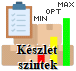
Minden termékhez és raktárhoz tartozik egy-egy külön törzsadat, amely
megmutatja az adott termék és raktár metszetéhez tartozó minimális, optimális
és maximális készletszinteket. Az új modullal bevezetésre került a szintek
automatizált, AI támogatott kalkulációja. Ennek bõvebb összefoglalója:
Automatikus Készletszint
Kalkuláció Modul
1. A modul funkciója és célja
A modul feladata a cikktörzsben szereplõ termékek raktárkészletezési paramétereinek (Minimum, Optimum, Maximum) automatizált, statisztikai alapú meghatározása. A rendszer a manuális becslés helyett a tényadatokra (lezárt számlák tételei) támaszkodva, matematikai algoritmusokkal optimalizálja a készletszinteket a készlethiány (stock-out) és a túlkészletezés elkerülése érdekében.
2. Alkalmazott módszertan
A kalkuláció alapja a Súlyozott Mozgóátlag (Weighted Moving Average - WMA).
A hagyományos számtani átlaggal ellentétben ez a módszer az elemzési idõszak adatpontjait eltérõ súlyozással veszi figyelembe: a frissebb értékesítési adatok nagyobb súllyal szerepelnek a számításban. Ez biztosítja a rendszer reszponzivitását a piaci trendekre és a szezonalitásra.
A rendszer az alábbi értékeket frissíti cikkszámonként:
● MINIMUM (Biztonsági készlet): A kereslet ingadozását (szórás) és a beszerzési idõt fedezõ pufferkészlet.
● OPTIMUM (Rendelési pont): A beszerzési idõ alatti várható fogyás és a biztonsági készlet összege.
● MAXIMUM: A készletezési szint felsõ korlátja (alapértelmezetten az Optimum érték szorzata).
3. Konfigurációs paraméterek
A felhasználói felületen az alábbi beállításokkal kalibrálható az algoritmus mûködése:
3.1. Ütemezés és Végrehajtás
● Végrehajtási gyakoriság: Meghatározza az újraszámítási ciklust (pl. Hónap).
● Futtatás napja (negatív offset): A periódus zárása elõtti napok száma.
○ Értelmezés: 0 esetén a periódus elsõ napján; pozitív érték esetén a periódus vége elõtt X nappal történik a futtatás.
● Fail-safe mechanizmus (Catch-up logika): A rendszer automatikusan detektálja a szerverleállás miatt elmaradt ütemezett feladatokat. Az újraindulást követõ elsõ lehetséges idõablakban a kalkuláció automatikusan pótlásra kerül.
3.2. Bemeneti változók
● Elemzési idõszak: A visszatekintés idõablaka napokban (Standard érték: 90 nap). A rendszer ezen idõszak lezárt bizonylatait dolgozza fel.
● Beszerzési idõ (Lead Time): A megrendelés leadása és a termék bevételezése között átlagosan eltelt idõ napokban.
3.3. Szolgáltatási szint és
Érzékenység (Haladó beállítások)
Szolgáltatási szint (Service Level - Z):
Statisztikai valószínûségi változó, amely meghatározza az ellátásbiztonság mértékét.
● 90% (Z=1,28): Alacsonyabb tõkelekötés, mérsékelt kockázat.
● 95% (Z=1,64): Standard kereskedelmi beállítás.
● 98% (Z=2,05): Kiemelt rendelkezésre állás, magasabb biztonsági készlet.
Számítási képlet:
Minimum = Z * σ * √ LT
Jelmagyarázat: Z = Szolgáltatási szint tényezõje, σ = Kereslet szórása (Standard Deviation), LT = Beszerzési idõ.
Piaci érzékenység (Smoothing Factor):
Az algoritmus súlyozási dinamikáját szabályozó együttható.
● Stabil (Alacsony érték): Erõs simítás, a rendszer kevésbé reagál az eseti kiugrásokra.
● Agilis (Magas érték): A legutolsó idõszak adatai dominálnak, gyors adaptáció a trendváltozásokhoz.
4. Kezelõfelület további
funkciói
● Automatikus készletszint kalkuláció engedélyezése: A modul globális státuszának (Aktív/Inaktív) kapcsolója. Aktiválás esetén a háttérfolyamat (Event Scheduler) az ütemezés (Végrehajtási gyakoriság és futtatás napja offset) szerint fut.
● Soron kívüli futtatás: Kényszerített indítás. A funkció az ütemezéstõl függetlenül, azonnal végrehajtja a kalkulációt az aktuális paraméterekkel.
● Mentés: A konfigurációs változók rögzítése az adatbázisban és a következõ futási idõpont újra kalkulálása.
● Státuszjelzõ: jelzi, hogy a készletszint kalkulációk automatikus ütemezése aktív-e.
7.033. Verzió (2025.12.08.)
Javítás: Az optikus üzletág katalógus moduljában a cellák adatainak tördelése egy korábbi fejlesztõkörnyezet frissítés miatt nem volt megfelelõ, ez javításra került.
Módosítások:
· A program beállításokban, a bizonylatok beállításainál be és kikapcsolható, hogy készpénzes számla esetén a teljesítés automatikusan egyezzen-e a keltével. Alapértelmezésben be van kapcsolva, ezt ki kell kapcsolni, ha nem szeretnénk, hogy automatikusan legyen kezelve a teljesítés.
· Szintén a bizonylatok beállításainál be és kikapcsolható, hogy készpénzes számla esetén a pénztárban automatikusan ki legyen-e egyenlítve a bizonylat (például a számla). Alapértelmezésben be van kapcsolva.
· A program beállításokban, a karbantartásnál egy új funkció lett létrehozva, a bankos tételek és a pénztári bizonylat tételek újra sorszámozására. Ez a funkció csak speciális esetekre van.
· Ha a bizonylat listában több bizonylatot jelölünk ki (a sorok elején több sor van kipipálva), akkor az eszköztáron a bizonylat lezárás gombbal egyszerre zárhatók le ezek a bizonylatok. A mûvelet végrehajtása elõtt biztonsági kérdés jelenik meg. Választható, hogy mégis inkább csak azt a bizonylatot zárjuk-e le, amelyiken a sorkijelölõ sáv áll.
· Ha a bizonylat listában több bizonylat van kijelölve, akkor az eszköztáron a bizonylat konvertálás gombbal egyszerre több bizonylatot is konvertálhatunk egy másik típusúra. Csak lezárt bizonylatokkal mûködik. Ebben az esetben is megerõsítõ kérdés jelenik meg.
· A bizonylat konvertálás beállítás ablakban kiválasztható, hogy automatikusan lezáródjon-e az új bizonylat, miután az elkészült. Ezt óvatosan kell használni, mert ez esetben nem lesz lehetõségünk a bizonylat manuális módosítására.
· A termékcsoportok (vagy árucsoportok) modulban a szerkesztõablakban egy új fülre (Webshop nevû) kerültek a webshop beállítások, itt kiválasztható, hogy melyik webshopban szeretnénk megjeleníteni az adott termékcsoport kategóriát.
· A terméktörzs szerkesztõben alul egy új fülre (Webshop néven) kerültek a webshop beállítások, itt lehet kijelölni, hogy a termék mely webshopokban jelenjen meg. Korábban ezek kiválasztási lehetõsége a szerkesztõablak tetején volt. Most már 5 webshop közül lehet választani, ez nem fért volna már ki, ezért került külön fülre. Ide kerülhetnek majd késõbbi egyéb webshop beállítások is.
7.032. Verzió (2025.06.16.)
Javítás:
· Egy korábbi módosítás miatt ha új munkatársat rögzítettünk (HR/Munkatársak modul), akkor annak nem adott automatikusan soron következõ új sorszámot, ez javításra került.
· Szintén egy korábbi módosítás miatt nem lehetett másolni (új másolatként megnyitni egy már létezõt) a banki és pénztári bizonylatokat, ez is megoldásra került.
· A desktop méretezés korábbi javítása miatt a gombok feliratai el voltak tolódva, ez javítva lett.
· A partner CRM kérdõív adatok rosszul voltak tördelve a partner szerkesztõben, ez javításra került.
· A beépített böngészõ (amely megjeleníti a webes dokumentumokat, például a kézikönyvet és a verziótörténetet) nem méretezõdött át, amikor az ablakot átméreteztük. Ez javításra került.
7.031. Verzió (2025.05.29.)
Javítás:
· Windows 11 alatt a desktop méretezést nem kezelte megfelelõen a szoftver (a betûméretek túl nagy méretre állítódtak be), ez javításra került.
A szoftver
kézikönyve (amely a szoftverben a fõképernyõ jobb felsõ sarkában, a Segítség funkció alatt megnyíló helyi menübõl
érhetõ el) bõvült azokkal a módosításokkal, amelyek a változásnaplóban voltak
vezetve. A változások átvezetése folyamatosan történik. A jövõben mindig
aktualizálva lesz a kézikönyv a változtatásokkal együtt.
7.030. Verzió (2025.05.17.)
Javítás:
·
A cégnév alapján történõ cégadat
lekérdezéshez (ami az adószám alapján történõ lekérdezés fordítottja) új
keresõt használ a rendszer. Ebbõl akár részletesebb adatok is kinyerhetõk
lesznek, amelyek a normál NAV lekérdezésbõl nem tudhatók meg.
7.029. Verzió (2025.04.15.)
Módosítás:
· Néhány egyedi modul módosítása, az érintett cégekkel egyeztetve.
·
KIVA adózási forma beállítható a
beállításokban, a saját cég adatainál.
7.028. Verzió (2025.03.10.)
Javítás:
· További ár módosítás jogosultsági probléma és a jogosultságok betöltése probléma javítva.
7.026. Verzió (2025.03.10.)
Javítás:
· Az árengedményre és árazásra vonatkozó jogosultságok javítva.
Módosítás:
· Az adatbázis archiválás modul új verziót kapott.
7.025. Verzió (2025.02.17.)
Javítás:
· Az árengedmények módosítása beállítás tiltotta a belépést az átárazásba bevételezéskor. Javítva.
Módosítás:
· Az adatbázis javítása funkció új ellenõrzésekkel és hibalehetõségek megoldásával bõvült.
7.024. Verzió (2025.02.09.)
Javítás:
· A kimutatások / bevételi diagram modulban hibásan kerültek kiírásra az összegek. Javítva.
· Ha egy felahasználónak nem volt engedélye szerkeszteni az engedményeket, akkor a tételszerkesztõben (például számla esetén) az ENTER gombbal továbblépés elakadt a mennyiségnél és csak egérgombbal lehetett tovább kattintani. Javítva.
·
A közösségi EU adószám ellenõrzése most
már 12 helyett 13 számjegyes. Az ellenõrzés csak akkor fut le, ha ki van töltve
egy cég közösségi EU adószáma.
Módosítás:
·
A kimutatások / bevételi diagram bõvült
két lekérdezés típussal:
Partnercsoportonkénti bevételek, dátum szerinti csoportosítással.
Árucsoport telephelyenként csoportosított bevételei.
7.023. Verzió (2025.01.31.)
Javítás:
· A manuális adatbázis javító parancsfuttatást nem rendszergazdai jogú felhasználó is el tudta végezni, ez most javításra került.
·
A garancialeveleknél nem jelent meg az év
és hónap szûrés, ez javításra került.
Módosítás:
· A Nav számla jelentésekért felelõs rész új verzióra frissül a rendszerben, követve a központi változtatásokat.
· A partnereknél megadható egyedi felár százalékos érték. Ha egy partnernek a termékeinket, vagy szolgáltatásainkat drágábban szeretnénk nyújani, abban az esetben alkalmazandó. Az ezzel növelt árból továbbra is vonódnak a kedvezmények, engedmények.
· A partnereknél a második fülön (kapcsolat, törzsvásárlói adatok) alul, a megjegyzés mezõbe beírt megjegyzést számla kiállításakor megjeleníthetjük autoimatikusan, ha a felette található kapcsolót bekapcsoljuk.
· A kimutatásoknál a bevételi diagram modulban lehet partner bevételi adatokra és a telephelyenkénti összesített bevételekre is külön kimutatást készíteni. A diagram kezelése is változott, hasonlóvá vált a fõ listákból készíthetõ diagramhoz, ki lehet választani a diagram típust és bekapcsolható a 3D mód, elérhetõ a diagram alaphelyzetbe állítása, az egérgörgõvel zommolás és a bal egérgombbal a diagram tartalmának mozgatása is.
7.022. Verzió (2024.11.04.)
Javítás:
·
A manuális tétel átvételnél az összes
bizonylat kijelölésekor nem összegezte a végösszegeket. Javítva.
Módosítás:
· A tömeges kiegyenlítések végrehajtása után megjelenik egy napló a létrejött pénzügyi bizonylatokról. Ez a napló mentésre is kerül a LOG könyvtárba, az aktuális mûködési naplófájlba.
7.021. Verzió (2024.10.29.)
Javítás:
· A manuális tétel átvételnél a rendelészám adat kétszer volt lekérdezve és emiatt kiakadt a modul (csak újabb adatbáziskezelõ verziónál jelentkezett a hiba). Javítva.
· A már létezõ, mentett bizonylatok megnyitásakor a kelte adat módosíthatósága nem jól állítódott be.
7.020. Verzió (2024.10.28.)
Javítás:
· A kintlevõségkezelõ modulban a partnerek listájában nem jelent meg a számlázási cím adat. Ez pótolva lett.
Módosítások, fejlesztések:
1. A program beállítások modulban, az alap beállítások és bizonylat beállítások tematikusan átcsoportosításra kerültek és színkódokat kaptak az átláthatóság érdekében.
2. A program beállítások modulban a karbantartás fülön az áfa átírás funkciónál szabadon megadható a régi és az új áfa kulcs az átíráshoz. Ez a funkció akkor használandó, amikor valamelyik áfakulcs hivatalosan megváltozik. Ebben az esetben az áfatörzsben létre kell hozni az új áfa kulcsot és utána ezzel a funkcióval az egész adatbázisban kicserélhetõ a régi áfakulcs az újra.
3. A számlák és egyéb okiratok, bizonylatok listája felett a helyesbítés gomb nem volt kihelyezve alapértelmezettként az eszköztárra. Ez a hiányosság pótlásra került és most már a helyesbítés gomb is elérhetõ alapértelmezettként az eszköztáron.
4. Három új beállítás a számlákhoz (a program beállítások modulban, az alapbeállítások fülön):
· A helyesbítõ számlák érvényteleníthetõk-e.
· A helyesbítõ számlákból készülhetnek-e további helyesbítõ számlák.
· Az eredeti elsõ számlából készülhet-e egynél több helyesbítõ számla.
Megjegyzés: Ezek a beállítások alapértelmezettként ki vannak kapcsolva.
5. Új beállítás, a profit kalkuláció alapjának beállításához (a program beállítások modulban, az alapbeállítások fülön). Kétféle beállítási módja van:
· Annak a sarzsnak a beszerzési ára, amelybõl kiadára került a termék. Ez a legpontosabb kalkulációs módszer, mert a pontos beszerzési árat vonja le az eladási árból és így kapjuk meg a profitot.
· A 0. árkategória. Ez nem pontos, mert mindig a 0. árkategária aktuális értékéhez viszonyít.
6. Két új kapcsoló a bizonylatok beállításaiban (a program beállítások modulban, a bizonylatok beállításai fülön, a lista végén):
· A kelte automatikusan mindig az aktuális legyen?
· A kelte szabadon módosítható legyen?
Megjegyzés: A kapcsolók beállításai megfelelnek az eddigi mûködésnek. Az eltérõ mûködéshez át kell konfigurálni ezeket a kapcsolókat. A vevõi számla esetén a beállításoktól függetlenül védett, automatikusan beállított adat a számla kelte.
7. A bizonylat tétel átvétel (manuális) modulban a táblázatokban megjelent a rendelésszám oszlop és szûrni is lehet erre az adatra.
8. Új jogosultságok a munkatársaknak (felhasználóknak):
· Árengedmények létrehozása és módosítása jogosultság (a bizonylatokon, a partnerek törzsadatoknál, az árkategóriáknál, az akcióknál).
· Eredménykimutatások lekérdezése jogosultság (a kimutatások, döntéstámogató fõmenüpont alatt).
· Halasztott fizetés (átutalás) beállítása jogosultság (a bizonylatokon, vagy a partnereken).
· A vevõi számla modulban a pénzügyi kiegyenlítés és a tömeges kiegyenlítés is jogosultság függõ.
9. A raktár átadás, raktárközi rendelés, selejtezés listában is bekapcsolható a részletek funkció (a részletek sáv), amelyen a részletezett tétel lista elérhetõ.
10. Az eladott termékek összértéke
megjeleníthetõ egy külön diagramon. Ez egy már meglévõ diagram/grafikon
rajzoló modul teljes átalakításával jött létre (kimutatások, döntéstámgoató
fõmenüpont alatt a bevételi diagram modul).
A következõ beállítások tehetõk meg:
A kimutatás típusa:
· Összes bevétel
· Termék szerinti bevételek: kiválasztható az a termék, amelynek értékesítési grafikonját szeretnénk látni.
· Árucsoport szerinte bevételek: kiválasztható az az árucsoport, amelynek értékesítési grafikonját szeretnénk látni.
Idõszak:
· Év (havi bontásban)
· Év, hónap (napi bontásban)
· Két dátum között (napi bontásban)
· Utolsó 12 hónap (havi bontásban)
A grafikon a Rajzolás gomb megnyomásakor rajzolódik ki újra, az új beállításokkal.
Ha a grafikonon az adatok nem
férnek ki, akkor a jobb egérgombbal vonszolhatjuk a képernyõt jobbra és balra,
hogy elõtûnjenek a grafikon képernyõn kívüli részei.
7.010. Verzió (2024.07.08.)
Módosítások:
·
Göngyöleg kezelés:
o
A terméktörzs termék szerkesztõbe
bekerült egy külön Göngyöleg fül. Ezen a fülön lehet hozzáadni a
termékhez tartozó göngyölegeket. Például ásványvizekhez a PET palakot, amely
visszaváltható. A göngyöleg is egy termék, tehát azt is a terméktörzsben kell
létrehozni, annak Jelleg beállítását Göngyöleg típusra kell
állítani (mert a göngyöleg fülön csak göngyöleg típusú termékek közül lehet
választani).
Ügyeljünk arra, hogy a göngyöleg termék áfa és árkategória ár
adatait is megfelelõen adjuk meg. PET palack esetén célszerû minden
árkategóriánál ugyanazt az árat megadni, mert a palack elvileg fix árú
göngyöleg.
Fontos, hogy egy termékhez több göngyöleg is hozzáadható, de általában egy
termékhez csak egy göngyöleg tartozik, ezért ez különleges esetek miatt van
így. A göngyöleg mennyiségének szinte mindig 1 darabot kell megadni (1
darab/termék). De megadható nagyobb mennyiség is, ez a lehetõség egyéb esetekre
van. Általában egy termékhez egy göngyöleg szokott tartozni, 1 darabos
mennyiséggel.
Kitérve a göngyöleg áfájára, ha a számla kiállító nem veszi vissza a
göngyöleget, akkor elméletileg neki kell megfizetnie az áfát utána, tehát a
göngyölegnek tartalmaznia kell az áfát is. A biztonság kedvéért errõl érdemes
megkérdezni a könyvelõt is.
o
Ha egy bizonylathoz hozáadjuk azt a
terméket, amelynek van göngyölege, akkor automatikusan létrejön mellé a
göngyölegnek is egy tétel. Ha az eredeti terméket módosítjuk, akkor a göngyöleg
tétele is módosul. A mennyisége az eredeti tétel menyiségének és a göngyöleg
mennyiségének szorzata lesz (ideális esetben a göngyöleg mennyisége egy, tehát
egyezni fog a tétel mennyiségével). Ha az eredeti tételt töröljük, akkor a
göngyöleg tétele is törlõdni fog. A göngyöleg nem örökli az eredeti termék
engedményét, mert a göngyölegek általában fix árasok.
o
A göngyöleg is vonódik külön a készletrõl
eladáskor, készletrõl kiadáskor.
o
Kezdésnek, a göngyöleget tartalmazó
termékeket árazzuk át (vonjuk le belõle a göngyöleg árát), ha azok most még
tartalmazzák a göngyöleg árát.
o
Olyan termékhez ne vegyünk fel göngyöleget,
amelynél nem szeretnénk, hogy külön tételen jelenjen meg. Visszaváltható
göngyölegek esetén alkalmazzuk.
o
A göngyöleg visszavétele bevételi oldalon
egyszerûen történik, szállítólevélen, számlán, vagy közvetlenül raktár
bevét bizonylaton vegyük vissza az üres göngyölegeket és akkor érdemes egy
dedikált raktárba bevételezni.
Ha frissítés után adódik valamilyen probléma, akkor
futtatni kell az adatkezelés, beállítások fõmenüpont alatt az adatbázis
javítása funkciót (a közben megjelenõ kérdésekre lehet nem választ adni,
mert elég az alapvetõ javítási funkció).
A frissítést mindig teszteljük, de nagyon ritkán elõfordulhat, hogy az
adatbázis nem frissül megfelelõen (ez az eltérõ adatbázis-szerver verziókból
adódhat, a felhõs változatot használók esetében központilag frissítjük és
egységes a szerver verzió, ebben az esetben kizárt mindennemû probléma).
7.009. Verzió (2024.06.05.)
Módosítások:
·
Ha egy átutalásos bizonylatot (számlát)
készpénzesen törleszünk, akkor ez az eset most már külön pénztártömb sorszámon
(PZA) fut. Ez akkor mûködik, ha a bizonylat lista feletti Kiegyenlítés
funkciót használjuk, vagy a bizonylatot megnyitva, az egyenlítés fülön
egyenlítjük ki a fennmaradó összeget. Ha átutalásos bizonylatot (számlát)
készpénzzel szeretnénk egyenlíteni, akkor a kiegyenlítés ablakban a fizetési
módot ÁTUTALÁS beállítástól KÉSZPÉNZ beállításra állítsuk át, ezután módosítsuk
a pénztárat és az összeget ha szükséges és mentsük.
·
A dokumentum nyomtatvány szerkesztõ jelszót
kért, ez ki lett kapcsolva.
·
Az adatbázis automatikus javítása funkcióba bekerült
néhány újabb ellenõrzési és javítási eljárás.
7.008. Verzió (2024.04.23.)
Javítások:
·
A bizonylatok listájában a normál és a tételes
nézetek váltása között az oszlop beállítások alapértelmezésre álltak át. Mert
egy listán belül nem voltak megkülönböztetve a nézet módok. Ez módosítva lett
úgy, hogy mindig az alapértelmezettként mentett állapot töltõdjön vissza a
normál és tételes nézet váltáskor.
Megjegyzés: Alapértelmezett állapotot úgy lehet menteni, ha a táblázaton a
mentendõ nézet módban a jobb klikkre megjelenõ menüben alul az
oszlopbeállításokat mentjük alapértelmezettként. Az alapértelmezett
oszlopbeállítások felhasználónként változnak, tehát minden felhasználóhoz más
alapértelmezések menthetõk.
Módosítások:
·
A megjelenítési téma választásnál beállítható az
általános betûtípus és a betûméret az adott munkaállomásra. A betûtípus
módosítás a táblázatokban és a szövegbeviteli mezõkben látható betûket érinti.
Ügyelni kell arra, hogy egyes betûtípus és betûméret kombinációknál több helyen
is levágódhatnak a feiratok és a szövegek. Ebben az esetben meg kell próbálni
másik típust és méret beállítást.
·
A számla jelentõ rendszeren történtek
módosítások. Abban az esetben, amikor a NAV szervere nem válaszol, de
valószínûleg befogadta a jelentett számlát, a számla lekérdezés funkció
vizsgálja a jelentés meglétét. Normál esetben továbbra is a szabványos státusz
lekérdezés ellenõrzi a jelentett számla feldolgozottsági állapotát. Ez a
változtatás a NAVreport szerver oldali szolgáltatásban is végrehajtásra került.
·
A termékek végleges törlési lehetõsége megszûnt.
Ezután mindenhol, ahol termékek törlése történik, ez nem teljes törlést jelent,
hanem csak a termék inaktívvá válik, a megszûnt jelzõ értéke igazra
(kipipáltra) változik. A megszûntként megjelölt termék és annak adatai az
adatbázisban továbbra is meglesznek, de nem lesz látható és a webshopokba sem
szinkronizálódik fel. Ha egy ilyen termék adatlapján kivesszük a megszûnt
jelzés után a pipát, akkor újra aktív lesz.
7.007. Verzió (2024.03.10.)
Javítások:
·
A vevõi számla táblázat listánál elõfordult,
hogy ha tételes lista nézetben kikapcsoltuk egy lista láthatóságát, akkor
normál nézetben azon az oszlop indexen található oszlop láthatósága is
kikapcsolódott. Azért fordulhatott elõ, mert egy modul táblázat kétféle nézete
a normál és a tételes nézet. Ez javításra került.
·
Ha a táblázatokban valamilyen oknál fogva az
egyik oszlop szélessége nagyobbra van állítva, mint amilyen széles a táblázat,
akkor annak szélességét emiatt lehetetlen volt összehúzni. Ilyen esetek
elõfordulhattak, amikor egy nagyobb képernyõn készült mentett listát akartunk
megtekinteni egy kis felbontású kijelzõn. Erre megoldás, hogy ezután az
oszlopok szélessége maximálisan mindig a táblázat szélességénél kisebb lehet.
Ha egy oszlop szélesebb, akkor a táblázat teljes szélességénél kisebbre
állítódik be automatikusan.
·
A könyvelés modul tételes nézetében nem jelentek
meg a tartozik és követel oszlopok, ezek hozzá lettek adva.
7.006. Verzió (2024.03.06.) kiegészítõ frissítés:
Javítások:
· Az egyik táblázat paraméterfájlban hiányzott a kelte oszlop, ez pótolva lett. Emiatt fõverzió változás nem történt, csak a problémás fájl kerül módosításra.
7.006. Verzió (2024.03.05.)
Javítások:
·
A gyártás és a lejárat dátuma lemaradt az
árvetés tételes nézetébõl, ez pótlásra került.
·
A beállításokban nem lehetett törölni a logókat,
javítva lett.
·
Az alapértelmezettként mentett táblázat nézet a
bejelentkezett felhasználókhoz nem töltõdött be automatikusan, javításra
került.
7.005. Verzió (2024.03.04.)
Javítások:
· Ha a bizonylat szerkesztõben a tétel lista feletti vonalkód beolvasásra szolgáló szövegmezõbe akkor olvastunk be kódot, amikor elõzõleg még nem volt mentve a bizonylat (vagy nem tudott mentõdni, mert nem volt kiválasztva partner, vagy más alapvetõ adat), akkor hibák adódtak. Ez javítva lett.
· A szoftverben mindenhol (néhány kivétellel, mint például az ikonok feliratai) a lehetõ legnagyobbra lett állítva a betûméret a jobb olvashatóság érdekében.
Fõbb módosítások:
·
Ha adathordozót értékesítünk, akkor a bizonylat
tétel szerkesztõben a megjegyzések fülön lehet rögzíteni a törlési kódot, vagy
ha több darabot értékesítünk ugyanabból, akkor a kódokat egymás alá kell írni.
A termék adathordozó mivoltát a terméktörzsben, a termék adatlapján kell
beállítani a JELLEG beállításnál az Adathordozó kiválasztásával.
Ha úgy próbálunk menteni a tételszerkesztõben egy adathordozó tételt, hogy
nincs rögzítve hozzá törlési kód, akkor figyelmeztetés jelenik meg.
Az adathordozó törlési kódok megjelennek a számlán is és a NAV jelentésbe is
bekerülnek, ezzel teljesítésre kerül a törlési kódokkal kapcsolatos
adatszolgáltatás.
· A fõ képernyõn látható listák jobb egérgomb kattintásos menüjei össze lettek vonva, most már egy menüben lehet beállítani az összes a táblázattal kapcsolatos funkciót. Ide került az oszlopok láthatóságának beálíltási lehetõsége és az oszlop összesítés típusok beállítása is, egy-egy almenübe.
· A fõ képernyõn a különbözõ bizonylatok tételes listájához hozzá lett adva a gyártás és a lejárat dátuma (a legvégén van) és szûrhetõ is. A részletek nézetben is, a tételek fülön megjelent ez a két oszlop. A bizonylatokon belül található tétel listához is hozzá lett adva ennek a két oszlopnak a láthatósága (itt is a végén).
·
Új funkció jelent meg, a bizonylatok
archiválása.
Ahol már több milliós rekordszám gyûlt össze, ott lassíthatja a rendszer
mûködését, ha az adatbázis szervernek nagy adathalmazon kell dolgoznia és ez a
bizonylatok esetén különösen érvényesül, mert a bizonylatkezelés
láncolatszerûen mûködik és sok kalkulált adattal számol.
Ezen segít, ha a régi évek bizonylatait át tudjuk tenni egy archivumba, amely
szintén az adatbázisban van, de elkülönülten, mintha egy mentés lenne.
o
A bizonylatok archiválása funkció a beállítások,
adatkezelés fõmenüpontban érhetõ el. Ezt a modult megnyitva kiválasztható,
hogy mely évnél régebbi bizonylatok kerüljenek át az archívumba, ezután a
végrehajtás gombbal indul az archiválási folyamat, amely a rekordszámtól és a
szerver teljesítményétõl függõen igénybe vehet akár 60 percet is.
Ha eleve nincsenek a rendszerrel sebességbeli gondok, kevés bizonylatunk
van, akkor nem szükséges, nem célszerû az archiválást használni.
Fontos, hogy az archiválás idején senki más ne legyen belépve a rendszerbe, ne
használják az Astro ERP-t más munkatársak.
Az archivált bizonylatok nem lesznek elérhetõk. Csak akkor lesznek újra
elérhetõk, ha visszaállítjuk a bizonylatokat az archívumból.
o A bizonylat visszaállítás funkciót is a beállítások, adatkezelés fõmenüpontban találjuk. Ezt a modult elindítva visszaállíthatjuk mindegyik archivált bizonylatot, vagy kiválaszthatunk egy évet és csak azt állítjuk vissza, ez kevesebb idõt vesz igénybe.
7.000. Verzió (2024.01.04.)
2024. évi verzió.
Javítások, módosítások:
· A fõmenü tartalma eltolódott, ha nem 100% desktop méretezés volt beállítva és a teljes képernyõsként elmentett ablakok visszaállításakor azok tartalma nem igazodott az ablak mérethez. Ennek oka az volt, hogy a desktop méretezés összeakadt a elmentett ablak beállításokkal. A helyes méretezés és az ablakkezelés módosítva lett.
·
A Nav számla jelentés frissült az új API
verziónak megfelelõen.
Fontos információk:
·
Tavaly decemberben majdnem minden nap
tapasztalható volt, hogy a NAV szerverei nem voltak elérhetõk üzemzavar,
karbantartás, vagy túlterheltség miatt. Ezek a problémák a jövõben is
fennállhatnak. A NAV szervereinek elérhetõségét a https://onlineszamla.nav.gov.hu/home
oldalon lent, a Hírek részben lehet ellenõrizni. Itt nem minden
üzemzavart jeleznek elõre. Elõfordul, hogy csak utólag jegyzik be a hírekbe a
korábbi üzemzavart.
Ha a számlák nem kerülnek jelentésre napközben, akkor legkésõbb éjjel (ha a
szerverre van telepítve a NAVreport számla jelentõ szolgáltatás) vagy reggel az
elsõ program indításkor történnek meg a jelentések.
· Ha egy külföldi cég elektronikus formátumban kéri, vagy küldi a számlát, akkor abban az esetben a partner által preferált formátumot el kell tõle kérni és elküldeni nekünk e-mailben. Vagy a kapott fájlt, vagy egy formátum leírást, amit el kell kérni a partnertõl. Ebbõl a formátumból legkésõbb másnapra készítûnk egy import lehetõséget, ami egy frissítéssel letöltõdik. Ezután az Astro ERP képes lesz a külföldi eszámla formátum kezelésére. Ez azért így oldható meg, mert országonként eltérõ formátumok vannak és ezért nehéz elõre felkészülni mindegyikre.
· A 2024. évi frissítési elõfizetés és support díjak nem változtak a tavalyihoz képest. Ez az elõfizetés tartalmazza az egész évre a frissítéseket és pár órás segítségnyújtást, tanácsadást. A 2024. évi elõfizetések aktiválása ma (jan.4.) folyamatban van.
6.908. Verzió (2023.12.19.)
Javítások, módosítások:
·
A bizonylatokon a mobilkészülékeken futó
adatgyûjtõ alkalmazás adatfájljának beolvasásakor nem volt ellenõrizve,
hogy az új bizonylat mentésre került-e a lista beolvasása elõtt. Ez okozhatta
azt a jelenséget, hogy amennyiben nem történt meg a bizonylat mentése, abban az
esetben a beolvasott tételek nem kötõdtek a bizonylathoz és ez további problémákat
okozhatott. A bizonylat akkor nem került automatikusan mentésre, ha nem adtunk
meg egy fontos alap adatot, mint például a partnert.
A frissítés után ellenõrésre kerül beolvasás elõtt, ha valamilyen okból nem
menthetõ a bizonylat és ha ez nem sikerül, üzenet jelenik meg. A tétel
lista betöltés után a tételek már jól fognak mûködni, megfelelõen jelenik majd
meg a tételeken az áfakulcs (az áfamentességi kapcsoló állása szerint) és a
végösszesítés is kalkulálásra kerül.
·
Az androidos adatgyûjtõ alkalmazás
módosításra került.
Ezután használható olyan adatgyûjtõ célkészülékekkel is, amelyek a
mobiltelefonokhoz hasonlóan szintén Android rendszert futtatnak.
További módosítások az adatbeolvasó alkalmazásban:
o
Az alkalmazás beállításaiban állítható át
kamerás beolvasásról lézerszkennerre a beolvasás módja.
Lézerszkenner módban eltûnik a kamerakép, mert a kamera már nem lesz
használatban, hanem helyette a készülékbe épített, vagy hozzá csatlakoztatott
lézerszkenner olvassa majd be a kódokat.
A fõ képernyõn ennek a beolvasását is a START gombbal kell indítani, ezután a
képernyõ tetején lesz egy sáv, ott fog megjelenni mindig az aktuálisan
beolvasott kód egy pillanatra.
o
A lézerszkenner beolvasási mód esetén a
beállításokban kipipálható egy kapcsoló, amely lehetõvé teszi, hogy a
beolvasott kódsorozat fél másodperc után automatikusan bekerüljön a listába.
Ezt a lehetõséget akkor kell használni, ha a készülékbe épített lézerszkenner
beolvasó rész a kódsorozat végére nem tesz ENTER (13) karakterkódot.
A beállítások módosítása után ne felejtsük el menteni a beálíltásokat.
Az adatgyûjtõ alkalmazás letöltési linkjei:
32 bites Android rendszerhez:
https://whirlbyte.com/down/BaCoR_Barcode_Reader32.apk
64 bites Android rendszerhez:
https://whirlbyte.com/down/BaCoR_Barcode_Reader.apk
Az alkalmazás frissítése elõtt le kell
annak korábbi, futó változatát állítani, de biztosabb, ha uninstalláljuk és
utána töltjük le az új verziót.
Adatgyûjtõ célkészülékeken valószínûbb,
hogy a 32 bites verzió fog mûködni.
6.905. Verzió (2023.08.28.)
Javítások:
· A bizonylatok lezárásakor az összegzés végrehajtása ellenõrzésre kerül. Ha valamilyen okból nem hajtódik végre, akkor nem záródik le a bizonylat.
· Adatbázis paraméterek módosításával egyszerûbb konkurenciakezelés, valamivel gyorsabb lekérdezések.
· A bizonylatok csoportos nyomtatása árajánlatok esetén hibát írt ki. Ha valamelyik adat nem olvasható ki (üres), vagy a bizonylat beállításai nem megfelelõek, akkor abban az esetben nem hajtódik végre a nyomtatás.
Módosítások:
· A bizonylat tétel szerkesztõben az adatok mentésekor a korábbi beszerzési ár és az eladási ár összehasonlítása nem érinti a stornózott bevételezéseket.
·
Egy új grafikus téma került hozzáadásra (a
beállítások, adatkezelés fõmenüpontban a megjelenés témabeállító modulban, a
grafikus téma lista végén található).
Az indításkor látható splash indítókép grafikája is változott és a kiírt
szövegek nagyobbak lettek, hogy könnyebben követhetõ legyen, ha valamiért a
szokásosnál lassabban töltõdik be a program.
6.904. Verzió (2023.08.21.)
Javítások:
· Az elõzõ frissítés utáni új verzióban töltõdés indikátor megkapta a fókuszt, ezért az éppen végzett munkafolyamat arra az idõre magszakadhatott. Ez több észrevehetõ problémát okozott a lista szûréseknél. Javításra került, a töltõdés jelzõ úgy mûködik, ahogy kell és nem kap fókuszt, a lista szûrés most már újra folyamatos és nem szakad meg, amikor beírjuk a keresendõ adatot, vagy közben másik modulra váltunk.
· A bizonylatoknál a részletezõ sávnál a tételek fülön a forrás bizonylat és a leszármazott bizonylatok listája nem jelent meg, ez javításra került.
Módosítások:
· Bizonylat tétel mentésekor, mielõtt bezáródna a tétel szerkesztõ, lefut egy vizsgálat, hogy a megadott eladási ár (mínusz engedmény, ha az nem 0) alacsonyabb-e a legutóbbi beszerzési árnál. Ha alacsonyabb eladási árat adtunk meg, akkor figyelmeztetés jelenik meg és eldönthetõ, hogy így is tárolásra kerüljön-e a tétel.
· Ha egy megnyitott bizonylatról konvertálunk egy másikat, akkor az eredeti bizonylat bezáródik, így nem marad ott zavaróan.
6.903. Verzió (2023.08.14.)
Módosítások:
·
Kisebb kliens oldali optimalizálások.
Ezzel kisebb-nagyobb mértékben gyorsabb lett az adatok betöltése az
adatbázisból és azok kliens oldali feldolgozása. Alapvetõen a sebesség továbbra
is az adatbázistól függ, milyen gyorsan állítja össze az adatokat, amelyeket a
szoftver kliens oldala megkap.
Adatbázis oldalról érdemes ellenõrizni, hogy az adatbázis-szervernek mekkora
memóriahasználat van engedélyezve. Ennek
növelésével drasztikus sebességnövekedés érhetõ el. Ha van a szerverben
16GB memória, ami már általános minimum, akkor ebbõl 6-8GB memóriát
paraméterezhetünk az adatbázis-szerver számára és még mindig marad elegendõ a
rendszer és egyéb feladatok számára.
· Az ablakkezelés gyorsítva lett. Néhány ablak nem jelent meg jól, kilógott a képernyõrõl a korábban elmentett nem megfelelõ pozíció és méret miatt, ez is korrigálásra került. Ez néha több monitoros környezetben okozhatott gondot.
· A várakozás jelzõ módosítva lett, az óráról egy csíkra, amely jól láthatóan kiírja, hogy milyen mûvelet történik éppen. A legtöbb esetben ez csak egy pillanatra tûnik fel, de hosszabb mûveleteknél (például sok oldalas nyomtatás, PDF generálás) már fontos lehet, hogy lássuk, milyen mûvelet történik. Kliens oldali feldolgozások esetén fut egy kis animáció is a csík bal oldalán. Szerver oldali, vagy nagy processzor erõforrás igényû mûveletek esetén ez a várakozás animáció nem fut, de ez nem jelenti azt, hogy le lenne fagyva a szoftver, hanem csak vár az adatbázis mûvelet eredményére.
·
A partner adatlapon az adószám mezõ
mellett volt eddig egy gomb, amely a partner cégneve alapján lekérdezte annak
adószámát.
Most mellé került egy újabb gomb, amely az adószám mezõbe beírt szám alapján
lekérdezi a cég adatait és kitölti a mezõket. Ezt új partner rögzítése esetén
ajánlott használni.
Ez a funkció a bizonylatokon a partner kiválasztó mezõ elõtt található mezõbe
beírt adószám esetén eddig is mûködött, ha abban a mezõben ENTER gombot
nyomtunk az adószám beírása után.
· A webshopok számára a termék leírást (ami alap esetben HTML formátumú) normál szöveggé konvertáló eljárás módosult úgy, hogy a sortöréseket is figyelembe veszi.
· Az adóhatósági ellenõrzési adatszolgáltatáson történt egy kisebb karakter kódolási és konverziós módosítás. Ez a funkció már nincs általános használatban, mert a helyét átvette a számlák kötelezõ jelentése, de egyes könyvelõprogramok továbbra is ezt a formátumot várják. Ez egy beépülõ modul, ezért pár másodperc eltelhet amíg elindul, mert a szoftver belsõ frissítõje ellenõrzi elérhetõ-e belõle frisebb verzió és ha igen, akkor letölti és csak ezután indul el.
· Tömeges bizonylat (számla) nyomtatás: A bizonylatok listája feletti eszköztáron található nyomtatás funkció ki lett egészítve úgy, hogy ha a nyomtatás gombra a jobb egérgombbal (bal kezes beállítás esetén bal egérgombbal) kattintunk, akkor egy helyi menü jelenik meg, amelyben a második lehetõséget (a kijelölt bizonylatok újranyomtatása) kiválasztva tömegesen kinyomtathatjuk a listában kijelölt, már lezárt bizonylatainkat.
6.902. Verzió (2023.07.17.)
A mûszarfalon
(start lap) a megjelenített gyorsjelentések dobozai idõnként a képernyõn
kívülre kerülhettek, mert a betöltõdésük alatt a pozícióik visszaállítása
ütközött a módosított ablakkezelõ rendszerrel, amely szintén megjelegyzte a
dobozok korábbi helyzetét. Ez javításra került.
Ha még mindig van olyan gyorsjelentés doboz, amely nem látható, akkor a
gyorsjelentések sorbarendezése funkciót ajánlott használni.
Módosítások:
Elérhetõ a mûködõ kettõs könyvvitel modul, amely most még béta verzióban mûködik, ami azt jelenti, hogy bizonyos listák még hiányoznak és még nincs bekapcsolva a köynvelés tételek automatikus generálása a számlák lezárása után (ez még belsõ tesztelés alatt van). A béta verziós köynvelés tesztelési célokat szolgál, a felhasználók megismerkedhetnek a modul mûködésével, amelynek kezelése egyszerû, de könyvelõt igényelhet, aki tudja, hogy mit hova kell könyvelni.
6.901. Verzió (2023.06.27.)
Javítások:
· Az aktív felhasználó kijelentkeztetése kilépéskor ki volt kapcsolva a tesztelés miatt. Emiatt nem került mentésre a felhasználó aktív idejének vége. Ez visszakapcsolásra került.
· A naptár megnyitásakor hiba történt abban az esetben, ha a táblázat több eseménytípust várt, mint amennyi volt. Ez javításra került.
·
Új gyártás kezdésekor hiba történt, mert várta a
kapcsolódó bizonylat sorszámát. Ez a tesztelés miatt maradt bekapcsolva, ezért
adódott a hiba, amelynek a mûködésre egyéb befolyása nem volt (a hiba
megjelent, de ettõl eltekintve mûködött a modul).
Szintén a gyártásnál, ha bizonylat tételbõl generáltunk gyártást, akkor elsõre
nem töltõdött ki a termék és a partner adatmezõ szövege. Ettõl eltekintve a
háttérben ezek az adatok kiválasztásra kerültek, csak nem jelentek meg. Ez
javításra került.
6.900. Verzió (2023.06.24.)
Módosítások:
· A frissítés mérete a harmadával csökkent. Gyorsabban letöltõdik és települ a következõ verziótól kezdve.
· A kézikönyv és a verziótörténet helyi könyvtárból átkültözött az internetre és onnan nyitja meg az Astro ERP a segítség menübõl is ezeket a dokumentumokat. Ez a módosítás lehetõvé teszi, hogy a kézikönyv a szoftvertõl függetlenül frissülhessen.
·
Az ablak és kijelzõkezelésben történtek változások. A szoftver
elindításakor azon a monitoron jelenik meg legközelebb, amelyiken bezártuk. Ha
azt a monitort lecsatlakoztattuk, amelyen a szoftver utoljára megjelent, akkor
az utolsó aktív monitoron kell megjelennie. Amennyiben ekkor sem jelenik meg,
abban az esetben a ⊞ Win+⇧ Shift+← vagy a ⊞ Win+⇧ Shift++→ billentyû kombinációkkal válthatunk a monitorok között, ha a szoftveren van a
fókusz.
·
Az ablakok többsége több példányban megnyitható és nem szükséges
bezárni ahhoz, hogy a fõképernyõn (vagy fõ ablakban) el tudjunk érni
funkciókat. Ezzel lehetõvé vált, hogy például egyszerre több bizonylatot
nyissunk meg. Néhány ablak maradt egy példányban megnyitható, például a lista,
jelentés készítõ, nyomtatás ablakok. A korábbi egy példányos mûködés
visszakapcsolható a program beállításokban, az általános beállítások fülön, a
beállítás lista végén (modális ablakok viszakapcsolása). A több ablak példány körültekintõbb
használatot követel meg, ezért az ablakok mindig a fõképernyõ felett jelennek
meg, hogy ne veszítse szem elõl a felahsználó.
· Az árfolyamokkal kapcsolatban beállítható a program beállításokban, a bizonylatok beállításai fülön az egyes bizonylatok számára, hogy az árfolyam dátuma a bizonylat kelte, vagy a teljesítés ideje legyen. Ha a teljesítés ideje van beállítva, de az késõbbi, mint az aktuális dátum, akkor a legutóbbi ismert árfolyam állítódik be.
·
A készletrõl pillanatfelvétel mentés készíthetõ. A
pillanatfelvétel mentés visszaállítható akár raktáranként is. Ezek a funkciók a beállítások fõmenüpont alatt
érhetõk el. A pillanatfelvétel az adatbázisba kerül mentésre, ezért figyelni
kell, hogy saját szerver használata esetén azon legyen elég hely, ha sok ilyen
pillanatfelvételt készítünk. Felhõs üzemmódban a mentések számla limitált
lehet. A pillanatfelvételek törölhetõek, a készlet visszaállítása modulban. A
pillanatfelvételek adataiból is lehet közvetlenül listázni a kimutatások
fõmenüpont alatt, a készlet listáknál, ha kipipáljuk a készlet
pillanatfelvételt és kiválasztjuk valamelyik ilyen korábbi készlet mentés
dátumát.
·
Történtek egyéb módosítások egyedi kérésekre, ezekrõl az azokat kérõ
ügyfelek tájékoztatást kaptak.
Javítások:
· Az árfolyamok az utolsó hét végére már nem frissültek, mert ez a mûvelet új openSSL verziót követelt meg. Ennek frissítése megtörtént.
· A partnerek mindegyike megjelent a gyártók között is. Ez javításra került, most már csak a gyártóként megjelölt partnerek jelennek meg a gyártók kiválasztásánál.
· Néhány esetben elõfordult, hogy egyes partnereknek kiállított bizonylatok nem jelentek meg a nyomtatási elõnézetben és PDF fájl sem generálódott. Ezt az okozta, hogy a magyar Windows több más nyelv unikód karaktereit nem kezeli a fájlnevekben, emiatt ha egy olyan nevû partnernek akartunk bizonylatot kiálítani, amelynek a neve ilyen illegális karaktereket tartalmazott (a partner neve is megjelenik a fájlnévben), azok számára nem jött létre a PDF fájl, amit emiatt az elõnézet nem tudott megnyitni. Eddig is volt szûrés illegális fájlnév karakterekre, de az még sok olyan karktert nem szûrt ki, amiket a Windows illegálisként kezel.
· A leltározásnál a teljes lista generálás ikonja egy korábbi verzióban eltûnt, ez most visszaállításra került és újra elérhetõ.
· A fõmenü jobb oldali sávja egyes ritka estekben eltûnt. Ezt az ablakok és a grafikus összetevõk méretének mentése okozta. A fõmenü esetén ez a mentés kikapcsolásra került.
EPR díjak:
Több alkalommal felmerült a kérdés, hogy a következõ
hónaptól bevezetendõ EPR díjakat kezeli-e az Astro ERP. Természetesen igen, a
termékdíjak modulban (törzsadatok fõmenüpont) alatt rögzíthetõk az
EPR díjak. Ezeket a díjakat ezután a terméktörzsben ,
a termékdíjak fülön vehetjük fel az egyes termékek számára
6.845. Verzió (2023.03.07.)
Néhány, egy nagyobb frissítés elõtti kisebb javítás a
rendszeren.
6.870. Verzió (2023.01.5.)
NAV számla jelentést érintõ módosítások.
6.840. Verzió (2022.12.21.)
Módosítások:
·
Az Astro ERP-hez minden törzsügyfél számára
ingyenesen használható az adatgyûjtõ vonalkódolvasó alkalmazás, amely Android
rendszerû okostelefonokra telepíthetõ és kiváltja az adatgyûjtõ
célkészülékeket (ugyanazt a szolgáltatás képes nyújtani).
Ezzel az alkalmazással bármelyik, kamerával rendelkezõ androidos okostelefon
adatgyûjtõvé változtatható plusz költségek nélkül.
o
A következõ linkrõl tölthetõ le (a szóközök _
karakterek):
https://whirlbyte.com/down/BaCoR_Barcode_Reader.apk
o Fontos, hogy a fenti linket a mobiltelefonon megnyitott internetböngészõben nyissa meg és ha letöltõdött az alkalmazás, akkor futtassa. A biztonsági kérdésekre igen/yes választ adjon, az alkalmazás biztonságos.
o Amint elindult az alkalmazás, a beállítások menüben, nyomja meg az alkalmazásengedélyek gombot (amely elérést biztosít a kamerához, csak beolvasó módban), utána meg kell megadni az adatbázis beállításait. Az adatbázis elérési adatokat az Astro ERP könyvtárában található uzlet.ini fájlból olvashatja ki.
o Ha sikeres a kapcsolódás az adatbázishoz, mentse a beállításokat (a jobb felsõ sarokban a kis kék lemez ikon).
o A kódok beolvasása a START gombbal indítható (ilyenkor pár másodperc a kamera inicializálása) és a STOP gombbal állítható le.
o Ha a beolvasás mód aktív, akkor a kis kameraképen legyen látható a beolvasandó vonalkód, vagy QR kód, ezután a beolvasáshoz mindig hosszan meg kell nyomni a kis kameraképet a rezgésig, vagy a zöld villogó ikonig (a véletlen beolvasások elkerülése érdekében van így kialakítva a beolvasás mûködése). Több vonalkódot egyszerre ne lásson a kamera, mert akkor az alkalmazás nem tudja eldönteni, hogy melyiket olvassa be. Kis gyakorlással hatékonyan és gyorsan fog mûködni.
o Ha nehezen, vagy hibásan olvassa be a kódokat a kamera, akkor be kell kapcsolni a kamera led vakuját, vagy jobb fényviszonyok között szükséges használni.
o A beolvasott tételek szerkeszthetõk, a még nem ismert termékek adatai rögzíthetõk és a mennyiség is átírható.
o Ha ugyanazt a vonalkódot olvassuk be többször, akkor annyiszor adódik hozzá a listához.
o A kész lista menthetõ a kis menüben. Ezután az Astroban, a bizonylat szerkesztõ ablakban a tételek felett, az adatgyûjtõ (vonalkód piktogram) ikonnal listázhatók ki a listák, ebbõl a megfelelõt kiválasztva beolvasható a tétel listába.
o Az új lista gombbal törlõdik a lista.
o Ha a kilépés gombbal lépünk ki a mobilalkalmazásból, akkor az aktuális lista mentõdik és legközelebb elindítva ott lehet folytatni, ahol abbahagyták.
· Az Astro ERP ablakkezelése módosítva: Az ablakok mérete és pozíciója mentõdik és legközelebb a korábbi méretben jelennek meg. A rendszer optimalizálva lett nagyobb, akár 4K monitorok használatához is.
· A raktárak közötti termékmozgatás az átadott mennyiség mezõbe visszaírja a rendszer által ténylegesen mozgatott mennyiségeket, így ellenõrizhetõ, hogy a készlet átírás sikeresen megtörtént-e. Az adatgyûjtõ lista beolvasás a raktármozgások tétellistája felett is elérhetõvé vált.
· A vonalkódnyomtatás windows nyomtatót kiválasztva ezentúl grafikusan nyomtat a címkékre. Az LPT portos címkenyomtatók nyomtatási módja nem változott.
6.828. Verzió (2022.08.10.)
Javítás: A bizonylat tételeknél beszerzési oldalon a negatív kódú árkategória nem mentõdött.
Módosítás: Ezentúl ha a felhasználó elfelejt kilépni, akkor éjfél elõtt 20 perccel elindul egy számláló és ha továbbbra sincs aktivitás, éjfélig leáll a szoftver. Ez azért szükséges, mert egyes cégeknél éjfél után elindul egy általános adatmentés a szerveren amit akadályozhat a futó szoftver és ha új frissítés elérhetõ, akkor másnap reggel nem lesz beragadt program, amely a frissítést akadályozná.
6.825. Verzió (2022.07.17.)
Javítások:
· Az áfatörzsben, az áfák listájánál eddig megjelent az üres áfa tétel, amely arra szolgál, hogy más modulokban jelezze, ha nincs kiválasztva áfa. Ennek az üres áfa tételnek a kódja 0, megnevezése - (mínusz jel). Amíg ez szerkeszthetõ volt, elõfordult, hogy ezt az áfát írták át valamelyik hivatalos áfa kulcsra és ezért nem engedte lezárni a számlát a szoftver. Most már nem elérhetõ és nem szerkeszthetõ ez az üres áfa, nehogy valaki át tudja szerkeszteni.
· A bizonylat tétel lista felett jobb oldalon a szûrõ mezõ elcsúszott, kilógott az ablakból. Ez javításra került.
· Bizonylat konvertálásakor, ha az eredeti bizonylaton kiválasztott partner idõközben törlésre került, akkor hibaüzenet jelent meg, mert a nem létezõ partner adataiból nem volt kiolvasható az alapértelmezett fizetési határidó. Ez javításra került úgy, hogy ha nem létezik már a partner, akkor is konvertálható a bizonylat, ekkor a beálításokból veszi a fizetési határidõt és az új bizonylaton ki kell választani egy létezõ partnert.
· A termék adatainak mentésekor ha létezik már ugyanolyan termékkóddal termék, akkor üzenet jelenik meg és a rendszer nem engedi menteni a terméket. Itt annyi módosítás történt, hogy megjelenik az üzenet, de már csak figyelmeztetõ kérdésként, ha szükséges így is le lehessen menteni a terméket. Ez akkor lehet hasznos, ha valamiért két nagyon hasonló terméknek (amelyek esetleg csak a színükben, vagy a csomagolásukban térnek el) szándékosan ugyanazt a termékkódot akarjuk adni.
· Ha elindítottuk az Astro ERP-t és az elõzõ munkamenet visszatöltését választottuk, akkor ha a szûrõmezõben volt valami, üres listát kaptunk. Ez egy korábbi módosítás eredményeképpen mûködött így. Javításra került, most már rögtön a megfelelõen szûrt lista jelenik meg.
· A szerver oldali számla jelentõ, a NAVreport néha hibaüzenetet írt ki, ha elsõre nem tudta lekérdezni a regisztrált felhasználók adószám kulcsait (a regisztrált adókulcsok azért szükségesek, hogy csak az Astro ERP felhasználók és az egyéb, a szolgáltatásra elõfizetõ cégek tudják használni a NAVreport számla jelentõ szoftvert, illetéktelenek ne). Ez javításra került.
6.824. Verzió (2022.07.07.)
Módosítások:
· A bizonylat fejlécnél a partnerkiválaszóban bekapcsolható a szûrés egyszerre a partner nevére, adószámára, címére, emailjére. Ezt a funkciót a bizonylat tétel esetében már ismertetett módon lehet bekapcsolni (a lenyílt lista fejlécén a harmadik be/ki kapcsolóval).
· A bizonylat fejlécnél a partner információs sávon, ha be van kapcsolva, akkor megjelenik a partner adószáma is.
· A nem megfelelõen megadott tétel áfa kulcsok ismeretlenként lesznek jelentve.
6.823. Verzió (2022.06.30.)
Az adatbázis a v96 verzióra frissül.
Módosítások:
· A bizonylatok tételszerkesztõjéhez beállítható (a beállításokban, a bizonylatok fülön), hogy az árról és a mennyiségrõl az engedményre ugorjon-e a kjelölés az ENTER gomb megnyomásakor (alapértelmezésben igen).
Javítások:
· Az új naplózó ablaknál a bejövõ számlák letöltése helyett a számla jelentés indult el. Megoldásra került.
· Az árazó ablak megjelenítésénél voltak problémák. Megoldásra került.
6.822. Verzió
Javítások:
· A tételt lehetett duplán rögzíteni az enter gomb gyors dupla megnyomásával.
· Az árazó ablak nem jelent meg automatikusan bevételezéskor.
6.821. Verzió
Módosítások:
· A kimenõ számlák jelentése és bejövõ számlák letöltése külön naplózó ablakot kapott, így jobban látható a folyamat eredménye.
Javítások:
· A számlák listájában az egyenlítések megjegyzései és az egyenlítések dátumai oszlopban a legutóbbi egyenlítés adatai vannak megjelenítve, a többi úgysem lenne látható.
· Ha a bizonylatok beállításaiban egy bizonylat számára nincs kiválasztva nyomtatvány, akkor a számla nyomtatványát fogja használni.
6.820. Verzió
Az adatbázis a v95 verzióra frissül.
Módosítások:
·
Az Astro ERP indításakor, ha
rendszergazdaként indítjuk el, akkor a Windows Defender beállításait
automatikusan optimalizálja a szoftverhez. Ezután a Windows beépített antivírus
szoftvere nem fogja lassítani az adatolvasási mûveleteket, amelyeket az Astro
ERP szoftver végez.
Rendszergazdaként úgy tudjuk elindítani az Astro ERP-t, ha az ikonjára
jobb egérgombbal kattintva kiválasztjuk a futtatás rendszergazdaként (vagy
angol Windowson a Run as administrator) lehetõséget.
Az Astro ERP rendszergazdaként indítását érdemes legalább egy alkalommal
minden számítógépen elvégezni (a szerveren is) e frissítés után. Az
optimalizált beállítások ezután megmaradnak akkor is, ha késõbb már nem
rendszergazdaként futtatjuk az Astro ERP-t.
Erre azért van szükség, mert újabban elõfordulhat, hogy a Windows Defender
nagyon belassítja az adatolvasási mûveleteket (és általánosan az egész Windowst
is). Ez a funkció maradéktalanul megoldja ezt a problémát.
Ha más vírusirtó aktív a rendszeren (például NOD32, amely jól optimalizált),
abban az esetben ez nem szükséges.
·
Elérhetõvé vált a lehetõség, hogy a számlák
csak a szerverrõl legyenek jelentve, automatikusan. Akkor célszerû
alkalmazni, ha több munkaállomáson használják az Astro ERP-t.
Ehhez a szerveren a NAVreport szolgáltatás-alkalmazás állandó futása
szükséges, amit kérésre beállítunk.
A NAVreport jelentõ Windows rendszeren futtatható alkalmazás, ezért ha Linux rendszer van a szerveren, ki kell nevezni egy
másik, windowsos számítógépet (amely szintén egész nap be van kapcsolva) számla
jelentõ szervernek. Késõbb valószínû, hogy készül Linuxon futó változata is a
NAVreport-nak.
A rendszergazda is beállíthatja, ebben az esetben a teendõk:
o A szerveren a szoftver könyvtárában található NAVreport.exe programot kell elindítani.
o
Ezután ebben a programban a beállítások fülön be
kell írni az adatbázis elérési adatokat, amelyek ugyanazok, amelyekkel az Astro
ERP is eléri az adatbázist.
Adatbázis típusának MySQL legyen beállítva.
A kapcsolat tesztelése gombbal ellenõrizhetõek a beírt adatok, amelyek ha helyesek, akkor sikerül a kapcsolódás az
adatbázishoz.
o Ugyanitt, a beállításokban be kell kapcsolni a NAVreport automatikus elindítása bejelentkezéskor és az Idõzített jelentések engedélyezése kapcsolókat.
o Érdemes még itt megadni a beállítás jelszót, hogy mások véletlenül ne módosíthassák a beállításokat.
o A Teszt NAV jelentés módot ki kell kapcsolni, az éles jelentésekhez.
o Ha megfelelõek a beállítások, akkor menthetõek a beállítások fent, a bal felsõ sarokban látható kislemez ikonnal.
o A Lekérdezések fülön található beállításokat ne változtassuk meg !
o Ha minden beállítás kész, visszaválthatunk a Napló fülre.
o Az Astro ERP-ben a beállításokban, az Alap beállítások fülön legalul be kell kapcsolni az A számla jelentésket a NAV-nak külsõ alkalmazás végzi (NAVreport) kapcsolót. Ettõl kezdve már nem az Astro ERP fogja jelenteni a számlákat, hanem a NAVreport.
o
Mivel a NAVreportból a jelentések meghatározott
idõközönként történnek csoportosan, ezért addig az Astro ERP-ben a számlák nem
jelentettként lesznek láthatók addig, amíg a NAVreport nem jelenti azokat. Ezek
az idõközök alapértelmezésben 10 percesek.
· Az elõzõ ponthoz kapcsolódik, hogy az Astro ERP felületén, a vevõi számlák listájában (tételes lista mód legyen kikapcsolva) a részletek sávon (ha az be van kapcsolva) a NAV jelentés üzenetek fülön megtekinthetõek a jelentett számlákkal kapcsolatos üzenetek. Visszautasított számlák esetén itt olvashatók a visszautasítás okai.
Egyéb, egyedi fejlesztések, módosítások (egyedi igények
alapján):
· A bizonylatok listája fölé, az eszköztárra is kikerültek a következõ funkciók, hogy gyorsabban elérhetõek legyenek:
o Bizonylat lezárása
o Bizonylat konvertálása - származtatása másik bizonylattá
o
Bizonylat stornózása (érvénytelenítése)
· A csoportos mûveletekhez a listában a kijelölések könnyítéseket kaptak:
o Ha a CTRL gombot nyomva tartva kattintunk egy soron, akkor az kijelölõdik, vagy a kijelölése visszavonódik.
o Ha a SHIFT gombot nyomva tartva kattintunk egy másik sorra, akkor minden sor kijelölõdik attól a sortól kezdve, ahol lenyomtuk a SHIFT gombot, addig a sorig, ahová kattintottunk.
o
A kijelölések az egész sort beszínezik sárga
színre.
·
A csoportos mûveletek funkcióhoz, a
partner modulban hozzáadásra került a partnercsoport módosítása.
·
A részletek sáv beállítható úgy, hogy ne
közvetlenül a táblázatban, hanem a táblázat alatt jelenjen meg. A
táblázat alatt a részletek sáv magassága állítható, a fülek feletti üres sávot
megragadva az egérrel. A két mód között úgy válthatunk, ha a részletek ikonon,
vagy a részletek sáv fülein jobb egérgombbal kattintunk és a megjelenõ kis
menüben kiválasztjuk, hogy hol akarjuk látni a sávot (a táblázatban, vagy
alatta). Egyszerre minden modulra vonatkozó beállítás. Ezt a beállítást a
rendszer megjegyzi, de csak a helyi gépen.
·
A szûrõ táblázatban beállítható, hogy látható
legyen-e a külön vízszintes görgetõsáv, vagy ne. Ha a szûrõtáblázat fejlécén
jobb egérgombbal kattintunk, a megjelenõ kis menüben találjuk meg ennek
beállítási lehetõségét. Egyszerre minden modulra vonatkozó beállítás. Ez a
beállítás mentõdik, a helyi gépen.
·
Szintén a szûrõ táblázatban beállítható,
hogy a szokásos 3 soros szûrõtáblázatot szeretnénk-e látni (elsõ sor:
pontos szûrés, második sor: tól szûrés, harmadik sor: ig szûrés) vagy csak
egy sorosat (az elsõ sort, amely csak a pontos értékekre szûr).
Ha a szûrõtáblázat fejlécén jobb egérgombbal kattintunk, a megjelenõ kis
menüben találjuk meg ennek beállítási lehetõségét. Egyszerre minden modulra
vonatkozó beállítás. Ez a beállítás szintén mentõdik, a helyi gépen.
·
A beállításokon belül, a bizonylat
beállításoknál be és kikapcsolható az egyes bizonylatoknál, hogy azok
lezárásakor megjelenjen-e készpénzes fizetési mód esetén a visszajáró
kalkuláció (egy segédablak, amely segít kiszámolni a visszajáró összeget).
·
Ha egy bizonylat típus kiegyenlíthetõ, akkor
megjelenik egy új ikon az eszköztáron a bizonylatok listája felett, a tömeges
egyenlítés.
Ezzel a funkcióval egyszerre több számla között szétosztható
egy, vagy több partner által átutalt pénzösszeg.
Használata:
o Válasszuk ki a pénznemet (a számlák és az utalás pénzneme is egyben)
o Adjuk meg a szûrési adatokat, ha egy partner által utalt összeget akarunk szétosztani, akkor pipáljuk ki a partner lehetõséget és utána válasszuk ki a megfelelõ partnert.
o Ezután módosítható az egyenlítés dátuma (alapértelmezésben az aktuális dátum) és megadható egy megjegyzés a törlesztésekhez.
o Kiválasztandó az a bankszámla, amelyre az utalás érkezett.
o A jogcím módosítható, számlák esetén fel fogja ajánlani a szállítói/vevõi számla kiegyenlítése jogcímet.
o Adjuk meg a szétosztandó összeget.
o Alul a táblázatban jelöljük ki azokat a számlákat, amelyek között az összeg szétosztásra kerüljön. A kijelölt sorok sárga színûvé válnak.
o Ha minden rendben, akkor nyomjuk meg a végrehajtás gombot, ekkor végrehajtódik az összegek szétosztása aszerint, hogy melyik számlán mennyi kiegyenlítendõ összeg van. Az egyenlített bizonylatok/számlák számára létrejönnek banki kiegyenlítés tételek.
o
Ha van maradék összeg, akkor az megjelenítésre
kerül.
·
A számlák listájában megjelent két új
oszlop, az egyenlítések dátumai és az egyenlítések megjegyzései.
·
A bizonylatok listájában a szállítási mód is
megjelenik egy új oszlopban.
·
A bizonylat tételeken megjegyzésre kerül
a bizonylat szerkesztõben kiválasztott árkategória.
·
A bizonylat tétel szerkesztõben, a
termék megnevezés kiválasztónál amikor le van nyílva a terméklista, bekapcsolható
az egyszerre több oszlop adataira szûrés. Bekapcsolva egyszere szûr
termékkódra, cikkszámra és terméknévre. A képen látható, nyíllal megjelölt
gombbal lehet bekapcsolni a több oszlopra szûrést. Ha újra megnyomjuk a gombot,
akkor kikapcsol ez az üzemmód. Ezt a beállítást a rendszer megjegyzi a helyi
gépen.
Késõbb elõfordulhat, hogy más modulokban is megkaphatják ezt a több adatra
szûrést az adatkiválasztók, ha igény merül fel rá.

·
A terméktörzsben, a termék szerkesztõ
ablakban két új adatot lehet megadni, a címke nevet és címke kódot. Az
alsó lapgyûjteményben találhatóak meg, a címke adatok lapon. Ezek azt a
célt szolgálják, hogy ha elektronikus címkék vannak használatban, akkor az azok
által megjelenítendõ egyedi adatokat tárolják. A terméktörzsben, a termékek
listájában is látható ez a két új adat, új oszlopokban.
·
Új termék rögzítésekor ellenõrzésre kerül, hogy
a megadott termék kóddal létezik-e már másik termék.
6.811. Verzió
Módosítások:
· A bizonylat feljécbe bekerült egy bekapcsolható info sáv, amely a kiválasztott partner szállítási címét és kapcsolattartóját jelzi ki. Ez a sáv alap esetben nem látható, de a fejléc szerkesztõben bekapcsolható (a fejléc szerkesztõ használata az elõzõ frissítésnél volt ismertetve, a bizonylatok fejléce átkonfigurálható részben).
· A bizonylat tétel szerkesztõben a kiválasztott termék info sávja (legfelül) nagyobb betûkkel jelenik meg, hogy jobban látható legyen.
Javítások: Az elõzõ frissítés után a bizonylatoknál a fejléc adatváltozás eseménykezelõ kikapcsolt, ezért volt olyan automatizmus, amely nem mûködött. Ez visszakapcsolásra került.
6.810. Verzió
Az adatbázis v94 verzióra frissül.
Módosítások:
· A partner szerkesztõben az e-mail cím mellett meg lehet adni egy kiemelt telefonszámot.
· A partner szerkesztõben elérhetõvé vált az adószám lekérdezés cégnév alapján. Az adószám adatmezõ mellett, jobbra található egy kis gomb , ezt megnyomva rákeres a partner nevére (amit beírtunk a lap tetején) a rendszer az interneten elérhetõ cégtárakban, és ha talál adószámot az adott névhez, betölti a mezõbe. Ez hasznos funkció arra az esetre, ha nem ismernénk a partner adószámát. Csak vállalkozások esetén mûködik (magánvállalkozók esetén nem biztos, hogy találatot ad). Ha semmiképpen nem kapunk vissza adószám találatot, akkor ennek okát felderíthetjük, ha az adószám szövegmezõ felett tartjuk az egeret 3 másodpercig, ekkor megjelenik az utolsó lekérdezés visszajelzése.
·
Minden bizonylatnál beállíthatóvá vált,
hogy az elõnézetben létrejött PDF fájl törlésre kerüljön-e nyomtatás után.
Ezt a beállítást a program beállítások modulban lehet elvégezni a
bizonylatok beállításai fülön.
Ezzel együtt már 3 lehetõség van a PDF fájlok kezelésére:
1. tárolódjon az adatbázisban,
2. csak a helyi háttértáron legyen mentve a PDFS könyvtárba,
3. sehol ne legyen tárolva és törlésre kerüljön.
· Nyomtatási elõnézetnél, a nyomtatás gombot megnyomva megjelenik egy kérdés, hogy sikerült-e a nyomtatás és ha igen, akkor bezáródik az elõnézet. Ez azért így lett megoldva, mert ritkán elõfordulhat, hogy a nyomtató nem végzi el a nyomtatást (nyomtató, vagy driver hiba miatt) és ekkor ismét kinyomtatható a dokumentum egy másik kiválasztott nyomtatóra.
· A fizetési módok számára megadhatóvá vált külsõ könyvelõ program kód és webshop kód. Ezért fontos, hogy a következõ könyvelõ program exportálás elõtt állítsuk be a fizetési módokat a megfelelõ könyvelõprogram kódra (program beállítások, fizetési módok fül). Ha ezt nem tesszük meg, akkor alapértelmezett kódokat kapnak a fizetési módok, a régi kiosztás szerint.
· A készlet kalkulációk gyorsultak. Ez több raktár aktív használatakor lesz leginkább észrevehetõ.
· A rendszer kezeli a termékcsomagokat:
o A terméktörzsben, a termék szerkesztõ adatlapon a termékcsomag típusú termék esetén ki kell választani a jelleg adatmezõben a termékcsomag beállítást (ez fontos, mert ebbõl tudja a szoftver, hogy termékcsomagot kezel), ezután a gyártási adatok, receptúra fülön kell megadni a termékcsomagba tartozó termékeket és azok mennyiségét.
o A termékcsomagok összeállítása (és szétbontása) a gyártás modul segítségével történik, ezt a szoftver automatikusan is el tudja végezni, ha olyan bizonylatot zárunk le, amelyen van olyan termékcsomag, amelybõl nincs elég készleten. Jelzést ad a szoftver, ha nem állítható össze elegendõ termékcsomag.
o A bizonylat tétel listában látható egy maximálisan gyártható mennyiség oszlop, ahol láthatjuk, hogy összeállítható-e a megfelelõ menyiségû csomag a raktárban készelten lévõ összetevõkbõl.
o
A csomagok összeállítása elindítható a bizonylat
tétel lista feletti eszköztáron található automatikus összeállítás
gombbal is, így már egy lezárt vevõi megrendelésrõl is összeállítódhatnak a
szükséges csomagok.
Ajánlott ezt a funkciót futtatni más, még nem lezárt bizonylatok lezárása elõtt
is, ha tudható, hogy tartalmaz termékcsomag tételeket.
Az automatikus termékcsomag összeállítás ikonja:

· A terméktörzs modulban a fõ lista feletti eszköztáron megjelent egy új funkció ikonja (importálás). Ezzel a modullal lehet beimportálni CSV fájlból (Excelbõl menthetõ CSV formátum) az árlistákat, készletszitneket, vagy csomagtermékeket tömegesen.
1. Elõször ki kell választani a fájlt,
2. a következõ fülön a CSV fájl oszlopaihoz rendeljük hozzá a típusokat (az egyik oszlopnak mindenképpen cikkszám típusúnak kell lennie, mert ez alapján azonosítja a terméket),
3. végül az utolsó fülön az importálás gombbal indul el az adatok betöltése.
Mindenképpen legyünk
körültekintõek az oszlopok adatainak beállításakor. Az import elõtt ajánlott
egy adatbázis mentést végezni. A legutóbbi oszolop párosításokat menti a
program és legközelebb betölti.
A termék tömeges adatimport ikonja:
·
A bizonylatok fejléce átkonfigurálható: Átrendezhetõ
az adatbeviteli mezõk sorrendje és azok hossza, láthatósága. 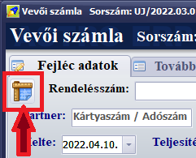 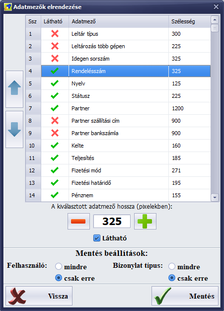
A beállításokat a fejléc blokk jobb felsõ sarkában található gombbal tudjuk
elérni:
Ezután megjelenik a beállítás panel:
Itt a módosítani kívánt mezõt jelöljük ki. A kijelölt mezõ sorrendje a bal
oldali nyilakkal állítható elõre, vagy hátra. Alul a mezõ hozzát állíthatjuk be
(képpontokban mérve), alatta a mezõ láthatóságát kapcsolhatjuk be és ki.
Ezután azt állíthatjuk be, hogy amennyiben mentjük a beállításokat, azok csak
az aktuálisan bejelentkezett felhasználóra mentõdjenek-e, vagy mindenkinek (ez
a beállítást csak rendszergazdai jogosultságú felhasználók választhatják),
emellett beállítható, hogy mindegyik bizonylatra mentjük a beállításokat, vagy
csak az aktuális bizonylat típusra.
Végül a Mentés gomb megnyomásával végrehajtódik a beállítások mentése.
6.808. Verzió
Az adatbázis v93 verzióra frissül.
Új grafikus témák. A beállítások, adatkezelés fõmenüpont alatt található grafikus téma
választó 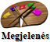
Az alapértelmezett grafikus téma az egyik új stílus lett (Amethyst Kamri
Custom). A korábbi alapértelmezett téma elérhetõ, kiválasztható (Light
Individual).

A beállítások, adatkezelés fõmenüpont alá került egy
új beállítás modul, amelyben a munkaállomás
telephely, raktár, pénztár beállításait lehet kiválasztani, illetve hogy kilépéskor azon a számítógépen végrehajtódjon-e
egy autoamtikus adatbázis mentés. Ezek a beállítási lehetõségek korábban a fõ
beállítások modulban voltak elérhetõk és most biztonsági okból kerültek külön
modulba.

Már elérhetõ a teljesen elektronikus
számla kiállítás lehetõsége. Jelenleg
még teszt fázisban van, kiszûrendõ a NAV rendszerével kapcsolatos
hibalehetõségeket.
Ez a funkció a NAV által hitelesített elektronikus
számlák kiállítására ad lehetõséget.
Korábban elektronikus számlát csak úgy lehetett kiállítani, hogy szerzõdnünk,
regisztrálnunk kellett egy fizetõs hitelesítõ szolgátlatónál, ez körülményes és
sok számla esetén drága volt.
A NAV a számla jelentéssel ingyenesen hitelesíti a jelentett számláinkat,
ezáltal azok elektronikus számlának számítanak, amennyiben a szoftver a
jelentendõ számlát elektronikusként jelöli meg.
Az ügyfélnek emailben elküldött elektronikus számla mellé ugyanúgy csatolásra
kerül az olvasható, hagyományos PDF számla dokumentum, mint a távnyomtatás
jellegû email küldés esetén.
A funkciót a beállítások modulban, a bizonylatok beállításai fülön lehet
bekapcsolni (E-számla) és ekkor a még nem lezárt számla szerkesztésekor
bejelölhetõ az eszámla kapcsoló a jobb felsõ sarokban.
Módosítás a dokumentumkezelésen és a
dokumentumok, listák nyomtatási nézetén:
·
Ezentúl
minden dokumentum és lista elõször PDF formátumban készül el és a nyomtatási
elõnézet ezt a PDF fájlt jeleníti meg, ez a PDF lesz nyomtatható, elmenthetõ,
e-mailben elküdhetõ.
Erre a fejlett
dokumentumkezelés kritériumának teljesítése miatt van szükség.
·
A
dokumentumokról eltûnt a példányszámozás. Hatékonyabb és egyszerûbb, ha minden dokumentumból csak egy példány van
létrehozva és tárolva PDF-ben, amely tetszõleges számban kinyomtatható.
Korábban csak a példányszámozás megjelenítése miatt többször létre kellett
hozni ugyanazt a dokumentumot feleslegesen.
A listáknál, kimutatásoknál a példányszámozás nem volt használatban, a számlák
és más bizonylatok esetén már 10 éve nem kötelezõ a példányszám és az
eredeti/másolat feltüntetése (már eddig is csak választható opció volt, a
számla kötelezõ adatai: kelte, sorszám, kiállító és vevõ adatai, adószámai,
termék/szolgáltatás neve, mennyisége, nettó egységára, áfa és annak mértéke,
jogszabályi hivatkozások, a szoftver neve/fejlesztõje).
Ha egy vevõ, partnercég mégis kéri megszokásból, akkor a dokumentum
megjegyzésben feltüntethetõ az Eredeti példány. szöveg.
·
A
nyomtatási elõnézet új kezelõfelületet kapott. Nem bonyolultabb a réginél, de újabb
lehetõségeket biztosít. Az elõnézeti felület kezelése a továbbiakban kerül
kifejtésre.
Az új nyomtatási
elõnézet kezelése:
A gombok balról
jobbra haladva:
·
A
dokumentum mentése másként: A
látható PDF dokumentumot elmenthetjük a háttértárolóra, vagy külsõ meghajtóra
az általunk megadott helyre és névvel.
·
A
dokumentum megjelenített mérete: A gombot nyomogatva váltogathatunk a méretarányok között (1. az ablak
szélességéhez igazítás, 2. az ablak magasságához igazítás, 3. százalékos méret
százalékbeállítással, 4. az ablak ideális kitöltése).
A százalékos méret módban tetszõlegesen nagyíthatjuk a dokumentum lapjait.
·
Keresés
a dokumentumban: A gomb
megnyomására megjelenik a gomb alatt a keresõ sáv, a gomb újabb megnyomására
eltûnik. 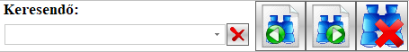
o
A keresendõ
részbe írjuk be a dokumentumban keresendõ szöveget, aminek minden találata ki
lesz emelve sárga színnel.
o
A
szövegmezõ utáni X jellel törölhetõ a keresendõ szöveg.
o
A
következõ nagy gomb ahhoz az elõzõ oldalhoz ugrik, ahol találatok vannak a
keresendõ szövegre.
o
Az ezután
következõ gomb ahhoz a következõ oldalhoz ugrik, amelyen találatok vannak a
keresendõ szövegre.
o
Az utolsó
gomb bezárja a keresõ sávot.
·
A
középsõ rész az oldalszámokat mutatja. Itt a balra nyíl (balra mutató kék háromszög) az elõzõ oldalra
lapoz, a jobbra nyíl (a jobbra mutató kék háromszög) a következõ oldalra
lapoz. Jobb egérgombbal használva ezeket a gombokat a dokumentum elejére, vagy végére ugorhatunk. A lapozás lehetséges a
[Page Up] és [Page Down] gombokkal is a billentyûzeten.
A középen látható oldalszámhoz ha kézzel írunk
be egy számot és megnyomjuk az [Enter] gombot, akkor ahhoz az oldalhoz ugrik.
·
Két
kényelmi funkció kapcsolója:
1.
Automatikus
lapozás: Ha görgetünk az egérrel, akkor automatikusan lapoz a következõre, vagy
az elõzõre (ha kikapcsoljuk, akkor manuálisan kell lapozni fent, középen, vagy
a [Page Up]/[Page Down] gombokkal).
2.
Finom
görgetés: A dokumentum lapjainak egérgörgõvel történõ lapozásakor fionomabb
görgetési átmenetet kapunk.
·
Nyomtatás
gomb: Ha megnyomjuk, akkor
megjelenik a gomb alatt a nyomtatás panel: 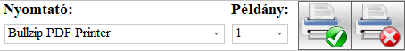
o
Bal oldalt
a nyomtatót választhatjuk ki.
o
Ezután a
kinyomtatandó példányszámot állíthatjuk be.
o
A
következõ gombbal indítható el a nyomtatás a kiválasztott nyomtatóra (ezután a
nyomtatás panel automatikusan eltûnik).
o
Az ezután
található gombbal bezárható a nyomtatás panel (mégsem nyomtat).
·
A nagy
piros X gomb a kilépés a
nyomtatási elõnézetbõl, bezárja az egész ablakot.
További
tudnivalók az elõnézettel kapcsolatban:
·
Az
elõnézetben a dokumentumot görgethetjük egérgörgõvel, vagy a kurzor gombokkal a
billentyûzeten, ahogy a korábbi verziókban is.
Ha az automatikus lapozás be van kapcsolva (alapértelmezésben be van
kapcsolva), akkor a lap aljához érve a következõ oldal töltõdik be, a lap
tetejéhez érve az elõzõ. A lapok megjelenítése nem folyamatos, hanem minden lap
külön töltõdik be, ezért memóriatakarékos, több ezer, vagy százezer lap
kezelése sem probléma (a régi bitképes grafikus elõnézet sok memóriát igényelt
és különösen nagy lapszámnál ki tudott akadni).
·
Elõnézetben
bármilyen szövegrészt kijelölhetünk az egérrel. A kijelölt szöveget a Ctrl+C billentyûzet gomb
kombinációval a vágólapra másolhatjuk, utána Ctrl+V gombokkal beilleszthetjük
máshová.
·
Ha egy
bizonylatot (például számlát) annak lezárása elõtt tekintünk meg, akkor az még
nem lesz nyomtatható és látható lesz rajta a minta felirat (ahogy a régi
elõnézetben).
·
Ha egy
kezárt bizonylatot (például számlát) akarunk újranyomtatni, akkor annak a
korábban elkészült PDF fájlja fog megjelenni nyomtatási nézetben, amennyiben be
van állítva az adott bizonylatra a mentés az adatbázisba beállítás.
·
Az
elkészült PDF dokumentum fájlok alap esetben az adott számítógépen, a szoftver könyvtárában található
PDFS nevû könyvtárba kerülnek.
Az automatikusan csatolt dokumentumok (például új elkészült számla
esetén) az adatbázisba is mentve vannak, ezért ha az interneten keresztül
más telephelyen nyitjuk meg egy modul csatolt dokumentumait, ott is elérhetõk,
megnyithatók, nyomtathatók lesznek.
A bizonylatok esetén választható, hogy automatikusan bekerüljenek-e az
adatbázisba az elkészült PDF fájlok (a beállítások modulban a bizonylat
beállítások fülön lehet ezt beállítani bizonylat típusonként).
·
A
választható nyomtatók listájából kikerült a PDF >>> mentés pdf
fájlba lehetõség, mert most már minden dokumentum létrejön PDF-ben. Ha máshová
szeretnénk menteni ezt a PDF fájlt, akkor a Dokumentum mentése másként (balra
az elsõ) gombot kell használni. Ugyenezen okból már felesleges külön PDF
nyomtató program használata (mint például a BullZip PDF printer, vagy egyéb).
·
Egyes
modulokban van lehetõség fájlok csatolására a dokumentumok fül alatt
(bizonylatok, partnerek, munkatársak, iktatás, stb.),
ezentúl itt is ugyanaz a PDF megjelenítõ jeleníti meg a PDF fájlokat, mint az
elõnézetben, hasonló kezelõfelülettel, nyomtatási lehetõséggel.
·
A PDF
fájlok megjelenítéséhez nem szükséges az Adobe Acrobat Reader (ez a
hivatalos PDF olvasó program), hanem a szoftver natívan meg tudja jeleníteni
a PDF fájlokat.
·
Elõfordulhat,
hogy bõvülni fognak a nyomtatási elõnézeten található funkciók, az igények
szerint. Ha valamilyen szöveg elcsúszik, vagy levágja a nyomtató (kívül esik a
nyomtató koordináta rendszerén), akkor ha ezt jelzik
ügyfeleink, egy órán belül módosításra, igazításra kerül a problémás dokumentum
sablon.
6.807. Verzió
Javítások:
·
Az
adatbázis módosításakor tájékoztató hibaüzenet jelent meg, ha egy algoritmus
még nem volt létrehozva az adatbázisban. Ez gondot nem okozott, de a hibaüzenet
miatt megállhatott a program.
·
A
nyomtatási elõnézet korlátozva volt 350 lapra (hogy a kevesebb memóriával
rendelkezõ számítógépeken is biztonságosan mûködjön). Most módosítva lett,
megszûnt a lapkorlátozás. Ha megtelik a memória, akkor hibaüzenet jelenhet meg.
Ezt végleg a PDF rendszer bevezetése oldja meg, amely már több ezres lapszámot
lesz képes kezelni.
·
Külön
kérésre, a könyvelési exportnál az LRB könyvelõprogramnak szánt export fájlba
UTÁNVÉTEL fizetési mód esetén 2-es kód kerül (eddig 3-as kód volt).
Hamarosan várható,
folyamatban lévõ fontosabb fejlesztések (ezek egy része még idén, egy része a jövõ év elejétõl lesz készen és
elérhetõ frissítésben):
·
PDF
rendszer: Teljes PDF kezelés
lesz bevezetve a szoftverben. A nyomtatási elõnézet is PDF formátumban fog
létrejönni. A PDF oldalak között lapozni lehet majd. Ez memóriatakarékos, gyors
és egységes dokumentumkezelést tesz majd lehetõvé. A PDF kezeléshez nem lesz szükség
Adobe Acrobat Reader programra, az Astro natívan lesz képes megjeleníteni a PDF
dokumentumokat.
·
Elektronikus
számla: A szoftver jelenleg is
tud elektronikus számlát készíteni de úgy, hogy amikor
jelent egy számlát a NAV rendszerébe, az attól kezdve hivatalos elektronikus
számla, mert a NAV rendszere hitelesíti. Már jelenleg is bármelyik partner
letöltheti a az általunk kiállított számláit a NAV-tól
ilyen elektronikus formátumban. Ha mi töltjük le a bejövõ számláinkat a NAV-tól
(beszerzés - számlák), akkor azok is elektronikus számlák.
A hamarosan elkészülõ fejlesztés arra vonatkozik, hogy a jelentett,
elektronikussá vált hitelesített számlát újra letölti a szoftver és ezt is
csatolja a PDF formátumú számla mellé, ha e-mailben küldjük el (küldés PDF-ben
funkció bekapcsolva) a partnernek.
·
Szerver
oldali számla jelentés: A
számla jelentésekhez készül egy szerveroldali alkalmazás, ezután a számla
jelentés több klienses környezetben megoldható lesz csak a szerverrõl,
központilag is. Választható lesz, hogy továbbra is a kliensek jelentsenek, vagy
csak a szerveroldali alkalmazás.
·
Külön
üzenõ alkalmazás: A szoftver
kap egy külön üzenõ segédprogramot, amely felugró üzeneteket, értesítéseket tud
majd megjeleníteni (beállítható lesz, hogy mit jelenítsen meg). Hasznos funkció
lesz, ha például szeretnénk, hogy egy új termék létrehozásakor errõl minden
munkatárs üzenetet kapjon, vagy ha anélkül szeretnénk értesítéseket kapni a
naptárba bejegyzett idõpontokról, eseményekrõl, vagy bármi másról, hogy az
Astro program futna.
6.805. Verzió
Javítások:
·
A készlet
kalkuláció raktárak közötti termékmozgatások esetén nem mindig frissült. Ez
javításra került.
·
Az
áfatörzsben a normál áfa esetén meg lehetett adni 0 értéket, ami nem
elfogadott. Ez javításra került és normál áfa nem adható meg 0 értékkel. A 0
értékû áfa esetekre az elõre definiált típusokat használjuk.
·
A
kiemelteken kívül több apróbb javítás, rendezés, hatékonyságnövelõ módosítás
lett végrehajtva a programkódban és a grafikai megjelenítésben, mert
fejlesztõkörnyezet váltás történt.
A könyvelõ program
feladás típusok közé bekerült egy új, általános CSV formátum (SZLAZZ).
6.801. Verzió
Javítások:
·
A
döntéstámogatóban a számla listákon belül a Kimenõ számla, szállítólevél,
nyugta bevételek listája és a napi bevételezett termékek listája hibát
jelzett, ezek javítása megtörtént.
·
A szerviz
modulban a munkalapok listájában nem mûködött a kiemelt év és hónap szûrés,
amely javítva lett.
·
A beérkezõ
számlák NAV szerverrõl letöltésénél nem minden speciális áfamentességi eset volt
kezelve (helyettük csak 0% áfa jelent meg). Most már minden hivatalos,
speciális áfa típust kezel.
·
A belsõ
üzenõ nagyon ritkán vizsgálta a beérkezõ üzeneteket, ezért ezek a címzetteknél
nem jelentek meg. Most ismét percenként vizsgálja a rendszer, hogy a
bejelentkezett felhasználó számára érkezett-e belsõ üzenet és ha igen, akkor
megjeleníti (ha a fõképernyõn van a felhasználó, hogy ne zavarja meg a munkát,
például egy bizonylat rögzítését).
Módosítások:
·
A
bizonylatokon kiválasztható a nyomtatvány nyelve (HU - magyar, EN - angol, DE -
német, FR - francia, JA - japán).
Korábban a bejelentkezéskor megadott nyelv és a partner célországa alapján
automatikusan állította be a rendszer a bizonylat nyomtatvány nyelvét.
Ha olyan szöveget talál a rendszer, ami nincs még a beépített szótárban, azt
lefordítja (a fordításhoz internetkapcsolat szükséges, ezután ismerni fogja a
rendszer a megfelelõ szöveget) A szövegek szükség esetén javíthatók a
beállítások fõmenüpont alatt található nyelvi adatbázis szerkesztõ modulban (az
egyéb szöveg fordítások fülön, kikeresve a megfelelõ szöveget, a lenti
szövegszerkesztõben átírva és a szerkesztés alkalmazásával mentve).
·
A
bizonylat nyomtatványokon a tételek között megjelenik egy halvány vízszintes
vonal, segítve az olvashatóságot.
·
Az
áfatörzsben a megnevezés mellett megjelent egy új adat, az áfa kulcs rövid
neve. Ezzel a rövid névvel lesz feltüntetve a bizonylatokon az áfa kulcs. A
bizonylatokon a speciális áfa eseteknél az áfa törvényi hivatkozása után
(gyûjtõ, vagy helyesbítõ bizonylat esetén az áfa összesítésnél elöl) zárójelben
megjelenik az áfa eset hivatalos kódneve.
Erre azért volt szükség, mert egyes áfa nevek túl hosszúak, vagy olyan
speciális áfa esetek, amelyeknél nullánál nagyobb áfa érték adható meg. A
számla jelentéseket nem érinti a módosítás.
·
Az
események kezelése egyszerûsödött:
o
A naptár
modulban az éves eseménynaplóban a felsõ eszköztáron látható új esemény gombbal
lehet hozzáadni új eseményt.
o
Bal
oldalon, a mini naptár alatt is tételesen megjelennek a kiválasztott nap és
esemény típus eseményei, melyeket a lista felett található gombokkal lehet
kezelni: újat hozzáadni, módosítani (az eseményen dupla kattintással is lehet),
vagy törölni.
o
Az esemény
szerkesztõben:
§ A további munkatársak fülön kiválaszthatók azok
a munkatársak, akiket érint az esemény, a riasztások nekik lesznek
megjelenítve.
§ A riasztások fülön beállítható négyféle
riasztás az eseményhez: az esemény kezdete elõtt két riasztás és az esemény
vége elõtt szintén kettõ. Az elvégzett, teljesített, vagy lejárt események
esetén nem jelenik meg riasztás. Az aktív riasztások csak akkor jelennek meg az
érintett munkatársaknak, ha a fõképernyõn vannak (hogy ne zavarja õket a
munkában).
§ A bizonylat fülön kiválasztható az eseményhez
kapcsolódó bizonylat típusa és utána a sorszáma. Így csatolható bizonylat az
eseményhez.
6.705. Verzió
Módosítások:
·
A
beállításokban áttekinthetõbb lett a bizonylat beállítások és az általános
beállítások fül.
·
Az áfa
alapértelmezett típusok szövegei frissültek (áfatörzs), ez fontos a számlák
jelentése miatt.
·
A
bizonylatok kaptak egy extra sorszám ellenõrzést.
·
A naptár
funkción történtek módosítások:
o
Az éves
kalendárium megmaradt, a többi nézet típus megszûnt, mert azokra nincs szükség
(a kalendárium nézetben látszik az egész év minden eseménye, kategorizálva
eseménytípusok szerint).
o
Az éves
kalendárium nézetben lehet hozzáadni új eseményt (új esemény gomb), vagy
szerkeszteni egy kijelöltet (duplán kattintva, de csak az eseményt létrehozó
személy tudja szerkeszteni).
o
Bal
oldalon alul egy sávon is listázódnak a kijelölt nap eseményei, itt is lehet
duplán kattintva megnyitni szerkesztésre a kijelölt eseményt.
o
Bal
oldalon fent új mininaptárra lett kicserélve a régi. Itt a dátumra kattintva
lehet havi és éves nézetbe lépni, a megfelelõ év és hónap kiválasztásával
vissza napi nézetbe. A napra klikkelve a kalendáriumban arra a napra ugrik a
kijelölés.
o
Az esemény
szerkesztõ bõvült többféle riasztási és ismétlõdési funkcióval.
6.701. Verzió
Módosítások:
·
Az automatikusan
létrehozott leszármazott bizonylatok (mint a stornó, raktár bevét, raktár
kiadás) az eredeti bizonylat telephely kódjával és ennek megfelelõen azon a
telephely sorszámon futva jönnek létre akkor is, ha egy másik telephelyrõl
végeztük a bizonylat lezárását (a raktárat nem érinti a változás, ezért stornó
esetén ugyanabba a raktárba kerülhetnek vissza a termékek, ahonnan ki lettek
adva). Ahol nem használnak több telephelyet, ott ez nem jelent változást.
·
A gyártás
bizonylatokon a gyártás elvégzésekor a gyártási dátum automatikusan az aktuális
napra lesz beállítva be.
·
A könyvelõ
program export modulban lehetõség van fizetési mód szerinti szûrésre.
6.605. Verzió
Módosítások:
·
Leltározásnál
a raktárkészlet nullázása gyorsításra került és utána választható a készlet
mennyiség összesítések újrakalkulálása (ez a leltár lezárásakor is elvégzésre
kerül, csak az árutörzs lista esetén érdekes).
·
Az
áfatörzs áfasablonok között néhány áfa típusnak módosításra került a számla
megjegyzése.
6.604. Verzió
Módosítások:
Az adatbázis a v90
verzióra frissül.
Az áfa modul
átalakításra került. Az áfa típusok egy lenyíló listából választhatók ki és a
többi adat ennek megfelelõen állítódik be.
A legelsõ, NORMAL
mód esetén adhatók meg a nullánál nagyobb áfa értékek, ekkor nem szükséges
egyéb adatokat kitölteni.
Az összes többi áfa
mód áfamentességi, vagy fordított áfa, vagy egyéb 0 százalékos adónemet
jelöl, ezeknek az esetében meg kell adni a záradék megjegyzéseket is.
A záradék megjegyzésekbõl háromféle van:
·
Áfa
törvény hivatkozás: A NAV számla jelentés ezzel a szöveggel fogja indokolni az
áfa alkalmazását. Maximális hossza 50 karakter lehet. (Nulla százalékos áfa
esetén kötelezõ a megléte.)
·
Tétel
megjegyzés: A számla tételei alatt feltüntetésre kerülõ indok, törvényi
hivatkozás szövege. (Nulla százalékos áfa esetén kötelezõ a megléte.)
·
Bizonylat
megjegyzés: A számla összesítése után megjelenítendõ indok, törvényi hivatkozás
szövege. (Nem mindig kötelezõ, mert egyes esetekben
elegendõ lehet a tételeknél feltüntetni az indoklást.)
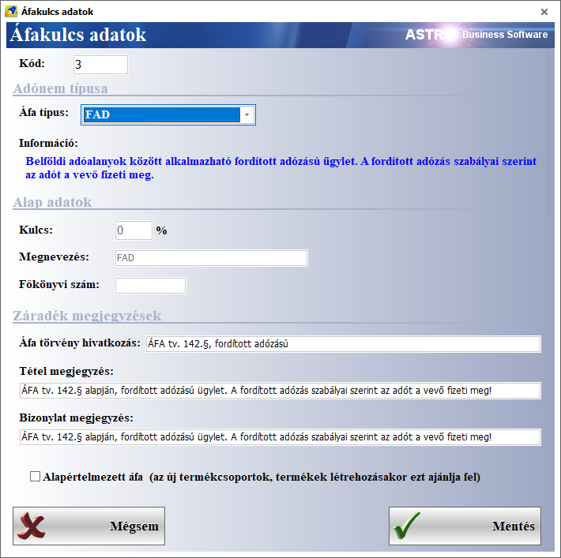
Ha egy korábbi, nem
jelentett számlán felismerhetetlen nulla százalékos adónem van (ha nem
megfelelõ a megnevezése), akkor TAM (tárgyi mentes) áfaként lesz jelentve.
Amennyiben ez nem megfelelõ, akkor a számla stornózható (érvényteleníthetõ) és
ismét létrehozható (másolással) és a helyesen létrehozott és megválasztott
adónemmel már megfelelõen kiállítható és jelenthetõ.
6.603. Verzió
Módosítások:
·
Az
eredménykimutatásokban kiválasztható a számlák listázása utánvét, elõre utalás,
bankkártyás fizetési móddal is.
·
Leltározáskor
a raktárkészlet nullázásánál most már megadható a termékcsoport is.
·
A bizonylat
tétel szerkesztõben áfanév szerint választható ki az áfakulcs, a tévedések
elkerülése végett.

·
A
bizonylat tétel listában is áfanév szerint fog megjelenni az áfakulcs.
·
A
gyorsszerkesztõ módban (amikor közvetlenül a tétel listában szerkeszthetõk a
tételek) szintén az áfanév jelenik meg.
·
A bizonylatokon
a korábbi, csoportos engedmény módosítás bõvült a csoportos áfa módosítással (a
módosítandó adattípus elõtti jelölõnégyzetet ki kell pipálni).

·
Ezentúl
számlán nem lehet beállítani az áfamentes kapcsolót (a többi bizonylat típuson
továbbra is beállítható). Az áfamentességet tételenként kell beállítani a
megfelelõ elnevezésû áfakulcsra (az áfatörzsben ellenõrizni kell, hogy minden
hivatalos áfa kulcs meglegyen és azok paraméterei megfelelõen legyenek
kitöltve).
Fontos ügyelni a
tételek helyes áfakulcs beállítására. Rossz beállítás esetén a számlát annak jelentése után nem tudja
feldolgozni a NAV szervere és ebben az esetben a stornózás és a helyesbítés is
problémás, mert az eredeti számla jelentésének hiányában a további módosítások
is lehetetlenné válnak (ez már csak fejlesztõi segítséggel oldható meg, mert az
adatbázisban kell módosítani). Különösen figyelni kell arra, hogy többféle
áfamentes kulcs létezik (ilyen esetek például: alanyi mentes, tárgyi mentes,
áfa hatályán kívül, termékértékesítés külföldre, stb.)
és mindig a helyzetnek megfelelõnek kell lennie a számla tételeken.
6.602. Verzió
Javítás: A NAV online
számla jelentés 3.0 verziószámú szolgáltatásának teszt és éles verzió XML
struktúrája kis mértékben eltér, ez hibát okozhatott az éles rendszer
használatakor. Ezt a hibalehetõséget ez a verzió kezeli.
6.601. Verzió
Módosítások:
·
Az
adatbázis a 89. verzióra frissül.
·
A
terméktörzs lista átalakításra került, az összesített adatok (összes készlet,
foglalás és megrendelt mennyiségek) elõre kalkulálódnak, ezért jelentõsen
gyorsabban töltõdik be a lista.
·
A NAV
január 4-tõl bevezette az online számla jelentés 3.0 verzióját, amely
lehetõséget biztosít minden számla jelentésére. Ez a verzió már támogatja.
·
Az áfa
törzsadat szerkesztõ modulban az áfakód átírható.
Fontos: Az áfatörzsben azokat az áfakulcsokat
ellenõrizni kell, amelyek áfamentességet jeleznek (0% értékûek), mert ezeknél
az áfáknál kötelezõ feltüntetni a hivatalos áfa megnevezést és a
záradékszövegeket (a tételekre és a teljes számlára vonatkozót is, abban az
esetben is, ha a kettõ szövege egyezik).
Amelyik 0%-os áfánál csak egy (mínusz jel) van megnevezésként, ott
mindenképpen a megfelelõ más áfanevet kell beállítani, mert különben a NAV
online számla jelentés nem fogja befogadni a számlát.
Ajánlott minden esetre
létrehozni, beállítani a megfelelõ áfát és az ezekhez tartozó kapcsolók
beállításáról se feledkezzünk meg.
Példák az áfanevekre
és a hozzájuk tartozó záradékszövegekre (áfanév - záradék):
·
AAM
Alanyi adómentes
·
TAM
Tárgyi adómentes
·
KBA
Közösségen belüli termékértékesítés
·
EAM
Adómentes termékexport harmadik országba
·
NAM
Adómentesség egyéb nemzetközi ügyletekhez
·
ÁTK ÁFA
tárgyi hatályán kívüli
·
EUFAD37
Áfa tv. 37. §-a alá tartozó, fordítottan adózó ügylet
·
EUFAD
Másik tagállamban teljesített, nem az Áfa tv. 37. §-a alá tartozó, fordítottan
adózó ügylet
·
EUE
Másik tagállamban teljesített, nem fordítottan adózó ügylet
·
HO
Harmadik országban teljesített ügylet
·
FAD
Fordított adózás
·
KAD
Különbözet szerinti adózás
·
AFAMENTES
Az Áfa tv. 17. §-a alapján nincs felszámított áfa
Példa a fenti listából
a legelsõ elem beállítására:
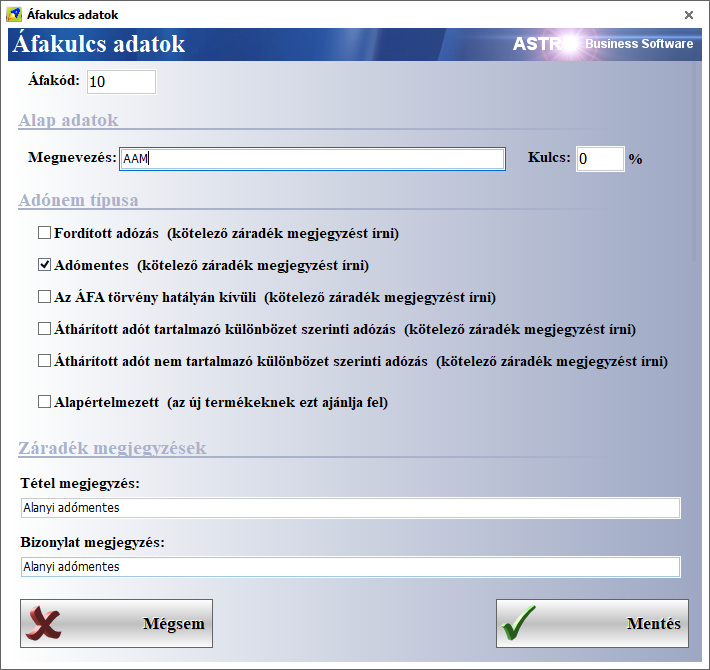
6.546. Verzió
Módosítások:
·
A 10soft
könyvelõprogram exporthoz meg lehet adni a külsõ cégazonosítót (a saját cégét)
és az alapértelmezett partner fõkönyvi számokat.
·
A beérkezõ
számlák letöltése esetén hiányzó határidõ dátum probléma kezelve. Ha ez a dátum
hiányzik, akkor a teljesítéssel esik majd egybe. (Más programok sajnos nem
adnak meg minden adatot a számlák feltöltésekor, ezek a letöltött számla esetén
hiányozhatnak).
A jövõ évtõl kötelezõ
NAV jelentés 3.0 verzió már készül és tesztelés alatt van. Váthatóan január
1-ével kerül bele egy reggeli frissítésbe.
Az Astro weboldala (https://whirlbyte.com/astro.html)
egy kisebb bõvítésen esett át, az oldal végén megtalálható egy kérdések és
válaszok részleg, amely segítséget nyújthat technikai problémák megoldásában.
Ez a rész hamarosan bõvülni fog a NAV-val kapcsolatos kérdésekkel és
válaszokkal.
6.545. Verzió
Módosítások:
·
Új
könyvelõ program export formátum került hozzáadásra (10soft).
·
Az Lrb
könyvelõ exporton történt módosítás, a 0 áfa összegû tételek is bekerülnek az
exportba.
·
A termékek
modulban, a fõ listában a csoportos mûveletek 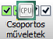
·
A saját
beérkezõ számlák letöltésekor ritka esetben elõfordult, hogy nem töltött le egy
számlát, érvénytelen dátum formátum hibával. Az ilyen hibás számlák hibás dátum
adatáról jelentést küld a program és ennek megfelelõen lesz módosítva a számla
letöltés. Emiatt egy, vagy két napon belül lesz még egy frissítés, amelyben ez
a jelenség megoldásra kerül.
6.544. Verzió
Módosítások:
·
A beérkezõ
beszállítói számlák letöltése funkció átugorja a hibásnak talált számlákat és a
következõt kérdezi le. Eddig a lekérdezési folyamat megállt, ha hibás számlát
talált a lekérdezõ funkció.
·
A
bizonylatok lezárásakor a kelte, a teljesítés és a határidõ dátumok
ellenõrzésre kerülnek. Nem lehet régi dátumokkal bizonylatot lezárni.
·
A
pénzmozgás bizonylatokat (pénztár, bank) lehet tömegesen törölni. Ehhez ki kell
jelölni több törlendõ tételt és a törlés gombbal indítható a folyamat.
Javítások:
·
A termékek
adatlapján a nettó és bruttó súly adatoknál eddig levágásra kerültek a
tizedesvesszõ után álló értékek. Javítva lett.
6.543. Verzió
Módosítások:
·
A számla
jelentésekrõl részletesebb üzenetek jelennek meg. Ha Helytelen
authentikációs adatok! üzenet jelenik meg, akkor be kell lépni az
adóhatóság online felületére és meg kell változtatni a jelszót, vagy ha ez nem
oldja meg a problémát, akkor új technikai felhasználót kell létrehozni, ezek
után az új adatokat a beállításokban meg kell adni és menteni. Ha Nincs
válasz! üzenet jelenik meg, akkor az azt jelenti, hogy az adóhatóság
szervere nem válaszol, túlterhelt, nem elérhetõ. Ezeken kívül még sokféle
üzenet érkezhet a probléma pontos okáról, ezeket minden esetben kiírja a
rendszer.
·
A
beérkezõ, beszállítói számlák letöltésekor a háttérben naplózásra kerül, hogy
mely számlák lettek letöltve és tárolva. Az adóhatóság rendszerétõl függ, hogy
mely számlákat adja vissza a lekérdezésre. Csak a legutóbbi 34 nap számláit
szolgáltatja, de azok közül is csak azokat, amelyeket már feldolgozott
valamilyen módon. Gyakori, hogy egy adott napon kiállított beszállítói
számlákat csak másnap teszik elérhetõvé. Ezért ajánlott minden nap egyszer
futtatni ezt a funkciót.
6.542. Verzió
Módosítások:
·
A program
beállításokban, a karbantartás fülön megadható egy mesterjelszó.
Alapértelmezésként még nincs mesterjelszó, ezért elsõ esetben a régi
mesterjelszó szövegmezõt üresen lehet hagyni.
·
A program
beállításokban, az alap beállítások fülön beállítható,
hogy a pénzmozgások (pénztárak, bankok) bejegyzéseinek utólagos módosítása csak
a mesterjelszó megadásával legyen lehetséges. Ennek a beállításnak a
kikapcsolásához is szükséges a mesterjelszó.
·
Az egyes
bizonylatok lista nézetében (nem tételes nézetben) egy új oszlopban
megtekinthetõ, hogy a bizonylat lezárásakor mozgatott-e készletet.
6.541. Verzió
Módosítások:
A vevõi számla
szerkesztõ eszköztárán megjelent új funkció most már minden más bizonylat típusról
ki tudja gyûjteni a tételeket az aktuálisan szerkesztett bizonylatra.

Kiválasztható a forrás
bizonylat típusa, amelyrõl a szabad tételeket átveszi a funkció.
Ezután kiválasztható a pénznem, amely automatikusan az aktuális bizonylat
pénznemére állítódik be (ajánlott így hagyni).
Végül a kigyûjtés alá esõ forrás bizonylatok kelte dátum intervalluma állítható
be.
Ha a storno tételeket is át szeretnénk venni a forrás bizonylatról, akkor a
legalsó kapcsolót kell kipipálni.
A tételek átvétele gombbal indul a tételek automatikus kigyûjtése
és átvétele.
Ha nem jelennek meg új tételek a tétel listában, akkor a szûrõ feltételekkel
nem voltak átvehetõ tételek.
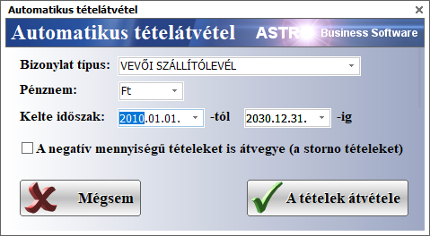
6.54. Verzió
Módosítások:
·
A vevõi
számla szerkesztõ eszköztárán megjelent egy új funkció, a szállítólevelek
tételeinek automatikus átvétele. Ez a funkció a számlán kiválasztott partner
összes kiszámlázatlan szállítólevél tételét összegyûjti az aktuálisan
szerkesztett számlára.

Késõbb ez a funkció módosulhat majd olyan módon, hogy bármely bizonylatra
bármelyik másik bizonylat típus szabad tételeit képes lesz összegyûjteni
automatikusan.
Javítás: Ritkán
jelentésre megjelölésre kerültek olyan számlák is, amelyek vásárlójának nem
volt adószáma, vagyis a vevõ magánszemély volt. A frissítés ezekrõl a
számlákról visszavonja a jelentésre megjelölést.
6.531. Verzió
Módosítások:
·
Az
adatbázis frissítésekor átugorja a frissítés a nem létezõ adattáblákat és nem érkezik
ezekre hibaüzenet. Egyes verziókban vannak olyan adattáblák, amelyek nem
léteznek.
6.53. Verzió
Módosítások:
·
Az adatok
lekérdezése gyorsult: A legtöbb esetben dupla, néhány modulban harmincszoros a
sebesség növekedés nagy adatmennyiség esetén.
·
A
partnerek modulban a partner listában új oszlopok jelentek meg: a webshopos
vásárlások bruttó összesítése, a partner tartozásai és követelései.
·
A
beállításokban, az általános beállítások fülön a beállítás lista alján
kikapcsolható az adott számítógépen a kilépéskori mentés. A mentést legalább az
egyik számítógépen ajánlott bekapcsolva hagyni.
6.52. Verzió
Módosítások:
·
A beérkezõ
számlák lekérdezése után eldöntheti, hogy automatikusan le legyenek-e zárva a
számlák.
·
A számla
jelentések elõtt megtörténik néhány extra ellenõrzés, a hiányos adatokat a
rendszer a formai követelményeknek megfelelõ üres értékekkel tölti fel.
6.51. Verzió
Újdonságok:
·
A
beszerzés fõmodulban, beszállítói számláknál megjelent egy új funkció, amely
letölti a cége számára kiállított 34 napnál nem régebbi beérkezõ számlákat az
adóhatóságtól. Nem kell már többé kézzel rögzíteni a bejövõ számláit. Ennek
ellenére a hagyományos módon továbbra is be kell kérnie a számlák önnek szóló
példányait. Ez a funkció késõbb bõvülhet a felmerülõ igények szerint. 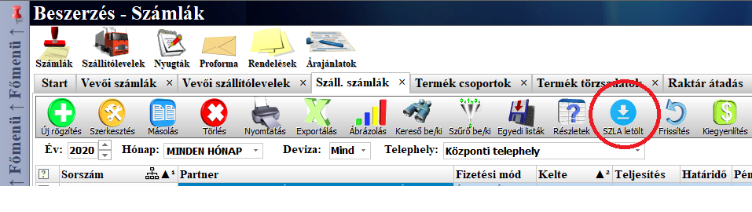
·
A
bizonylatokon a partner kiválasztó elõtti rubrikába beírhatja a partner
adószámát is, ezt ENTER gombbal nyugtázva ki lesz választva a megfelelõ
partner. Ha a partner még új és nincs meg az adatbázisban, akkor annak
adatai automatikusan letöltõdnek az adóhatóságtól és bekerülnek a
partnertörzsbe. A partnernek csak a hivatalos adatai töltõdnek le, ezért
szükséges lehet egyes esetekben módosítani a partner
beállításait (a partner kategóriáját, vagy fizetési módját, kedvezményét, stb). 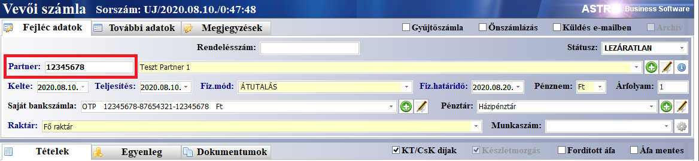
Javítások: Az elõzõ módosításban a szoftverbe került gyors billentyûkombináció
lehetõvé tette a bizonylat tételek törlését akkor is, amikor azok már le voltak
zárva, ezek most már letiltásra kerültek. A bizonylatokon elõfordulhatott, hogy
az adatbázisból nem megfelelõ (üres) alapértelmezett értékek töltõdtek be és
ekkor lefagyott a bizonylat képernyõ, ez most javítva lett.
6.50. Verzió
Módosítások:
·
A
bizonylat tétel szerkesztõben a készletre szûrés alap esetben ki van kapcsolva
(ha bekapcsoljuk, akkor csak a kiválasztott raktárban megtalálható termékek
választhatók ki).
·
A
terméktörzs termék lista nettó/bruttó ár beállítása számítógépenként mentésre
kerül (elõször alapértelmezetten a nettó árak jelennek meg).
Új: A termékcsoport
szerkesztõben megjelent 4 új gomb, amelyek jelentése sorban:
·
Az elsõ gombbal
a termékcsoport alá tartozó minden termék be lesz állítva kisker webshoposként.
·
A második
gombbal a termékcsoport alá tartozó minden termékrõl törli a kisker webshopos
beállítást.
·
A harmadik
gombbal a termékcsoport alá tartozó minden termék be lesz állítva nagyker
webshoposként.
·
A negyedik
gombbal a termékcsoport alá tartozó minden termékrõl törli a nagyker webshopos
beállítást.
6.49. Verzió
Módosítások: A
bizonylat tétel szerkesztõben egy létezõ tétel módosításakor, annak
betöltésének idejére kikapcsolnak a szûrõk, mert bekapcsolt szûrõk mellett a
szûrésbõl kizárt termék nem állítódott be. Ugyanitt, a tétel szerkesztõben
ha manuálisan írjuk át a termék árat, akkor a következõ tétel szerkesztéséig
kikapcsol a termék árának automatikus kikeresése.
Javítás: A számla
jelentések esetén már csak az alapján van megállapítva, hogy egy számla
jelentendõ-e, hogy van-e adószáma a számla vevõjének. Ez a szûrés elegendõ,
mert minden adószámos számlát jelenteni kell.
Folyamatban lévõ
fejlesztések:
·
Az új
ügyfelek adatainak felvitelét fogja könnyíteni, hogy elég lesz az adószámot
beírni (annak is elég lesz az elsõ 8 számjegyét) és az ügyfél fõbb adatai
automatikusan kitöltõdnek a cégnyilvántartás alapján.
·
A bejövõ
számláink az adóhatóságtól le fognak töltõdni és megjelennek a beszállítói
számlák között, ezzel sok idõ megspórolható.
·
Készül egy
számla jelentõ segédprogram, amelyet a szerverre lehet telepíteni és
folyamatosan futhat, ez leveszi a számla jelentés terhét az Astro-tól. Ez a
segédprogram akkor lesz hasznos, ha egy cég külön szervert használ, a szerveren
futva óránként megnézi, hogy van-e a jelentés feltételeinek megfelelõ számla és
az addig még nem jelentetteket jelenti. Ugyanakkor ez a segédprogram a
részünkre kiállított új számlákat is le fogja tölteni.
·
Az
elõbbieknél kicsit késõbb befejezõdik az integrált könyvelõ modul fejlesztése,
amely automatikus könyvelést (kettõs) fog kínálni. Ehhez elég lesz feltölteni a
fõkönyvi számok törzset és kitölteni a termékek törzsadatainál a termékekhez
tartozó fõkönyvi számokat. Az automatikus könyvelési tétel generálás mellett
manuálisan is vihetünk majd fel tételeket. A könyvelési modul használatához
mindenképpen ajánlott lesz könyvelõ felügyelete.
·
Távolabbi
cél egy teljes mértékben paraméterezhetõ bérszámfejtõ modul fejlesztése és a
cash-flow modul megújítása, egyszerûsítése.
6.48. Verzió
Módosítások: A
bizonylat tétel szerkesztõben megjelent egy olyan kapcsoló, amelyet aktiválva
megjelennek a kiválasztható termékek között az inaktivált termékek is.
Raktárközi termékmozgatások esetén a tétel szerkesztõben nem állítódik át
automatikusan a csak készleten lévõ termékekre szûrés, ha azt egyszer
kikapcsoltuk, a legközelebbi program indításig úgy marad.
Javítás: A számla
jelentés miatt nem a rendszeridõ lesz felhasználva a jelentések idejének
megállapítására, hanem a greenwichi középidõ (UTC) lesz lekérdezve.
6.47. Verzió
Módosítások: A
jelentendõ számlák megjelölésének módosítása aszerint, hogy az
érvénytelenített, vagy módosított számlához tartozó, korábban nem
jelentésre kötelezett számla is jelentésre kerüljön. Az árkategória táblázatok
feliratai mindenhol egységesítve lettek.
Elõfordulhat, hogy a
számlák lezárása után nem tudja az adóhatóság szervere befogadni a jelentett
számlát annak túlterheltsége miatt. Ilyen esetben a jelentés gombot kell
használni pár perccel késõbb egészen a jelentés teljesüléséig. Ez a kötegelt
jelentés automatikusan végrehajtódik a programból kilépés alkalmával is. Az
adóhatóság a számlák jelentésére a korábbinál több idõt enged, ezért ha azonnal nem sikerül, akkor másnap megpróbálható a
jelentések ismételt kötegelt végrehajtása.
6.46. Verzió
Javítások:
Az árazó ablak az ár átvételekor nem a megfelelõ áfakulccsal szorozta be az
egységárat.
Az árkategóriák ár oszlopa felett a nettó és bruttó felirat nem a beállításnak
megfelelõen jelent meg.
A NAV kézi jelentés nem mindig futott le.
Új módosítás: A
terméktörzs terméklista árkategória ár oszlopai az árkategóriák neveit viselik.
6.44. Verzió
Az adatbázis a 84.
verzióra frissül.
Új alapfunkció: A fõmenü rögzíthetõ, hogy ne tûnjön el és
mindig látható legyen. Ez a beállítás nem felhasználóhoz, hanem számítógéphez
kötõdik (a különbözõ monitor felbontások miatt) és kilépéskor mentésre kerül
minden számítógépen. A rögzítés a fõmenü függõleges sávjának tetején látható
gombra kattintva kapcsolható be és ki (ha nincs rögzítve akkor zöld, ha
rögzítve van akkor piros): 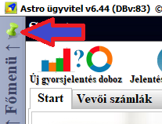
Új funkció: Ha a termékeket csoportosan kijelöljük az
árutörzs listában és megnyomjuk a törlés gombot, akkor a kijelölt termékeket
nem törli, hanem inaktívvá (megszûnt) teszi a rendszer. Ezzel csoportosan
tehetjük inaktívvá a már nem használt termékeket. A kijelölés nélküli törlés
továbbra is végleges törlést jelent!
Új funkció: Az árkategóriákhoz ezután tetszõleges számú
mennyiségi kedvezményeket lehet hozzárendelni, amelyeket konkrét egységárként
(nettó darabár) vagy százalékos értékként is be lehet írni (ekkor egy
százalékjelet kell az érték után írni és ennek alapja a kategória ára, a teljes
ár 100%).
A legfelsõ sorba kell a mennyiségeket beírni, alájuk írható egy megjegyzés és
ezek alatt az egyes kategóriákhoz és mennyiségekhez tartozó értékeket lehet
beírni.
Alap esetben a táblázat felkínál egy üres oszlopot, ide lehet az elsõ
mennyiségi kedvezményt írni, ezután a többi oszlopot a táblázat feletti új
oszlop gombbal kell hozzáadni. Lehet oszlopot beszúrni is, a kijelölt oszlop
elé (ha elõtte oda kattintunk az oszlopba) és törölni is lehet az oszlopokat.
·
Példa 1: ha az adott kategória egységára 1000 és a
mennyiségi kedvezményeknél 2 darabra 900 van megadva, akkor a 2 darab, vagy
ennél több termék 2x900=1800 forintért lesz értékesítve.
·
Példa 2: ha egy 1000 forintos termék 2 darabtól 90%-os
áron értékesítendõ, akkor a 2 darab esetén már 900 lesz az egységár, a 2 darab
termék ára 2x900=1800 forint lesz összesen.
Ez a funkció a
törzsadatoknál lent, az áraknál, a mennyiségi egységárak fülön érhetõ el:
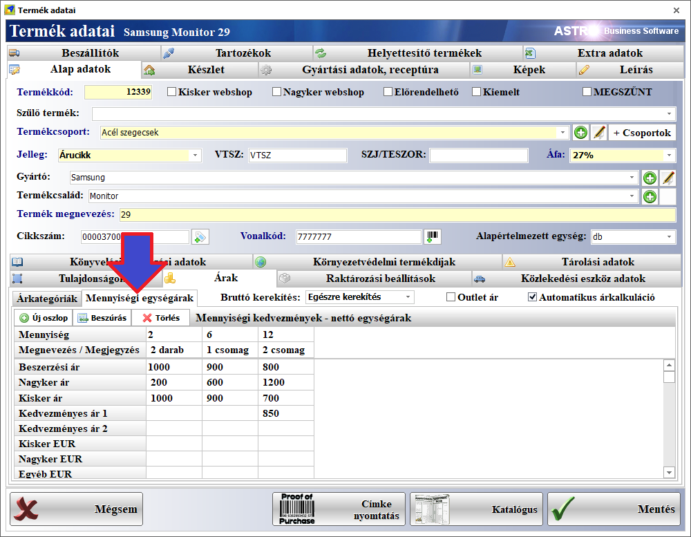
Ehhez kapcsolódóan a
terméktörzs listában, a részletek nézetben is lehet közvetlenül árazni, itt a
mennyiségi kedvezmények az árkategóriák mellett láthatók (a szerkesztését
engedélyezni kell a jobb oldalt látható Módosítható feliratú kapcsolóval):
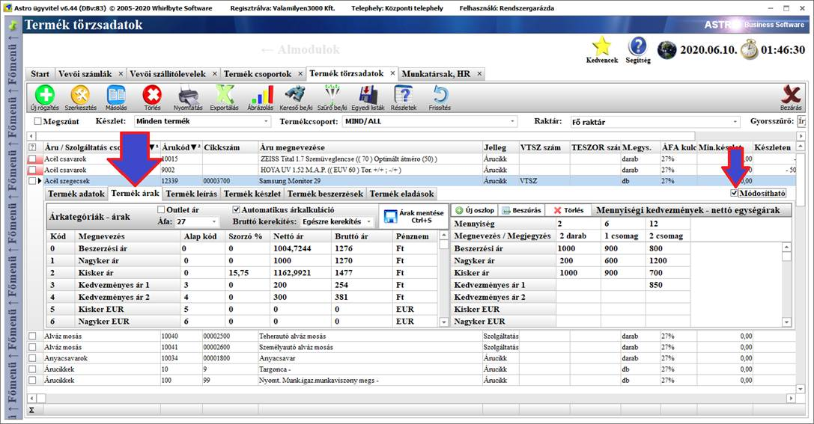
A termék átárazó
ablakban is megjelent a fentiekhez hasonlóan a mennyiségi kedvezmények
létrehozásának lehetõsége.
Értékesítéskor az árak
felajánlásánál már figyelembe veszi a rendszer a mennyiségi kedvezményeket is
és mindig a beírt mennyiségnek megfelelõ árat ajánlja fel, ha az adott
termékhez rendelkezésre állnak mennyiségi kedvezményes árak.
Ezt leszámítva az
árazás ugyanúgy mûködik ahogy eddig, teljesen kompatibilis a korábbi verziókkal
és a különbözõ már meglévõ webshop szinkronokkal.
6.43. Verzió
Javítás: A vevõi és
szállítói bizonylatokon a További adatok
fülön a teherautó érkezés és távozás dátuma 24 órás helyett 12 órás formátumban
mûködött, ez módosítva lett 24 órásra.
Javítás: A full HD-nál
nagyobb felbontású monitorok esetén grafikai hibák jelentkeztek. Emiatt
módosítva lettek egyes grafikai elemek.
Módosítás: A
termékcsoportoknál a jelölõ szín most már minden termékcsoportra megadható. A
színek ezután alphacolor kódként kerülnek mentésre az adatbázisba (hogy a
szoftverhez kapcsolódó mobilalkalmazásokban is jól jelenjenek meg a színek),
ezért a korábbi színek nem biztos, hogy mûködnek, ezek esetében újra be kell
állítani a megfelelõ színeket.
Fontos: Mivel 2020 július 1.-tõl minden olyan számlát
jelenteni kell azok áfa tartalmától függetlenül, amelyek belföldi cégeknek,
vállalkozóknak lettek kiállítva, ezért június utolsó hetében lesz egy
frissítés, amelyben ez beállításra kerül. Kérem, hogy mindenki figyelje, hogy
jelzi-e a szoftver a frissítést és frissítsen majd június utolsó hetében.
2021 január 1.-tõl már kötelezõ lesz a magánszemélyeknek kiállított számlákat
is jelenteni (remélhetõleg a NAV megoldja majd, hogy adószám nélkül is lehessen
jelenteni a számlán feltüntetett partnert, mivel ez most kötelezõ), ez szintén
hasonlóan, frissítésen keresztül lesz beállítva.
6.42. Verzió
Módosítás: A vevõi és
szállítói bizonylatokon új adattípusok rögzíthetõk, a További adatok fülön: sofõr, rendszámok, alvázszám, érkezés,
távozás, korábbi rakomány.
Módosítás: A
termékcsoportoknál új beállítás adható meg: a termékcsoport megjelenjen-e a
mobilalkalmazásban.
Javítás: A vevõi és a
szállítói bizonylatok esetén problémát okozhatott, ha a tétel táblázatban
közvetlenül a mennyiség módosítása közben léptünk ki a bizonylatból, mert ekkor
egy másik megnyitott bizonylaton is megjelenhetett a korábbi bizonylat tétel mennyiségi
adata. Ez csak grafikai megjelenítési hiba volt és javításra került.
6.41. Verzió
Módosítás: A nyomtatási
elõnézeti kép alapértelmezetten nagyobb méretben jelenik meg, hogy láthatóbbak
legyenek az apróbb betûs részek.
Javítás: A
bankszámlakivonatok feldolgozása korábban leállt az elsõ hibás, hiányos
forrásadat felbukkanásakor. Most a hibás, hiányos forrásadatokat átugorja és
nem áll le a feldolgozás, amíg a banki kivonat fájl végére nem ér.
6.40. Verzió
Módosítás: A bizonylat
nyomtatásnál, ha a partner cég nevében a fájlnevekkel nem kompatibilis
karakterek voltak, akkor nem mentette PDF formátumban és ezért e-mailben sem
küldte el a dokumentumokat, most már a rendszer kiveszi ezeket a nem
kompatibilis karaktereket a fájlnévbõl.
Szintén a nyomtatásnál, ha a felhasználó megszakította a nyomtatást, vagy egyéb
ok miatt szakadt meg a nyomtatási folyamat, akkor ezt eddig külön nem jelezte a
szoftver, most már jelzi.
6.39. Verzió
Módosítás: A
raktárközi megrendelés, a raktárközi termékátadás és a selejtezés bizonylatok
egyszerre csak egy kliensen lehetnek megnyitva.
Így elkerülhetõ a véletlen módosítás.
Az adatbázis a 82. verzióra frissül.
6.37. Verzió
Ezzel a verzióval
bevezetésre kerül a NAV online számla bejelentõ interfész 2.0 verziója.
Márciustól már csak ez a verzió támogatott.
A NAV kiadott egy számlaellenõrzõ segédprogramot, amellyel a jelentett
számlákat lehet ellenõrizni. Ez a segédprogram az alábbi linken tölthetõ le:
https://onlineszamla.nav.gov.hu/api/files/container/download/OnlineInvoiceTool_installer_2019_12_01.exe
Ennek a
segédprogramnak a dokumentációja, kézikönyve innen tölthetõ le:
https://onlineszamla.nav.gov.hu/api/files/container/download/Online%20Sz%C3%A1mla_fejleszt%C3%A9si_seg%C3%A9deszk%C3%B6z_GUI_v2.0.pdf
További változás még,
hogy az Astro üzleti szoftver bizonyos jelentés hibák esetén kivonatosan,
magyar nyelven mutatni fogja a hibajegyzéket (ez még nem jelenik meg mindenhol,
de egy késõbbi verzióban már az erõltetett jelentésnél is látható lesz).
6.35. Verzió
Fontos kérés:
Kérem, hogy a hibabejelentéseket,
kéréseket, kérdéseket elsõsorban írásban, a business.software.design@gmail.com
e-mail címre küldjék kedves ügyfeleink. A szoftver által küldött hibajelentések
is erre a címre érkeznek. Erre minõségbiztosítási okból van szükség.
A hibák bejelentését meg lehet tenni
egy új funkcióval is, amely a fõképernyõn, a jobb felsõ sarokban található
segítség ikonra kattintva, a listából a hibabejelentõt kiválasztva érhetõ el.
A szoftverben történt egyéb
változásokat ezt a verziót hamar követõ 6.36 verzió frissítésénél részletezi
majd a verziótörténet.
6.34. Verzió változásai:
·
Az adatbázis a v81 verzióra frissül.
·
A tárgyi
eszköz modul teljesen át lett dolgozva. A modul kezelésérõl és mûködésérõl
a kézikönyvben lehet bõvebben olvasni.
6.33. Verzió változásai:
·
Az adatbázis a v80 verzióra frissül.
·
A termékcsoportok szerkesztõ ablakban megjelent
két új gomb, amelyek lehetõvé teszik a termékek egyes adatainak csoportos
módosítását:
o A jelleg kiválasztó utáni gombbal a jelleg beállítást másolhatjuk rá az összes olyan termékre, amelyek az adott csoport alá tartoznak.
o
Az áfa
kiválasztó utáni gombbal az áfa beállítást másolhatjuk rá az összes olyan
termékre, amelyek az adott csoport alá tartoznak.
Késõbb ezek a funkciók hasznosak lehetnek például áfa változáskor, mert
akkor a termékek áfa kulcsát tömegesen módosíthatjuk több terméken egyszerre.
Megjegyzés: a termékek csoportos adatmódosítása
csak az adott csoportba tartozó termékeket módosítja, a leszármazott csoportok
termékeit nem, ezért ezeket is külön kell. Ennek oka, hogy a leszármazott
csoportokban eltérhet például az áfa kulcsa.
(A kép után még folytatódik a
felsorolás!)
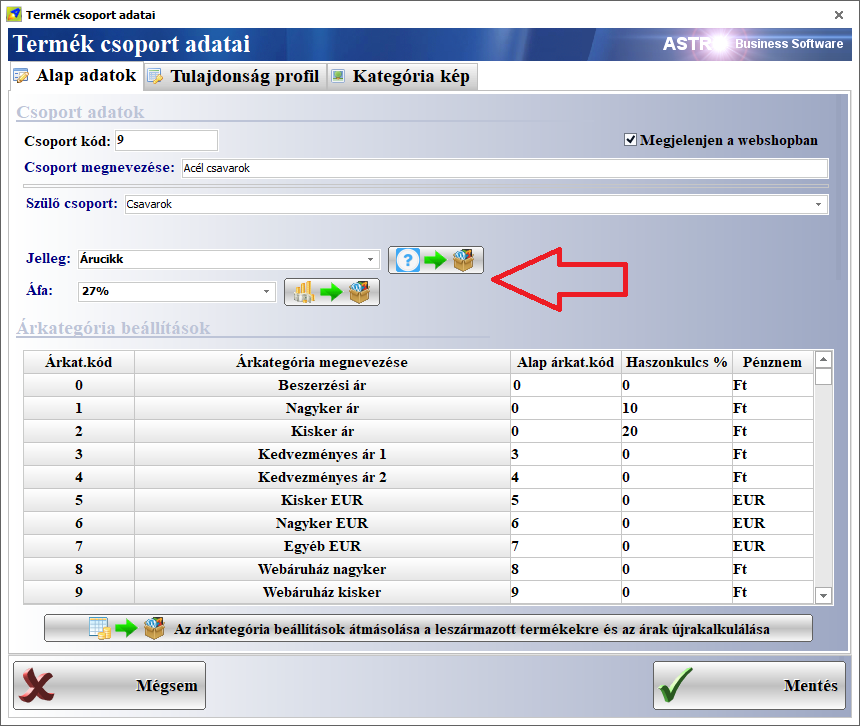
·
A
partnercsoport szerkesztõ új adatokkal bõvült és itt is megjelent a partnerek
adatainak csoportos módosításának lehetõsége:
o
A partnertípusnál kiválasztható a csoport
számára a partner típusa és ez a beállítás a kiválasztó mezõ utáni gombbal
rámásolható az összes olyan partnerre, amely az adott csoportba tartozik.
o
Az árkategóriánál kiválasztható a csoport számára a partner
alapértelmezett árkategóriája és ez a beállítás a kiválasztó mezõ utáni gombbal
rámásolható az összes, a csoportba tartozó partnerre.
o
A árkedvezménynél megadható százalékosan az árengedmény és ez szintén
az utána látható gombbal másolható rá a csoportba tartozó partnerekre.
o
Az alapértelmezett fizetési mód is
megadható a csoport számára és az utána található gombbal alkalmazható ez a
beállítás a csoport partnereire.
o
Az alapértelmezett fizetési határidõt is
meg lehet adni (ami átutalásos fizetés esetén számít) és a mögötte látható
gombbal másolható a csoportba tartozó partnerekre.
o
A hitelkeretet is meg lehet adni,
amelyhez most már tartozik pénznem is (ez mindig átváltásra kerül a megfelelõ
devizanembe), a többhez hasonlóan másolható rá a csoport partnereire.
o
Végül, a visszáru lehetõséget lehet be, illetve
kikapcsolni, ezután ebben az esetben is van lehetõségünk egy gombbal a csoport
alá tartozó partnerekre másolni ezt a beállítást.
Ajánlott minden partner számára megadni egy partnercsoportot és így késõbb
sok idõ (és pénz) megspórolható a tömeges módosításokkal.
Ha egy új partner esetén választjuk ki a partnercsoportot, akkor a partner
adatai (amelyeket a partnercsoportban is megadtunk) öröklik a csoport
beállításait, ezzel is idõt spórolhatunk.
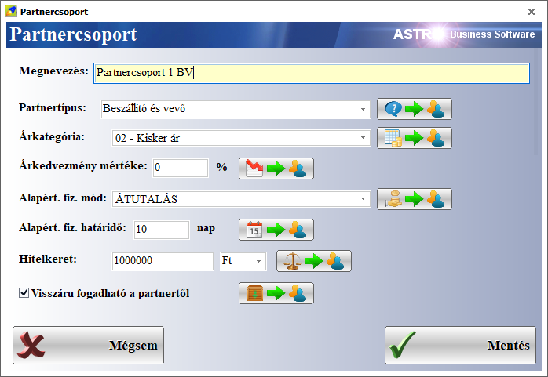
6.32. Verzió változásai:
·
Nem mindig a partnernek beállított árkategória
árát ajánlotta fel a tétel szerkesztõ. Javítva.
·
Az árkategóriák táblázata az árak módosításakor
lassan mûködött az árkategóriák közötti devizanem átváltások miatt. Javítva.
6.31. Verzió változásai:
·
A megszakadt, de ennek ellenére sikeres nav
online jelentés néha megszakította a számla lezárási folyamatát, most módosítva
lett, hogy ilyen esetben ne jelenjen meg külön üzenet.
·
A bizonylat
szerkesztõ ablak átrendezésre került, mert így sokkal áttekinthetõbb és az
adatok is jobban elférnek:
o
A kiválasztott termék részletes adatai
információs sáv (egységár, készleten, lefoglalva, eladható, visszavehetõ)
legfelülre került.
o
A csak a készleten lévõ termékek kapcsolója a
termék megnevezés szövegmezõ felé került.
o
A sarzs
számok és a gyári számok és méretek alulra a fülekre kerültek, egy
lapra, azon belül egymás mellé.
o
Az árkategória-ár
kiválasztó egy lenyíló lista lett és az ártáblázat felé került. Az átárazó
ablakot megnyitó gomb mellé került, jobb oldalra.
o
Az engedmény sor táblázatának oszlopai
ártáblázat oszlopaihoz illeszkednek.
o
Az ablak alaphelyzetbe állító gomb legalulra került,
a mégsem gomb mellé (a kék kör-nyíl).
o
A munkaszám megadási, kiválasztási lehetõség
szintén alulra került, jobb oldalra.
o
A gyártási
idõ, garanciaidõ, szavatossági idõ, termék állapot adatok a lenti fülsávra
kerültek (Garancia, szavatosság, állapot fül).
o
A szerviz
adatok is a fülek egyikére kerültek (szerviz modul esetén használatos
adatok).
o
Új fülön látható a termékhez tartozó környezetvédelmi termékdíjak listája
(termékdíjak fül, itt csak megtekinthetõk ezek az adatok, a terméknél lehet
szerkeszteni).
o
Új fülek a
termékhez kötõdõ tartozék termékek és helyettesítõ termékek listája számára.
A
helyettesítõ termékek esetén dupla kattintásra, vagy jobb egérgombra megjelenik
egy helyi menü, amelyben kiválasztható a termék a tétel termékeként, vagy
megnyitható szerkesztésre.
A tartozék
termékeknél is megjelenik egy ilyen helyi menü, amelyben az egyik menüponttal
hozzáadható a tétel listához a kiválasztott tartozék termék, vagy megnyitható
szerkesztésre.
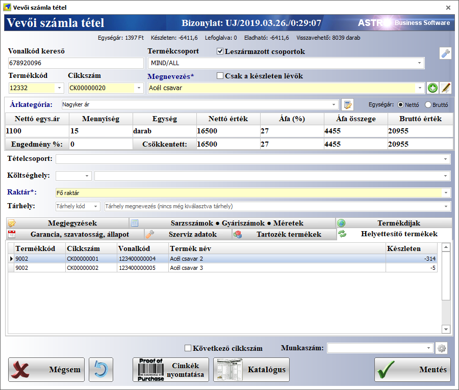
6.30. Verzió változásai:
·
A nav online számla jelentésben módosítva lett a
nulla százalékkal rendelkezõ áfa értékek szövegének megfelelõ jelentése.
·
Bizonylat származtatásakor, vagy másolásakor a
kelte nem állítódott be az aktuálisra. Javítva.
·
A bizonylatokon kötelezõ raktárat megadni. Eddig
azért nem volt kötelezõ, mert ha nem volt raktár a bizonylaton raktár megadva,
akkor automatikusan az alapértelmezett raktár állítódott be. De ha töröltek egy
raktárat és ha a már nem létezõ raktárral zártak le egy bizonylatot, akkor a
termékek készletmozgása nem történt meg.
·
A terméktörzsben, a termékek listájában az egyik
oszlop elnevezése ismétlõdött és ez hibát okozhatott. Ha frissítés után is
jelentkezik a hiba, akkor be kell zárni a terméktörzs modult és újra meg kell
nyitni.
6.29. Verzió változásai:
·
Az adatbázis a v79 verzióra frissül.
·
A NAV online számla jelentés interfész 1.1
verzió támogatása.
·
Nem lezárt bizonylatok ismételt megnyitásakor a kelte
ezután már nem állítódik be az aktuális dátumra, kivéve a vevõi számlát, mert
ebben az esetben kötelezõ, elkerülendõ a vissza dátumozást (amit saját
felelõsségre ezután is meg lehet tenni).
·
A megszûnt termékek nem kiválaszthatók a
bizonylaton, mert ezután már nem jelennek meg a termék kiválasztó listában.
·
Az árutörzs listájában a megszûntként beállított
termékek most már csak akkor láthatók, ha a kiemelt szûrõknél a Megszûnt
opciót kipipáljuk.
·
Új, egyedi modul: Gépnapló
o
Ebben a modulban megmunkáló gépek termelési
adatait lehet rögzíteni és grafikonokon megjeleníteni.
o
A modul mûködéséhez elõbb létre kell hozni
legalább egy megmunkáló gépet. Ezt a munkagép kiválasztó mezõ utáni [+] gomb
megnyomásával lehet megtenni:
Ha a
munkagépet már rögzítettük a terméktörzsben (hogy hozzá lehessen kapcsolni a
tárgyi eszköz modulhoz), akkor itt is kiválasztható, de nem kötelezõ.
Meg kell
adni egy nevet a munkagép számára. Ez lesz látható a kiválasztó mezõben.
Kötelezõ adat.
Be lehet
írni a munkagép sorozatszámát. Nem kötelezõ.
A gép
számára meg kell adni a termelés alap egységét (Például: m2, darab, egyéb).
Kötelezõ adat.
Ha a
munkagép minden adata megfelelõ, akkor menthetõ az adatbázisba. Ezután már
megjelenik a gépnapló munkagép kiválasztó mezõjében.
o
Több megmunkáló gép esetén mindig az utoljára
kiválasztott munkagép adatai jelennek meg a modul újra megnyitásakor az adott
számítógépen.
o
A bal felsõ sarokban alapértelmezésben mindig az
aktuális nap jelenik meg, ez átállítható, ha egy korábbi nap, hónap, vagy év
adatait szeretnénk látni. Késõbbi nap nem állítható be.
o
A megmunkáló gép üzemidejét egy külön adatgyûjtõ
alkalmazás kérdezi le a munkagéptõl közvetlenül, majd hozzáadja az adatbázisban
aznapra már tárolt üzemidõhöz.
o
Az alsó táblázatba írhatók az adott nap aktuális
termelési adatai:
A kék mezõ
szerkeszthetõ, ide írható a termelt mennyiség, amely a megmunkáló gép számára
beállított alapértelmezett termelési egységben értendõ (például: m2, darab,
egyéb).
A kék mezõ feletti, napi üzemidõ mezõbe
automatikusan gyûjti az adatokat egy kapcsolattartó alkalmazás, de kézzel is
módosíthatóvá válik, ha duplán klikkelünk rajta az egérrel. Ez a szerkesztési
mód addig él, amíg el nem lépünk a mezõrõl. Kézi módosítással bevihetõk korábbi
napok, vagy korábbi évek termelési adatai is a rendszerbe.
o
A legalsó,
sárga mezõkbe írhatók az általános napi, heti, havi, éves termelési célok.
o
A többi
mezõ csak olvasható, kalkulált adatot tartalmaz.
6.28. Verzió változásai:
·
A NAV online számla jelentéshez kötelezõen az új
SSL TLS 1.2 titkosítási beállítások léptek érvénybe.
6.27. Verzió változásai:
·
A bizonylat tétel szerkesztõben, a termék
átárazás funkció használata után a mennyiség visszaállt 1-re. Javítva, a
mennyiség változatlan marad.
·
A bizonylatok nyomtatása elõtt megjelenõ kérdezõ
üzenet ablakban megjelenik a bizonylat típusa és sorszáma is.
·
A NAV online számla jelentés nem hajtódott végre
sikeresen, ha hiányzott a termék mennyisége. Javítva, ha hiányzik a mennyiség,
akkor mennyiség nélkül lesz jelentve az adott tétel.
·
Szintén a NAV online számla jelentésben a
tételek sorszámozása javítva lett, mert néha stornó és helyesbítõ számla
esetében nem hajtódott végre sikeresen a jelentés.
·
A terméktörzsben ezentúl addig nem lehet menteni
a terméket, ha nincs megadva számára alapértelmezett mennyiségi egység.
6.26. Verzió változásai:
·
Az adatbázis a v78 verzióra frissül.
·
A webshop szinkron nem mindig érzékelte a
termékek adatainak változását, mert a termékek módosításának idõbélyegzõje nem
frissült megfelelõen. Javítva.
·
A szûrésnél az igen/nem értékû mezõket ugyanazok
a piktogramok váltották fel, amelyek a listában is láthatók.
·
A környezetvédelmi termékdíjak kezelésében
történt változás, hogy a termékdíj kódot a termékdíj törzsben (Törzsadatok → Termékdíjak) már
teljesen a felhasználónak kell összeállítania, vagy bemásolnia, a megfelelõ
záradékszöveggel együtt. Ezek pontos megadása a felhasználó felelõssége. Ezután
adhatók a termékdíj törzsben rögzített termékdíjak a termékekhez a megfelelõ
díjtétel kiválasztásával és kg/termék adat megadásával (Törzsadatok → Terméktörzs → Termék
szerkesztése →
Környezetvédelmi termékdíjak fül).
Ezen kívül a környezetvédelmi termékdíj megjelenítése ki/be kapcsolható az új
számlákon (KT/CsK díjak kapcsoló, számla esetén alapértelmezésben bekapcsolt
állásban van, minden más esetben ki van kapcsolva).
6.25. Verzió változásai:
·
Az adatbázis a v77 verzióra frissül.
·
A Bank,
Pénztár modulban a Bank almodul
kiválasztása esetén is Pénztárak modul fejléc felirat jelent meg. Javítva.
·
A terméktörzsben, a termékek szerkesztése
ablakban, a Képek fülön ezután a
csatolt fájlok tárolódnak az adatbázisban is (feltéve, ha a csatolt kép kisebb,
mint 2MB). Ezek az adatbázisban tárolt képek megjelennek felhõs üzemmódban, más
telephelyeken is, például a részletezõ sávban.
A képeket ennek ellenére érdemes megõrizni az eredeti helyükön is a
háttértárolón, annál is inkább, mert a webshop szinkronok még mindig a
háttértárolóról, az eredeti helyükrõl töltik fel a képeket az adott webshop
képeket tároló könyvtárába.
·
A munkatársak szerkesztésekor van lehetõség
dokumentumok csatolására, az új, Dokumentumok
fülön.
·
Azokban a modulokban, amelyekben dokumentumok
csatolására van lehetõség (például a bizonylatoknál, a partnertörzsben, a
munkatárs törzsben) egy új dokumentum csatoló felület jelenik meg (a lenti
képen, a partner szerkesztõ ablakban kerül itt bemutatásra).
Ezen a felületen bal oldalon látható a csatolt fájlok listája, jobb oldalon
a csatolt dokumentum elõnézeti képe. Elõfordulhat, hogy az elõnézet üzeneteket
küld, ezt a szoftverbõl nem lehet kiküszöbölni, mert néhány esetben az
elõnézeti rész külsõ beépülõt használ, Acrobat Reader beépülõt a PDF fájlokhoz,
MS Word beépülõt a DOC és DOCX fájlokhoz, MS Excel beépülõt az XLS és XLSX
fájlokhoz, értelemszerûen ezeknek a programoknak is telepítve kell lenniük a
számítógépen a megfelelõ beépülõ használathoz. Képfájlok közül az elõnézet a
BMP, GIF, JPG, JPEG típusú fájlokat tudja megjeleníteni. Ezeken kívül
megjeleníti még az elõnézet a HTML
típusú fájlokat is (csak a fájlként, vagy a háttértárolón tárolt változatot).
Csatolható bármilyen más típusú fájl is, csak azok nem jelennek majd meg az
elõnézetben.
A bal oldali eszköztáron (a csatolt fájlok listája felett) az elsõ ikonnal
csak csatolhatunk egy fájlt (ebben az esetben csak a hivatkozása tárolódik az
adatbázisban, ezt jelzi elõtte a kis sárga ikon).
A második ikonnal úgy csatolhatunk egy fájlt, hogy az tárolódik az
adatbázisban is (5MB mérethatárig, efelett csak egyszerû csatolás történik),
így a csatolt fájlt felhõs üzemmódban is el tudja érni egy másik telephelyrõl a
szoftver másik példánya.
A harmadik ikonnal törölhetõ a csatolt fájl (az eredeti helyén, a
háttértárolón továbbra is megmarad).
A negyedik ikonnal megnyitható a kijelölt csatolt fájl a neki megfelelõ
programmal. Az adatbázisban tárolt csatolt fájl esetén a fájl elõbb mentõdik a
merevlemezre, a bejelentkezett felhasználó Temp
könyvtárába, utána nyílik meg a megfelelõ programmal.
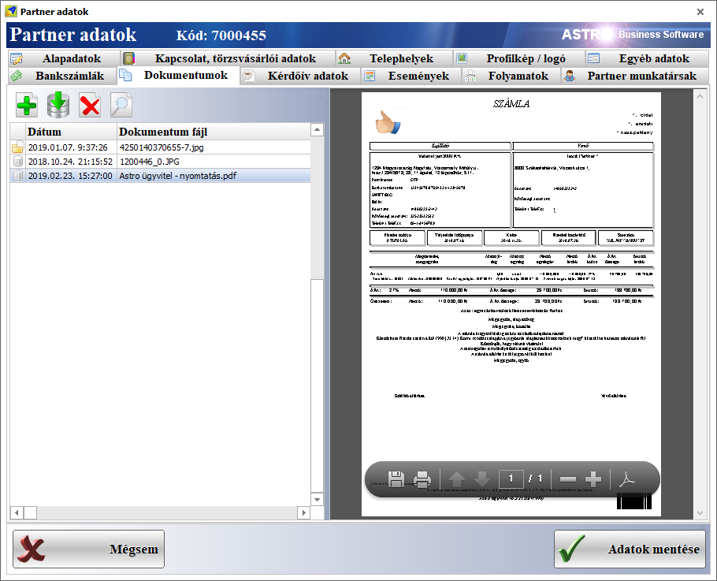
·
Az iktatás
is képes tárolni az adatbázisban a fájlokat (szintén 5MB mérethatárig, efelett
csak a fájlnevet tárolja). Ehhez a legfelül, a Dokumentum tárolása az adatbázisban kapcsolót kell kipipálni.

·
Mivel a
csatolt dokumentumok és képek csak ettõl a verziótól kezdve mentõdnek az
adatbázisba, ezért ahhoz, hogy a korábban csatolt fájlok is az adatbázisba
kerüljenek (ha erre szükség van), a beállításokban, a Karbantartás fülön lehet futtatni két funkciót. Az egyikkel a
képfájlok mentõdnek az adatbázisba, a másikkal a csatolt dokumentumok esetében
történik meg ugyanez a tárolási folyamat.
Érdemes tudni, hogy az adatbázisban tárolt fájlok (képek és dokumentumok) miatt
az adatbázis mérete és tárhely igénye megnõ, bizonyos esetekben kis mértékben
lassulhat is a program mûködése, fõleg lassabb helyi hálózaton, vagy interneten
keresztül (mert a fájloknak is át kell töltõdniük a kliens számítógépekre az
adatok lekérdezésekor). Ezeket a problémákat hivatott csökkenteni a képfájlok
esetén megszabott 2MB, egyéb fájlok esetén pedig az 5MB adatbázis tárolási
méret limit.
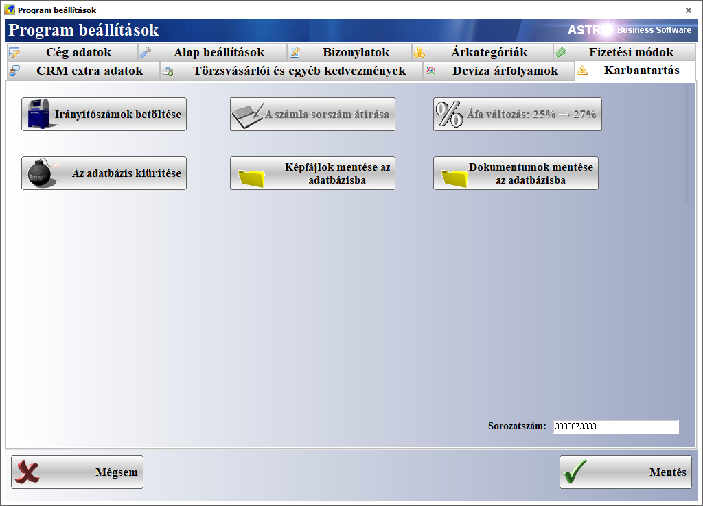
6.24. Verzió változásai:
·
Az adatbázis a v76 verzióra frissül.
·
A számlára rákerül a Csoportos adószám és a Csoportos
társasági adóalany csoportazonosító szám, amely ezen adatokkal rendelkezõ
cégcsoportok esetén kötelezõen feltüntetendõ.
·
A partner modulban, a partner szerkesztõ
ablakban lehet megadni a Csoportos
adószám és a Csoportos társasági
adóalany csoportazonosító szám adatokat.
·
A tárgyi
eszköz modulban történtek kisebb módosítások.
o
A mezõk
sorrendje változott.
o
A
költséghely kiválasztható, a költséghely törzsadatok közül.
o
A raktár
korábban nem mindig mentõdött, most ez javítva lett.
o
A
fõképernyõn, a tárgyi eszközök listájában minden, a tárgyi eszközzel
kapcsolatos adat megjelenik.
o
Elõfordulhat,
hogy a módosítás miatt újra ki kell tallózni a terméket egyes tárgyi eszköz
rekordokhoz.
·
A
bizonylatok tételszerkesztõjébõl nyíló árszerkesztõ oszlopai el voltak tolódva
és nem számolódtak újra a bruttó értékek, a pénznem bõvítés miatt. Javítva.
·
A
bizonylatok listájában tételes nézetre váltáskor bizonyos esetekben hibaüzenet
jelent meg. Javítva.
·
A termékek
törzsadat listában, a részletezõ sávon megjelentek a már törölt raktárak is, a
tárhelyek esetén pedig widememo felirat jelent meg. Mindkét probléma javítva.
6.23. Verzió változásai:
·
Az adatbázis a v75 verzióra frissül és
kompatibilissé válik a MySQL adatbázis-szerver aktuálisan legújabb, v8.0.x
verziójával.
·
A szoftver az alap magyar nyelven kívül tud
angolul, németül, franciául, japánul. Alap esetben ezek közül csak a magyar és
az angol elérhetõ, kérésre (megrendelésre) kapcsoljuk be a többi nyelvet.
o
A nyelv kiválasztása a bejelentkezõ ablakban, a
Felhasználó szövegmezõ feletti, Nyelv/Language kiválasztóval lehetséges.
o
A
szoftverbe integrálásra került egy intelligens fordító rendszer, amely az
esetlegesen elõre le nem fordított szövegek fordítását is elvégzi. Amikor a
fordítás fut, akkor megjelenik a fordító ikon.
o
Jelenleg
elõfordulhat, hogy ritka esetben néhány rövidebb szöveg kimarad a fordításból,
de ezeket is megjelöljük majd a programban a fordító algoritmus számára, hogy
elvégezze rajtuk is a fordítást. Ezen kívül, a beépülõ, külsõ modulokat nem
fordítja jelenleg a fordító algoritmus, de késõbb ez is változni fog.
o
Más nyelv
kiválasztása esetén a bizonylatok, nyomtatványok is fordításra kerülnek
(például a számla, szállítólevél és a többi).
o
Az alap 5
nyelven kívül kérésre (megrendelésre), egyedi fejlesztésként tudjuk bõvíteni
bármilyen más nyelvvel a szoftver nyelvi adatbázisát, akár két napon belül.
·
Az
elérhetõ árkategóriák száma 10-rõl 16-ra bõvült. A terméktörzsben, a termékek
listájában megjelennek az új kategóriák.
·
Minden
árkategóriának meg lehet adni pénznemet, amely alapértelmezésben Ft.
o
Az
árkategóriák pénznemét a beállításokban, az árkategóriák fülön lehet módosítani
(egyedileg, termékcsoportonként, vagy termékenként ez nem módosítható).
o
A
terméktörzsben, a termékek listájában is megjelenik minden árkategóriához
tartozó új, pénznem oszlop.
o
Az
árkategóriák szerkesztõjében mindenhol látható a pénznem is (csak nem
módosítható, mert ezt kizárólag a beállításokban lehet megtenni).
·
Hibajavítások
történtek:
o
A
partner szerkesztõben, a telefonszám szövegmezõ nem nullázódott le új partner
rögzítése esetén. Javítva.
o
A felhasználói jogosultságoknál eszközölt tiltás
ellenére is be lehetett lépni két modulba. Javítva.
o
Számla lezárásakor, ha az a szabályok szerint
jelentendõ a NAV irányába, akkor sikeres jelentés esetén ezt jelzi egy üzenet
formájában.
·
További, esetileg kért módosítások a következõ
verzióban lesznek elérhetõk.
6.20. Verzió változásai:
·
A partner szerkesztõben, az E-mail szövegmezõ
nem nullázódott le új partner rögzítése esetén. Javítva.
·
Ha az operációs rendszer beállításaiban
módosításra került a betûméret, akkor a szoftverben egyes gombok kilógtak a
keretbõl. Javítva.
·
A tétel szerkesztõben, ha be volt állítva, hogy
a következõ cikkszámú termék jelenjen meg és a Következõ gombot nyomtuk meg,
akkor nem mindig az elvárt módon mûködött. Javítva.
6.18. Verzió változásai:
·
A nav jelentés esetében nagyobb várakozási idõ
lett megadva a jelentés utáni válasz lekérdezésére (a nav által javasolt 5
helyett 9 másodperc), mert elõfordult, hogy nem érkezett idõben válasz a nav
szerverétõl és a szoftver az ilyen számlát nem jelentettnek vette.
·
Az optikus modulban, új ügyfél esetén nem mindig
jelent meg az új vizsgálati adatok lap, képernyõ frissítési probléma miatt, ez
most javítva lett.
·
A bizonylatok származtatásakor automatikusan az
aktuális bejelentkezett felhasználó lesz az új bizonylat kiállítója.
·
Egyes egyedi számlaképeken történt kisebb
változtatás.
6.16. Verzió változásai:
·
A szoftver frissítése után lefutó adatbázis
ellenõrzésben történtek változtatások.
·
Az optikus modulban, az adatmezõk elérési
sorrendje és a csatolt fájlok elõnézeti képe lett tovább fejlesztve.
6.15. Verzió változásai:
·
Rendszerjavítások történtek (a legfontosabb: a
nav jelentés esetén a duplán jelentés kizárása).
·
Az optikus modulban történtek fejlesztések
(ügyfél vizsgálati eredmények részletes, dátumok szerinti tárolása a kért
módon, a jogosultságokban vendég mód bevezetése, kapcsolat a tabletes,
androidos ügyfélregisztráló és aláíró programmal).
6.14. Verzió változásai:
·
Az adatbázis szerver korábbi beállításai miatt 1
perc üresjárat után a szoftver offline üzemmódba váltott, ezért elõfordult,
hogy nem lehetett adatot rögzíteni, vagy új adatokat lekérdezni (ez fõleg a
hálózatos felhasználókat érintette). A javítás módosítja az adatbázis szerver
beállításait úgy, hogy a kapcsolatot ne bontsa, csak ha már kiléptünk a
szoftverbõl.
·
Az online számla jelentés funkció 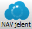
·
A szoftver elindításakor rendszergazdai
jogosultságokat kért, ez problémát okozhatott bizonyos operációs rendszer
verzióknál. Most már nem kéri a rendszergazdai jogokat. Amennyiben a szoftver
valamelyik része (frissítõ, adatbázis mentõ, adóhatósági adatszolgáltatás) nem
indulna el, akkor a szoftver indítóikonján kell beállítani a rendszergazdai
jogokat és így kell elindítani.
·
Új
bizonylat tétel rögzítésekor néha megmaradt az elõzõ adat a szövegmezõkben. Ez
javítva lett.
·
Bevételezéskor
az utolsó beszerzési árat a legutolsó rögzített tételrõl vette. Most a
legutóbbi lezárt raktár bevét bizonylatról veszi át.
6.13. Verzió változásai:
·
Az adatbázis-szerver alapértelmezett
késleltetési és idõtúllépési beállításai túl alacsonyak, ez instabil
kapcsolatot és egyéb problémákat okozhat hálózatos és interneten keresztüli
(felhõ alapú) mûködés esetén. Ezért most a szoftver automatikusan módosítja
ezeket a beállításokat a stabil mûködés érdekében.
Elõfordulhat, hogy az adatbázis-szerver egyes beállításaihoz nem fér hozzá a
szoftver, ebben az esetben manuálisan kell beállítani a megfelelõ értékeket a
szerveren.
· A termékek szerkesztésekor, az alapértelmezett beszállító kiválasztásakor nem nyílt le automatikusan a lista, ez most megoldásra került.
· Bevételezéskor, az átárazó ablakban megjelenik egy kérdés, hogy a 0. árkategóriába bemásolja-e a tételnek megadott egységárat.
· A szoftver frissítõ része egyes esetekben nem tudta felülírni az eredeti fájlokat frissítéskor, ez most megoldásra került.
6.12. Verzió változásai:
· Egy beállítás miatt megjegyezte a bizonylatokon korábban megadott partner nevét és az új bizonylatok esetében is azt ajánlotta fel. Ez javítva lett.
· A termék árkalkulációkor ha nem logikus értéket adtunk meg, akkor egyes árak, vagy haszonkulcsok negatív értéket vettek fel. Ez javítva lett.
· A számlák csoportos jelentései a szoftver indításakor már nem futnak le, hanem már csak a szoftverbõl kilépéskor.
· A számlák csoportos jelentéseinek futtatása után megjelenik egy rövid lista, amennyiben valamely számlákkal probléma volt a jelentés során. Ez a lista Ctrl + C gombok egyidejû lenyomásával másolható, majd a Ctrl + V gomb kombinációval beilleszthetõ például egy levélbe.
6.11. Verzió változásai:
· Az adatbázis kapcsolat átmeneti elvesztését jelzõ hibaüzenetek elrejtésre kerültek, mert ilyen esetekben automatikusan újrakapcsolódik a kliens az adatbázishoz.
· A hosszabb mûveletek esetén, a képernyõ közepén megjelenõ elfoglaltság jelzõ óra most már kijelzi röviden az aktuálisan végzett feladatot. Például az adatbázis kapcsolat elvesztésekor az Újrakapcsolódás szöveget jeleníti meg, miközben ismét felépül újra a kliens-szerver kapcsolat automatikusan.
· Ugyanazt a bizonylatot biztonsági okokból nem lehet egyszerre két számítógépen is szerkeszteni. Ezzel kapcsolatban elõfordult, hogy ha bármilyen okból elvesztette a kliens az adatbázis kapcsolatot, akkor a bizonylatot már senki nem tudta szerkeszteni, az adatbázis javításának futtatásáig. Ez megoldásra került: ha egy bizonylatot senki nem szerkeszt és mégis zárolva van szerkesztés elõl, akkor csak várni kell 1, vagy 2 percet és megnyitható, de ismét csak egy kliensen.
· Az áfa törzsadatok szerkesztõ paneljén történtek változások. Most már meg lehet jelölni három további áfa típust (ezeket eddig is lehetett rögzíteni, csak a szoftver nem ismerte fel típusmegjelölés hiányában):
- Az ÁFA törvény hatályán kívüli
- Áthárított adót tartalmazó különbözet szerinti adózás
- Áthárított adót nem tartalmazó különbözet szerinti adózás

6.10. Verzió változásai:
· Az online hibajelentõ ezután csak a szoftver bezárásakor küldi el egyben az összegyûjtött hibalistát. Az online számla jelentések esetén azonban továbbra is azonnal jelenti, ha probléma történt.
6.09. Verzió változásai:
·
Az adóhatóság online számla rendszerébe
mostantól nem jelenti az olyan 2018 július 1. elõtt készült számlákat,
amelyekbõl e dátum után készült stornó, vagy
helyesbítõ számla. Ebben az esetben elég csak a stornó, vagy helyesbítõ számlát
jelenteni, a korábbi, eredetit nem szükséges.
·
Bevezetésre került egy automatikus online hibajelentõ rendszer, amely a szoftver
használata során keletkezõ hibákat jelenti, hogy fejlesztõi oldalról azonnal
megkezdõdhessen a problémák megoldása. A legtöbb modulban már integrálásra
került ez a hibajelentõ, amely csak a hibaüzeneteket, azok pontos helyét a
szoftverben és esetleg a hibát elõidézõ adatokat küldi el. A hibajelentõ
elsõsorban az online számla jelentés miatt került a szoftverbe, hogy
tökéletesen biztosítható legyen a késõbbiekben is ennek a rendszernek a
zökkenõmentes mûködése. 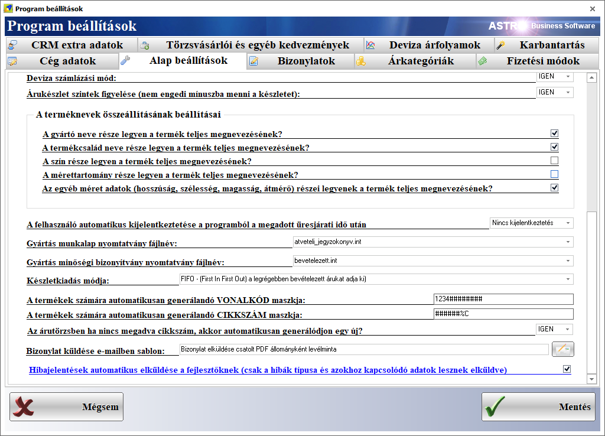
Az automatikus online hibajelentéseket ki lehet kapcsolni a program beállításokban, az alap beállítások
fülön (lent, kék színnel kiemelve):
·
Elõzõleg
biztosítva volt, hogy egy bizonylatot ne szerkeszthessenek egyszerre ketten és
ne lehessen törölni sem, ha valaki egy bizonylaton dolgozik éppen. Ez a funkció
nagyon ritka esetben (például internetkapcsolat elvesztése esetén) hosszabb
idõre zárolhatta a nem lezárt bizonylatokat. Ha egy bizonylatot senki nem
nyitott meg, de mégis az az üzenet jelenik meg, hogy valaki megnyitotta, akkor
az adatbázis javítása funkciót kell
futtatni és a bizonylatok újrakalkulálására igent kell válaszolni.
6.08. Verzió változásai:
·
A legtöbb esetben már az online számla rendszer
indulásának elsõ munkanapján mûködtek a jelentések, de a korábban rögzített
törzsadatok között elõfordulhattak nem megfelelõ formátumban tároltak is,
amelyek miatt az online számla rendszer visszautasíthatott egyes számlákat.
Ezek a törzsadatok a következõk lehettek:
o Hiányos cím adatok (a számla jelentéshez kötelezõ az irányítószám, ország, város, utca/hrsz), ezek közül is jellemzõen az utca megnevezése hiányzott. A javítás után most már a hiányzó utca adat helyére nincs megadva üzenetet fog átadni, így az online számla rendszer már befogadja a jelentést. Amennyiben az irányítószám, ország, vagy város sincs megadva, akkor addig nem zárható le a számla, amíg ezeket az adatokat nem pótoljuk a partnernél.
o Hibásan megadott, vagy nem létezõ adószám (a jelentéshez szükséges legalább a partner adószámának elsõ 8 számjegye). A számlát nem engedi addig lezárni a szoftver, amíg nem biztos, hogy helyes adószám van a partnernek megadva. Ezen kívül a szoftver most már jelezni fogja, ha valószínûsíthetõ a partner nevébõl, hogy egy cég vagy magánvállalkozó, és kérni fogja az adószámot.
o Hibásan megadott saját bankszámlaszám. A javítás után most már kihagyja a jelentésbõl a bankszámlaszámot, ha annak a formátuma hibás (mert a bankszámlaszám nem kötelezõ adat).
· A következõ frissítésbe bele fog kerülni egy automatikus hibajelentõ funkció, amely hiba esetén elküldi a fejlesztõknek a hibaleírást és egyéb részleteit (élõ internetkapcsolat esetén), így sokszor már azelõtt tudni fogunk a problémáról és meg is oldjuk, mielõtt az a szoftver felhasználójának problémát okozna.
6.05. Verzió változásai:
1.)Módosítások, újdonságok:
· Az online számla jelentésbe bekerültek ellenõrzések. Ha valamelyik mellõzhetõ adat hibás, akkor azt nem veszi bele a jelentésbe.
· A számlát nem engedi lezárni, ha a saját cég, vagy a partnercég adószáma helytelenül van megadva (az adószám elsõ 8 számjegye fontos), vagy helyesen van megadva, de nem létezik az adóhatóság adatbázisában.
· Az adószámot ellenõrzi új partner mentésekor is.
· Ha egy munkaállomáson éppen szerkesztünk egy bizonylatot, akkor azt egy másik munkaállomásról nem lehet megnyitni, vagy törölni, amíg be nem fejeztük a szerkesztését.
· A saját bankszámlák szerkesztésekor (program beállítások alap adatok bankszámlák) megadhatjuk, hogy a deviza típushoz melyik bankszámla legyen az alapértelmezett. Ugyanitt, ha mentjük a számla beállításait, akkor ellenõrzi, hogy megfelelõ formátumban adtuk-e meg a bankszámlaszámot.

2.)Javítások:
· A számla szerkesztésekor akkor is módosítja a fizetési határidõt, ha módosítás nélkül ellépünk a teljesítés dátuma, vagy a fizetési mód mezõkrõl.
· Az online számla jelentés nem mûködött Windows XP operációs rendszeren. Ez javításra került.
· Ha esetleg korábban egy belföldi partner számára kiállított devizás számlát nem jelölt meg a rendszer jelentendõként, akkor most ezt pótolja és utána jelenti is (csak a külföldi partnernek kiállított devizás számlát nem szükséges jelenteni).
A jelentett számlákat lehet és érdemes ellenõrizni az adóhatóság
rendszerében is, legalább a hónap végéig (az összegeknek és egyéb adatoknak
egyezniük kell).
Ha eltérés mutatkozik egy jelentett számla esetében, vagy egy számla jelentése
nincs elfogadva, abban az esetben ezt jelezni kell részünkre.
6.02. Verzió változásai:
Online számla
adatszolgáltatás:
Bekerült
a szoftverbe a 2018. július 1.-tõl kötelezõ online számla adatszolgáltatás,
amely a legalább 100 000 forint áfa értékû számlákat érinti. Ezeket a
számlákat abban az esetben nem kell jelenteni, ha vevõ magánszemély.
A szoftver bejelentkezéskor jelezni fogja, hogy még nincsenek megadva az
adatszolgáltatáshoz szükséges adatok.
Ezeket az adatokat a program beállításokban, az online számla adatszolgáltatás
fülön lehet megadni. A szolgáltatás aktiválásához a kapcsolat tesztelése gombra
kell kattintani és ha minden adat helyes, már csak menteni kell a
beállításokat.

A végfelhasználó védelmében a szoftver addig nem engedi a jelentési
kötelezettség alá esõ számlákat lezárni, amíg nem élesítette a szolgáltatást a
szoftverben.
Ha már éles a szolgáltatás, akkor minden, cégek számára
kiállított, legalább 100 000 forint áfa értékû számlát azonnal jelenteni
fog a szoftver. 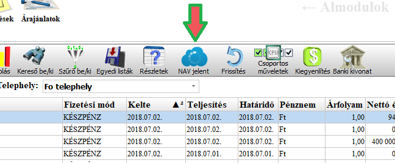
A jelentés két fázisból áll. Az elsõ a számla jelentése, a másik a már
jelentett számlák központi feldolgozottságának ellenõrzése. Az adatszolgáltatás
akkor tekinthetõ sikeresnek, ha azt az adóhatóság rendszere sikeresen
feldolgozta. Mivel a jelentés és a sikeres feldolgozottság között idõeltérés
lehet, ezért idõnként le kell futnia a feldolgozottság ellenõrzésének.
Lehetnek olyan számlák, amelyeket a szoftver nem tud azonnal jelenteni, mert
például nincs internetkapcsolat, vagy nem elérhetõ (nem üzemel) az adóhatóság
rendszere.
Ilyen esetekben és a feldolgozottság ellenõrzésének céljából idõnként
elindítható manuálisan a még nem jelentett számlák adatszolgáltatása és
ellenõrzése, ha az értékesítés modulban, a vevõi számlák modulban vagyunk, a
következõ gombbal:
A szoftver bezárásakor is lefut a még nem jelentett számlák adatszolgáltatása és a jelentetteknek az ellenõrzése. Emiatt a program kilépéskor várakozhat egy ideig. Türelemmel kell megvárni, amíg végez.
A számlák listájába bekerült három új oszlop, amelyeken nyomon lehet követni a jelentendõ számlákat:
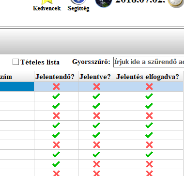
Azokra a számlákra kell figyelni, amelyek jelentendõ megjelölésûek. Ha ezeknél a számláknál a jelentés elfogadva oszlopban is látható a zöld pipa, abban az esetben már semmi dolgunk nincs velük.
Ha kérdés merülne fel, vagy nem várt módon mûködne a jelentés, abban az esetben e-mailben fogadjuk a visszajelzéseket. A problémákat azonnal igyekszünk kezelni. A NAV július végéig amnesztiát adott, ezért a váratlan helyeztek kezelésére, megoldására, a jelentés kényelmesebbé tételére van még idõ.
6.01. Verzió változásai:
1.)Módosítások, újdonságok:
· Az ár akcióknál (törzsadatok/akciók) termékcsoport akció esetén beállítható, hogy a kiválasztott csoport leszármazott csoportjai is örököljék-e az akciót. Ebben az esetben, ha egy leszármazott csoportnál is van érvényes akció megadva, akkor annak az engedménye lesz érvényes. Ha pedig adott terméknek is van akció megadva ugyanarra az idõszakra, akkor
· Szintén az akcióknál beállítható, hogy az akció mely árkategóriákra legyen érvényes (emlékeztetõ: hogy például értékesítéskor mely árkategóriát használja a szoftver, az a partnernél beállított árkategória szerint dõl el, de ki is választható a bizonylat tétel szerkesztõben bal oldalon). Ezzel elérhetõ, hogy egy akció például csak a webshopban megjelenõ árakra legyen érvényes (ha csak azt az árkategóriát pipáljuk ki).
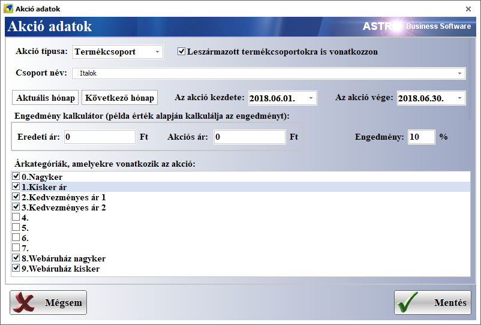
6.00. Verzió változásai:
1.)Módosítások, újdonságok:
· Az árutörzsben, a termék szerkesztõ ablakban a helyettesítõ termékek fülön lehet rögzíteni azokat a termékeket, amelyek készlethiány esetén pótolhatják az adott terméket.
2.)Javítások:
· Különbözõ kisebb javítások történtek a rendszeren.
3.)Fontos:
Két hét múlva mûködni fog a szoftverben a 100 000
forint ÁFA érték feletti számlák automatikus online NAV jelentése.
5.95. Verzió változásai:
1.)Módosítások, újdonságok:
· Az árukészlet listában, a részletezõ sávon, a gyártás bizonylatok fülön, a táblázatba bekerült egy selejtek számát és egy gyártott termék aktuális készlet mennyiségét kijelzõ oszlop.
·
A szoftver jelezni fogja, ha lejárt a frissítési
elõfizetés, ez az emlékeztetõ havonta csak egyszer jelenik meg újra.
Ha megrendelik az újabb idõszakra a frissítési elõfizetést (az emlékeztetõ
ablakban az Igen gomb), akkor a szoftver levelet küld nekünk az elõfizetési
kérelemrõl, a cég nevével.
5.94. Verzió változásai:
1.)Módosítások, újdonságok:
· A gyártás modul listában (az összeszerelésnél a fõ képernyõn) egy új oszlopban látható a késztermék sarzs száma (a gyártásnál megadható adat)
· Az árukészlet listában (a törzsadatoknál) is bekapcsolható a részletezõ sáv (az eszköztáron, a részletek gomb), amelyen a következõ adatok jelennek meg (külön füleken):
o Gyártás bizonylatok: itt látható, hogy a termék sarzshoz mely gyártás tartozik (itt látható a gyártás sorszám), továbbá egy késztermék sarzsa esetén, hogy mely gyártási bizonylaton készült, összetevõ/nyersanyag esetén, hogy mely gyártásnál volt felhasználva és mennyi.
o Raktárkiadási bizonylatok: itt látható, hogy mikor, kinek, mennyi lett kiadva a termék sarzsból, ez használható egyben a szállítás idõpontjának megállapítására is (dátum).
o Szállítólevelek (kimenõ): itt listázódnak azok a vevõi szállítólevelek, amelyek a sarzshoz kapcsolódnak.
o Számlák (kimenõ): itt jelennek meg a sarzshoz kapcsolható vevõi számlák.
2.)Javítások:
· Mindenhol, ahol eddig MS Sans Seriff, vagy Arial volt, most már Tahoma karakterkészlet van használatban, mert ez meg tud jeleníteni speciális karaktereket is.
5.93. Verzió
változásai:
1.)Módosítások, újdonságok:
· A készlet listában (a fõképernyõn) megjelent egy új, anyagminõség oszlop (az utolsó oszlop).
· Bevételezésnél, a tételszerkesztõben az elsõnek megadott sarzs számával veszi készletre a terméket.
· A gyártás modulban, összeszerelésnél, meg lehet adni selejt raktárt és a selejtek számát is. Mennyiségnek továbbra is az összes gyártott darabszámot kell megadni, a selejtek számánál pedig azt, hogy ebbõl mennyi a selejt.
· A gyártás modulban meg lehet adni a levonandó alkotóelemek sarzs számait.
· A gyártás modulban meg lehet adni a késztermékek számára is egy sarzs számot. Ha nincs megadva, akkor automatikusan létrejön egy új szám.
· A gyártás sorszámok fixen 7+8 karakteresek lettek. Például ha eddig GY2018/1 volt a sorszám, ez most GY2018/00000001 lett. A régi sorszámok is eszerint konvertálódtak.
· A gyártás modul listában (az összeszerelésnél a fõ képernyõn) egy új oszlopban láthatók, hogy az elvégzett gyártások esetén mely sarzs számokkal lettek levonva az alapanyagok.
· A gyártás modulban, a termék és a partner kiválasztó szövegmezõ mögött elérhetõk a szerkesztõgombok.
· Új gyártás esetén, az elõzõ gyártás raktárai állítódnak be.
· Elvégzett gyártás esetén egy gombbal megnyitható a késztermék készlet eleme (sarzs).
· Szintén elvégzett gyártás esetén további 3 gombbal elérhetõk a gyártással kapcsolatos bizonylatok.
· A munkaszám menedzser modulba bekerült a gyártás.
· A bizonylatok szerkesztésekor, a tételek gyorsan, megerõsítõ kérdés nélkül törölhetõk, ha a SHIFT gombot törlés közben nyomva tartjuk.
2.)Javítások:
· Az árutörzsben ezután nem lehet két ugyanolyan nevû terméket rögzíteni.
· Az árutörzsben, a gyártási receptúra listában ezután nem lehet menteni tételt, ha nincs kiválasztva az alapanyag termék.
· A készletelem (sarzs) szerkesztõben ezután csak létezõ terméket lehet menteni. Ha a beírt terméknév nem létezik, akkor megjelenik az új termék rögzítése.
· A program beállításokban, a bizonylatok beállításainál a nyomtatvány sablon átállítása elõtt egy megerõsítõ kérdés jelenik meg, a véletlen módosítások elkerülésének érdekében.
· Raktárközi termékátvételnél a másik raktárban az eredeti sarzs számokkal hozza létre a termékeket (ellenõrizve).
· A céglogó és a gyártás logó az adatbázisba mentõdik. Így felhõs használat esetén sem probléma, ha nincsenek a helyi munkaállomásokra mentve a logó fájlok.
· A kiszámlázott szállítóleveleket most már jól jelzi a bizonylat listában (a korábbi bizonylatokhoz le kell futtatni egy adatbázis javítást).
· Hamarosan belekerül a szoftverbe a 100 000 forint áfa tartalom feletti számlák online jelentése a NAV-hoz és tesztelhetõ lesz, kötelezõ pedig július 1.-tõl.
5.91. Verzió változásai:
1.)Javítások:
Korábbi javítások ellenõrzése.
Nem felhasználók által jelentett egyéb hibák javítása.
5.90. Verzió változásai:
1.)Javítások:
Szállítói rendelésnél,
ha automatikusan gyûjtötte össze a rendszer a beszállítótól megrendelendõ
tételeket, akkor hiányzott a raktár tárhely. Javítva.
A bizonylatoknál,
nyomtatásban azokból a tételekbõl mindig csak egy jelent meg, amelyekbõl több
teljesen ugyanolyan volt. Javítva.
A szállítólevél
bizonylatok listájában, ha már minden tétel ki van számlázva, akkor a
Kiszámlázva oszlop értéke is jelezni fogja ezt (eddig csak teljes bizonylat
átfordításoknál állítódott be ez az érték, ami nem volt elegendõ). Hogy a már
elkészült szállítóleveleken is beállítódjon ez az érték, a Beállítások, adatkezelés fõmenü-csoporton belül az Adatbázis javítása funkciót futtatni
kell és amikor megjelenik a kérdés, hogy a bizonylatokat is újraszámolja-e,
akkor az Igen gombot kell megnyomni.
Az excel export
azokhoz az oszlopokhoz is hozzátette a ,00
kiegészítést, amelyek csak egész számot tartalmaztak. Javítva.
A  funkció egy helyi menüt kapott, ebbõl
választható ki, hogy a kézikönyvet (tudásbázis és kézikönyv), a
verziótörténetet, a licencszerzõdést, a névjegyet, vagy az ügyfélszolgálatot
akarjuk-e elérni.
funkció egy helyi menüt kapott, ebbõl
választható ki, hogy a kézikönyvet (tudásbázis és kézikönyv), a
verziótörténetet, a licencszerzõdést, a névjegyet, vagy az ügyfélszolgálatot
akarjuk-e elérni.
Az elõbbiekbõl, az
ügyfélszolgálat menüpont egy új funkciót takar: itt írhatók meg az
észrevételek, problémák, fejlesztési igények, amelyeket üzenetként továbbít a
szoftver a részünkre. Az üzenet szövegében pontosan kell leírni a probléma,
vagy a fejlesztési igény leírását. Az üzenethez fájlok is csatolhatók. Az
üzenetek elküldéséhez a Beállítások,
adatkezelés fõmenü-csoporton belül a Program
beállítások modulban, a Cég adatok
fülön, az E-mail levélküldõ beállítások
fül alatti saját céges levelezõ beállításainak helyesnek kell lennie.
Újabb információk a 2018 július 1.-tõl hatályba
lépõ NAV bekötésrõl:
A nemzetgazdasági minisztérium kiadta a 2018 július 1.-tõl hatályba lépõ, számlázó programok adatszolgáltatásával kapcsolatos rendeletének tervezetét, amely a következõ információkat, szabályokat tartalmazza (ezek még változhatnak, de nagy valószínûséggel már véglegesek):
· Minden számlázó szoftvernek a rendelet hatályba lépésétõl (azaz 2018 július 1.-tõl) kezdve képesnek kell lennie arra, hogy a lezárt (vevõi) számlákról és azok tételeirõl (legalább az Áfa tv. által elõírt adattartalommal) automatikusan egy adatfájlt készítsen és ezt azonnal, vagy legkésõbb 24 órán belül elküldje az interneten keresztül az adóhatóság szerverére.
· Ha bármilyen okból nem tudja jelenteni 24 órán belül a számla adatokat a számlázó szoftver (ha nem elérhetõ az adóhatóság szervere, vagy szoftverhiba, vagy számítógép hiba, vagy internetkapcsolat hiánya miatt), abban az esetben az üzemzavar elhárítása után kell 24 órán belül jelenteni a számla adatokat.
· Az adatszolgáltatás megkezdéséhez az adózónak regisztrálnia kell majd magát az adóhatóság rendszerében és meg kell adnia az általa használt szoftver adatait (szoftver neve és forgalmazója/gyártója: akitõl közvetlenül vásárolta a szoftvert). Ekkor valószínûleg kap majd egy saját egyedi kódot, amelyet be kell írni a számlázó rendszerbe (ugyanakkor ezt a kódot fel kell írnia és eltennie biztos helyre). Ennek elvégzése az adózó feladata és felelõssége lesz. Amikor ez idõszerûvé válik, a szoftverünk automatikusan emlékeztetni fog mindenkit, hogy ezt tegye meg és meg fogja jeleníteni azt a weblapot, amelyen elvégezhetõ ez a regisztráció.
Az új szabály miatt, 2018 július 1.-tõl a számla adatok feladásához vagy folyamatos internetkapcsolatra lesz szüksége a szoftvernek, vagy 24 órán belül, legalább egy alkalommal, a számlák jelentésének idejére kell internet kapcsolatot biztosítani a szoftver (és a szoftvert futtató számítógép) számára. Ha több számítógépen is használják a szoftvert egy adatbázisból (vagy felhõ alapúan), akkor elég csak az egyik munkaállomás számára biztosítani legalább a feladások napi elküldéséhez az internet kapcsolatot. Az internet kapcsolat és ezzel a feladások elküldésének biztosítása a szoftver felhasználójának a felelõssége. A feladások nagyon minimális adatforgalmat bonyolítanak majd le, amelyhez elég egy kis sávszélességû internetkapcsolat is. A számlák jelentése a háttérben, láthatatlanul történik majd. A szoftver csak akkor küld majd figyelmeztetést, ha nem sikerült jelentenie az elkészült számlákat.
5.89. Verzió változásai:
1.)Javítások:
Ha a tétel szerkesztõnél a termék kiválasztása után a darabszámra ugrott a
fókusz, akkor onnan nem lehetett tovább lépni a kurzor gombokkal, csak az
egérrel. Javítva.
A bizonylatok tétel listája nem töltõdött be a legfrissebb adatbázis szerver verzió esetén. Javítva.
Az eredmény kimutatásnál nem szûrte a partnereket azok csoportja szerint. Javítva.
A raktárközi termékmozgató bizonylatnál nyomtatásban nem jelent meg a tétel megjegyzés és az átadó és átvevõ személye. Javítva.
Megjegyzések:
Ha valamelyik modul listája az elõzõ frissítés után nem
mûködne megfelelõen, az annak köszönhetõ, hogy a listák mentési formátuma
megváltozott az egyedileg beállítható oszlop csoportosítás és rész-összesítések
miatt.
A megoldás, hogy zárjuk be a megnyitott modul fülét a fülsávon és nyissuk meg a
modult újra. Ekkor beállítható a megfelelõ lista, majd menthetõ
alapértelmezettként.
Ha a modulok listájánál lassulás tapasztalható, akkor ki kell kapcsolni az oszlopok sorba rendezését (az adott oszlop fejlécére kattintással addig, amíg el nem tûnik a felfelé, vagy lefelé mutató fekete háromszög), hogy csak egy, vagy két oszlop szerint legyenek rendezve az adatok.
A csoportosítás és a rész-összesítések is többletmunkát jelentenek a szerver számára, ezért ha ezek a funkciók be vannak kapcsolva, kisebb mértékû lassulás tapasztalható, nagy adatmennyiségnél.
Az adatbázis szerveren jelentõsen lehet gyorsítani, ha annak
memóriakezelése optimálisan van beállítva. Igény esetén ezt ellenõrizzük, vagy
egy helyszínen dolgozó informatikus szakembernek továbbítjuk a beállítandó
értékeket és hogy hol lehet ezeket módosítani.
5.88. Verzió változásai:
1.)Html dokumentum formátumú verziótörténet:
Ez a verziótörténet minden frissítés után megjelenik. A
verziótörténet késõbb bármikor megtekinthetõ a  gombra megjelenõ kézikönyvben elérhetõ linken
is.
gombra megjelenõ kézikönyvben elérhetõ linken
is.
2.)A rendszer egészét átfogó javítások:
Egy átfogó ellenõrzési és tesztelési folyamat eredményeképpen több modulban történtek kisebb javítások.
Kért, kiemelt javítások:
A gyorsjelentéseknél a bizonylatok bevételi oldalán az összegek kiszámítása került javításra.
Az akciók definiálásánál bizonyos esetekben hibaüzenet jött. Javítva.
Tételátvételnél tört értékû mennyiséget nem lehetett beírni. Javítva.
A bizonylatok lezárásakor azok e-mailben küldése
(mellékletként, PDF formátumban, úgynevezett távnyomtatásként), ha a
bizonylaton be van kapcsolva a  és a kiválasztott partnernek meg van adva az
e-mail címe.
és a kiválasztott partnernek meg van adva az
e-mail címe.
A bizonylatok elküldéséhez használatos e-mail sablont a Beállítások,
adatkezelés fõmenü csoporton belül a Program beállítások modulban az Alap
beállítások fülön alul, a Bizonylat e-mail sablon beállításnál lehet
módosítani a  gombbal. Itt már létezik egy e-mail sablon a
bizonylatok elküldéséhez, szükség esetén ezt lehet módosítani. Ajánlott benne
hagyni vevõi számla távnyomtatás esetére a bizonylat kinyomtatására
figyelmeztetõ szöveget, mert a számla csak úgy érvényes, ha a vevõ is
kinyomtatja legalább egy példányban. A levélsablonban vannak változók is (a
kapcsos zárójeles részek), melyeket a szövegnek megfelelõ módon kell használni.
gombbal. Itt már létezik egy e-mail sablon a
bizonylatok elküldéséhez, szükség esetén ezt lehet módosítani. Ajánlott benne
hagyni vevõi számla távnyomtatás esetére a bizonylat kinyomtatására
figyelmeztetõ szöveget, mert a számla csak úgy érvényes, ha a vevõ is
kinyomtatja legalább egy példányban. A levélsablonban vannak változók is (a
kapcsos zárójeles részek), melyeket a szövegnek megfelelõ módon kell használni.
3.)A kliens szoftver indítási ideje minimálisra
csökkent:
A kliens szoftver elindítása után néhány másodperc múlva már bejelentkezhetünk a rendszerbe. A betöltõ képernyõn már csak az indításnál végrehajtandó ellenõrzéseket kell megvárni (frissítés ellenõrzés, árfolyamok frissítése). Ez a módosítás egy másik hasznos változást is hozott magával: a kliens szoftver memóriahasználata is minimálisra csökkent.
4.)A modulok fõ listájában az oszlopok szerinti
csoportosítások és azok rész-összesítései tetszõlegesen beállíthatók:
Egy minden eddiginél gyorsabb és áttekinthetõbb, szerver oldali, többszintû csoportosító és rész-összesítõ algoritmus került bevezetésre.
Például a bizonylatainkat csoportosíthatjuk vevõ és azon belül sorszám alapján. Ezeket tételes nézetben tovább csoportosíthatjuk például tételcsoport, termékcsoport, vagy áfa kulcs szerint.
Az oszlopokon a csoportosítást úgy lehet bekapcsolni, hogy a
csoportosítani kívánt oszlop fejlécén
jobb egérgombbal kattintunk, majd a megjelenõ helyi menüben kiválasztjuk a Csoportosítás az oszlop szerint opciót.
Ekkor az adatok ezen oszlop alapján (is) csoportosítva lesznek.
Ugyanígy eljárva kapcsolhatjuk ki a csoportosítást az adott oszlopon.
A csoportosító oszlopok mindig a táblázat elejére kerülnek automatikusan.
A csoportok rész-összesítéseit ugyanebben a helyi menüben, a
Csoportosítás összesítések opció
kiválasztásával kapcsolhatjuk be, vagy ki. A rész-összesítések bekapcsolása
minden csoportosító oszlopra egyszerre vonatkozik.
Az oszlop összesítések típusát (nincs, összesítés, átlag,
stb.) ahogy eddig is, a táblázat alatti teljes összesítés sávon a jobb
egérgombbal kattintva megjelenõ helyi menüben választhatjuk ki.
A csoportosított oszlopok csoportosítási sorrendjét szintén az említett helyi menüben állíthatjuk be, az Oszlop prioritása részben, vagy az oszlopot a fejlécénél megragadva és a megfelelõ pozícióba húzva is elvégezhetõ ez a beállítás.
A csoportosítás rendezésének irányát is meghatározhatjuk a helyi menübõl a A rendezés iránya résznél, vagy az oszlop fejlécre kattintva a bal egérgombbal.
Minden csoport szintet más szín jelöl, így könnyen megkülönböztethetõk a listában a különbözõ szintekhez tartozó összesítések.
A listák mentésével, amelybe beletartozik az alapértelmezett lista nézet mentése is, a csoportosítás beállítások is mentõdnek.
Bekapcsolt
csoportosítás és rész-összesítések: 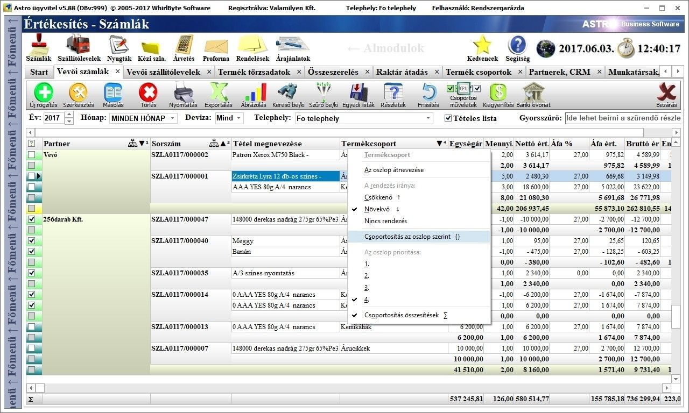
Megjegyzések:
A csoportosítás bevezetése miatt megváltozott néhány oszlop definíciója és
emiatt elõfordulhat, hogy bizonyos listák alapértelmezései felülíródnak és
alaphelyzetbe állnak a frissítéskor (ilyen tapasztalható a bizonylatoknál és a
termékcsoportoknál).
A csoportosítás elvileg tetszõleges mélységig beállítható, de jelenleg ez három
szintûre lett korlátozva, mert ennél több csoportosítási szint felesleges,
mivel bonyolítaná a kezelést és átláthatóságot, emellett terhelné a szervert.
5.)A modulok fõ listájában a sorok státuszát jelzõ
színek átköltöztek az elsõ, indikátor oszlopba:
Ez részben az oszlop csoportosítások bevezetésével vált szükségessé.
Például a bizonylatoknál, ahogy eddig, sárgával vannak jelölve a
lezáratlan piszkozatok , a
kiegyenlítetlenek pirossal ,
zölddel a kiegyenlítettek ,
türkiz színnel az érvénytelenítettek és helyesbítettek  (a fenti példa képen
látható).
(a fenti példa képen
látható).
6.)A modulok fõ listájában több sor is kijelölhetõ
egyszerre:
Az 5. pontban említett legelsõ, indikátor oszlopban megjelentek a
jelölõnégyzetek ,
amelyekre rákattintva, vagy a sorban állva a [space] billentyût megnyomva
kijelölhetõek a sorok ,
vagy ugyanígy visszavonható róluk a kijelölés .
A táblázat bal felsõ sarkában látható ikonra, vagy gombra kattintva a lista egészét
kijelölhetjük, vagy ugyanígy vissza is vonhatjuk a kijelöléseket minden
sorról.
Ennek a lehetõségnek a tömeges
adatmûveletek elvégzése esetén van szerepe. Például ezen a módon egyszerre több
adatot is törölhetünk. A tömeges adatmûveletek még bõvítés alatt vannak, idõvel
egyre több feladatot lehet majd egyszerre elvégezni egyszerre több kijelölt
adaton.
A listák újra betöltõdésekor a
kijelölések mindig megszûnnek, ezért a kijelöléseket célszerû a már megfelelõen
leszûrt listán elvégezni.
7.)A modulok fõ listájának szûrési módjának
bekapcsolásában történtek kisebb változások:
A fõ lista szûrõ módot most már ugyanazzal a gombbal lehet be és kikapcsolni
(Szûrõ be/ki):
A korábbi alapértelmezett lista betöltése ikon most már
kizárólag a lista frissítéséért, újra betöltéséért felelõs:

A szûrõ mezõk
kiürítését a szûrõ táblázat bal felsõ sarkában látható kis szûrõ törlése ikonra
kattintva lehet gyorsan elvégezni:

8.)A bizonylatoknál megjelent a gyorsszerkesztõ mód:
Gyorsszerkesztõ módban gyorsan és hatékonyan tudunk tételeket adni a listához,
vagy azokat közvetlenül a listában szerkeszteni.
A gyorsszerkesztõ mód a Gyorsszerk. feliratú gombbal kapcsolható be és
ki:

A gyorsszerkesztõ módban egy fix elrendezésû speciális táblázatot kapunk, ebben szerkeszthetjük közvetlenül az adatokat. Ebben a táblázatban meghatározott sorrendben vannak a legfontosabb (minimálisan szükséges) tétel adatok: Termékkód, Cikkszám, Megnevezés, Mennyiség, Mennyiségi egység, Egységár (bruttó/nettó beállítható), Engedmény, Áfa kulcs, Bruttó összérték.
A részletes tétel adatok szerkesztéséhez és egyéb termék információk megjelenítéséhez továbbra is a tétel szerkesztõ ablakot kell megnyitni (Szerkesztés gomb az eszköztáron).
A szerkesztés közben az [enter] billentyûvel folyamatosan lehet balról
jobbra haladni, a sor végére érve a következõ sor elejére lép, vagy új tételt
kezd, ha a lista alján vagyunk.
Új tétel sort a gyorsszerkesztõ táblázat bal felsõ sarkában látható gomb megnyomásával is kezdhetünk, új bizonylat
esetén például ezzel indítható a tételek rögzítése.
Ha egy tétel (termék) Megnevezés nevû oszlopán állunk a
gyorsszerkesztõben, akkor a kiválasztótól jobbra látható egy gomb, amelyre rákattintva hozhatunk létre új
terméket az árutörzsben, vagy szerkeszthetjük a tételen kiválasztott terméket.
A terméket megadhatjuk a termékkód, a cikkszám és a megnevezése alapján is,
ahogy ezt a tétel szerkesztõ ablakban is meg lehet tenni.
Vonalkód alapján nincs kiválasztás, erre a célra az eszköztár alatti sávon a
Kódbeolvasás szövegmezõ szolgál, ide lehet beolvastatni (vonalkód
leolvasóval), vagy kézzel beírni a termék vonalkódot.
Gyorsszerkesztõ módban, a táblázat felett állítható be, hogy az egységárat nettóban, vagy bruttóban szeretnénk-e látni és megadni.
A gyorsszerkesztõben egyedül a Br.érték (bruttó
összérték) oszlop értéke nem szerkeszthetõ, mert az kalkulált adat.
A mennyiség oszlopban van lehetõség a tételek közötti lépkedésre a fel és
lefelé mutató kurzorgombokkal, de ez az elsõ három oszlopban nem mûködik, mert
ott a kiválasztandó termékek között lehet ezekkel a gombokkal keresni.
A tételeket gyorsan lehet törölni a legutolsó, név nélküli oszlopban, a ikonokra kattintva.
Ha a tétel listában marad egy üres sor (amelyen nincs kiválasztva termék), azt a rendszer automatikusan törli.
A tétel lista színkódok is változtak kis mértékben. A sötétzöld szín
(vagy türkiz) továbbra is a helyesbített tételeket jelöli a helyesbítõ
bizonylaton, az újdonság a sárga szín, amely a más bizonylatról átvett (Tétel
átvétel funkcióval) tételt jelöli.
A helyesbített tételek nem szerkeszthetõek. A más bizonylatról átvett tételeken
a termék nem módosítható, hanem csak a mennyisége, egysége, egységára,
engedménye, áfa kulcsa.
Bekapcsolt
gyorsszerkesztõ mód:
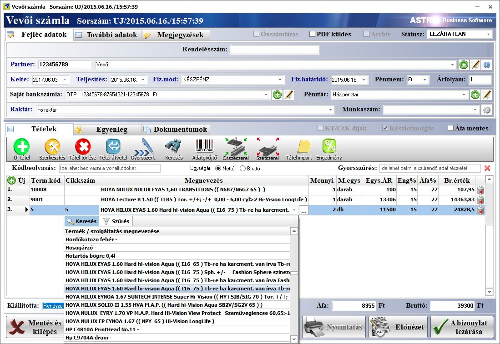
9.)A bizonylatoknál az eszköztáron a gyártást
felváltotta az összeszerelés és szétszerelés:
Korábban egy kiválasztott tételt egyszerûen gyártásba küldhettünk a gyártás
ikonnal. Ugyanez végezhetõ el az Összeszerel gombbal, de most már elérhetõ a
termék szétszerelése is Szétszerel gomb használatával. Erre azért van
szükség, mert a gyártás modul is két külön funkciót kapott.
10.)A gyártás különvált összeszerelés és szétszerelés
modulokra:
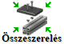
Az összeszerelés során új példányokat állíthatunk elõ egy termékbõl, a
terméktörzsben, a termékszerkesztõ ablakban található gyártás fülön megadott
receptúra alapján.
A szétszerelés az összeszerelés
ellentéte, a termékeket szétbontja annak terméktörzsben, a termékszerkesztõ
ablakban található gyártás fülön definiált összetevõire. 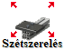
Mindkét mûveletet az eddig már
megismert, gyártás ablakban végezhetjük el, amelynek a kezelése nem változott.
Mindkét mûvelet típushoz megadhatók a gyártás technológia mûveletei a
Mûveletek fülön és kiállítható minõségi bizonyítvány is. A korábbi mûködéssel
ellentétben már nem innen kereshetõ ki a gyártott termék készlet eleme, hanem
létrejön összeszerelés esetén az összeszerelendõ termékek számára egy raktár
bevét, az alkatrészei levonásához pedig egy raktár kiadási bizonylat.
Szétszerelés esetében a szétszerelendõ termékrõl jön létre egy raktár kiadási
és az alkatrészeirõl egy raktár bevét bizonylat.
Megjegyzés: A szétszerelés már az elõzõ
verzióba is belekerült, de a bizonylatkezelésbe integrálása miatt ennél a
verziónál is említésre került.
11.)A frissítések letöltési ideje hozzávetõlegesen a
felére csökkent:
Ez
annak köszönhetõ, hogy a beépülõ modulok (úgynevezett pluginek, mint például a nyomtatványszerkesztõ,
az adatbázis mentõ és az adóhatósági jelentések moduljai) külön frissülnek,
ezért a fõ frissítés állományából kikerültek, emiatt a frissítés gyorsabban
letöltõdik.
Amikor elindítunk egy beépülõ modult a szoftverbõl, akkor a plugin indító
megvizsgálja, hogy elérhetõ-e belõle frissebb, és ha igen, akkor elõször
gyorsan frissíti és csak azután indul el. Ezen a módon az is megoldható, hogy a
fõ szoftver frissítése nélkül frissüljön például egy adóhatósági jelentõ modul.
12.)Nem szükséges MS Excel az xls és xlsx fájlok
importálásához és exportálásához:
A szoftver natívan, a számítógépre
telepített Excel táblázatkezelõ nélkül képes létrehozni és beolvasni xls és
xlsx formátumú fájlokat, amelyeket ingyenes Openoffice Calc-al, vagy Google
Docs-al is meg lehet nyitni és szerkeszteni. Ez a változás magával hozta azt
is, hogy jelentõsen gyorsult az exportálás xls és xlsx formátumba.
13.)A start lapon létrehozható gyorsjelentésekbõl
informatív céges mûszerfalat építhetünk:
A Start lapon az gombbal gyorsjelentés ablakokat hozhatunk
létre. Ezek a gyorsjelentés ablakok ugyanúgy mozgathatók és átméretezhetõk,
mint bármely másik szokványos ablak. Több gyorsjelentés ablakot definiálva egy
informatív céges mûszerfalat építhetünk, amely folyamatosan monitorozza a cég
mûködését.
A gyorsjelentés ablakok fejlécén a ikonra kattintva megjelenõ beállítás menüben
adható meg, hogy milyen formában szeretnénk megjeleníteni az adatokat, továbbá
a jelentés típusa, az idõszak, az értékek típusa, és a telephely. A
gyorsjelentés beállító menü akkor is megjelenik, ha az adott ablakon jobb
egérgombbal kattintunk.
Az  gombbal nyugtázhatjuk a gyorsjelentés
beállításokat.
gombbal nyugtázhatjuk a gyorsjelentés
beállításokat.
A gyorsjelentések adatai 15 percenként
automatikusan frissülnek, a rendszerüzenetekkel együtt. Ezzel az ideális idõ
intervallummal kevésbé terhelõdik le a szerver, de mégis éppen elég ahhoz, hogy
szinte valós idõben követhessük a cég állapotát.
A gyorsjelentések adatainak frissítése
manuálisan is elindítható a  gombra kattintva. A jelentés ablakokat sorba
rendeztethetjük a gombbal.
gombra kattintva. A jelentés ablakokat sorba
rendeztethetjük a gombbal.
Ha a gyorsjelentések nem férnek ki a Start
lapra, akkor a lap belsõ mérete megnõ és a görgetõsávokkal lehet elérni a
lapról lelógó, vagy nem látható ablakokat.
A gyorsjelentések mentõdnek, amikor
kilépünk a programból, és visszatöltõdnek, ha bejelentkezéskor azt választjuk
ki, hogy betöltõdjön az elõzõ munkamenet. Ekkor a bejelentkezés egy kis plusz
idõt vesz igénybe a gyorsjelentések adatainak frissítése miatt.
A gyorsjelentéseket csak azok a
felhasználók használhatják, akiknél a jogosultságok között engedélyezve van a
Kimutatások, döntéstámogató elérése.
Gyorsjelentés
ablakokból épített céges mûszerfal a Start lapon: 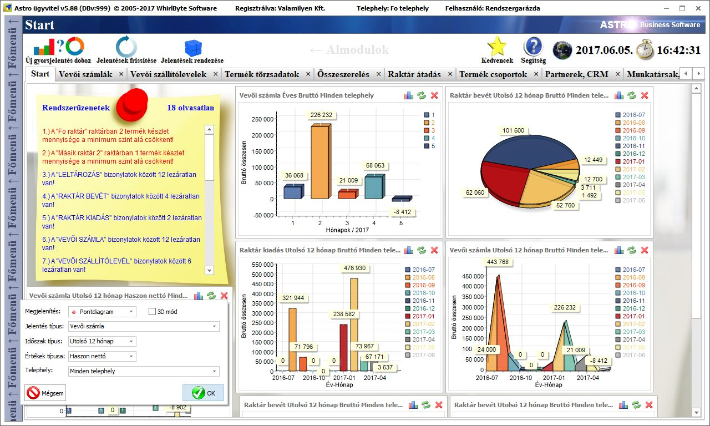
Megjegyzések: A gyorsjelentések már a
korábbi verziókban is megjelentek, de az újdonságainak részletesebb leírása
miatt ennél a verziónál ismét említésre került. A gyorsjelentések típusai a
késõbbiekben bõvülni fognak, a felhasználói igények szerint. Tervben vannak az
értékesítõk, földrajzi elhelyezkedés (országok, megyék, városok), óránkénti
átlagos értékesítések, termékcsoportok, top termékek, top partnerek és sok más
egyéb szempontok szerinti gyorsjelentések típusok is.
A gyorsjelentésekbõl épített céges mûszerfal használatához ajánlott minimum
full HD felbontású monitort használni, hogy minél több jelentés ablak látható
legyen egyszerre a képernyõn.
Fontos információ a
NAV bekötésrõl:
Csak 2018 júliusától lesz kötelezõ a számlázó
résznek jelentenie a NAV-nak a 100 000 forint áfa tartalom feletti
számlákat automatikusan. Az ehhez szükséges jelentést már most is képes a
szoftver elkészíteni, de még nincs hova feltölteni. Amint adott lesz a
lehetõség a NAV jelentés tesztüzemére (amely elõreláthatólag idén indul),
belekerül a szoftverbe is kipróbálható, aktiválható lehetõségként a jelentés
feltöltése. Ehhez késõbb meg fognak jelenni a szükséges beállítási lehetõségek
a program beállításokban.